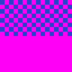
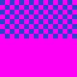
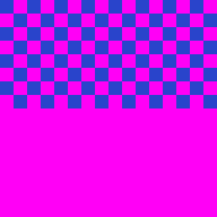
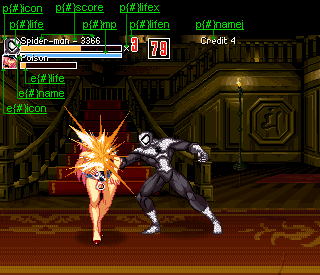
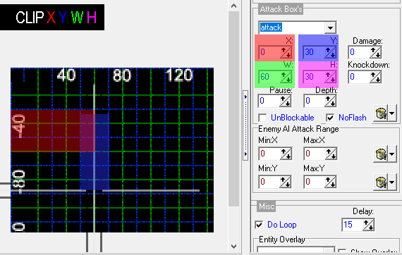
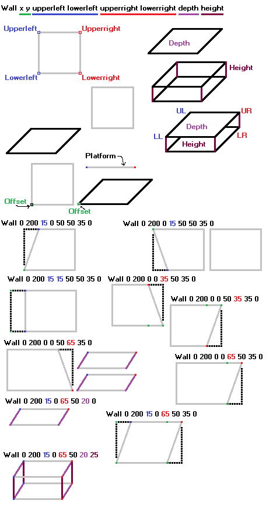
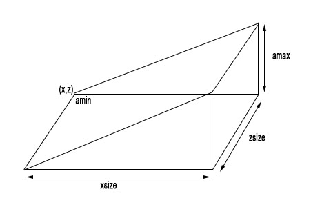

OpenBoR Guide
by Fugue & Bloodbane. Currently updated by O Ilusionista.
Last update on 2020.12.16 - by O Ilusionista
- Native Functions: added @cmd projectile usage example
General Info
Beats of Rage
- Beats of Rage is a semi 3D beat 'em up game made by Senile Team. It is inspired by Streets of Rage series, popular and great semi 3D beat 'em up games by SEGA for Genesis console. However this game uses King of Fighters (a 2D 1vs1 game) sprites as its sprites for heroes and enemies.
- As a beat 'em up game, this game has features like combo which performed by tapping attack button after it hits enemy, jump and jumpattacks, SoR2 (Streets of Rage 2) style special, Capcom style grabattacks and SoR2 style throw. There are various enemies in this game, some of them can perform upper attack to hit jumping heroes, some of them can break free from grabs, some of them can grab or throw heroes etc. SoR2 style bikers can also be found here. Of course items like foods and 1Up are also available here.
- This great game is also moddable which allows players or modders to modify a mod or even make mods. The method of modding is quite simple cause it's basicly about providing pictures, sprites, wavs and animated gifs and converting them for use in BoR and also setting them with powerful text files (so to speak) for making heroes, enemies, levels etc. In fact, Beats of Rage is actually comprised of Pak and engine (BoR.exe). We could say that Pak is the body while engine is the soul. That's also the reason why mods are usually only in the form of Pak without the engine.
- Pak isn't editable (in normal way) that's why before modding, modders need to unpak a mod 1st. After modding is finished, the mod can be packed to be played. Actually it's possible to play a mod without packing but it's best to pak it to make it neat. This great game attracted many players which formed BoR community.
- Even though modding is that simple, BoR have many features which have their own usage and their own place (or text to be exact) to declare. This manual is for explaining those features and where they can be declared.
- Due to lack of required features from BoR (Beats of Rage) and many requests, some coders stepped in to improve BoR, coded those missing features and fulfilled some requests. There were some BoR variations because of that e.g OpenBoR, DarkBoR and HOR. OpenBoR is the most advanced one and this manual includes OpenBoR features. Actually latest OpenBor support scripts but it's not included here.
Getting Started
- Before you can start modding, you need the ingredients. Most of ingredients are sprites and texts. Due to many required files and complexity of them, it's highly recommended to start modding by editing available mod or pak instead of creating the ingredients one by one. Another way is by DL-ing BoREdit pack from
http://www.senileteam.com/and expand it. The pack contains enough basic ingredients to start a mod.
- You'll need a program called PAXPLODE.exe. which can be DL-ed from http://www.lavalit.com/. You need to register there 1st before you can DL anything though.
- Put this program in same folder with .pak that you want to 'explode'.
- Run this command: paxplode.exe [pakname] to 'explode' the pak. [pakname] is the name of .pak file (.pak is included).
- If you do it right, a window showing DOS messages about extracting files will appear.
- The extracted files should be in same folder in new folder named DATA.
- NOTE: Some ppl reported that the files aren't in same folder with Windows XP. If that happens, find folder named DATA in your harddisk. I don't understand why this could happen. It work like I said above in Windows 98SE.
- Inside DATA folder, there should be various folders whose name are: BGS, CHARS, LEVELS, MUSIC, SCENES, SOUNDS and SPRITES. Aside from those, there should be text files i.e models.txt, levels.txt, lifebar.txt and video.txt and pal.act. Each text files have their own explanation which will be explained in their own section below.
- About the folders, each contains files and texts related to folder name. So BGS contains background pictures and palettes, CHARS contains character's sprites and texts etc.
- NOTE: Some folders aren't mandatory meaning you can put all of their files in same folder (still within DATA folder that is) and it would still work (provided the paths are correct). However it's recommended to use different folders like above to make modding easier. You can add another folders if you need to, just make sure the paths are correct. By the way, you can play this paxploded mod! Yes you can!
- NOTE 2: Pal.act is global palette, but its not needed anymore (since its encouraged to use 16bit video mode). In the old BOR (or if you use 8bit color mode), this is required - because every sprite in mod must use same palette which is this global palette. You need Adobe Photoshop to view and make .act files.
Playing paxploded PAK:
- Put bor.exe in same folder as DATA folder (if you are still using old BoR engine).
- If you are using OpenBoR, put OpenBoR.exe, every .dll and other folders like LOGS, MENU, PAKS, SAVES and SCREENSHOTS which come with it in same folder as DATA folder. Don't forget to put empty .pak in PAKS folder. You can get empty .pak from BoREdit pack.
- No matter which engine you're using, you can play the mod by running the .exe.
- NOTE: This is how modders test their mods without packing them.
- As for modding itself, what you should do is modifying certain files and make new ones. Since there are many files you might need to modify or make, read the explanation of what each text does below to know what to do with them.
- Once you're done and satisfied with your mod, the last step is packing it.
Creating a PAK File:
- You'll need a program called PACKER.exe.
- Put this program in same folder with DATA folder which contains your mod.
- Run this command: packer.exe [packfile] DATA. [packfile] is the name of pak you want to create. Actually the DATA can be replaced with other name if you 'DATA' folder has different name but let's use that name.
- If you do it right, a window showing DOS messages about packing files will appear.
- The .pak should be in same folder.
MODELS.txt:
- This text file determines entities which are loaded and are going to be loaded to the engine. This file is mandatory obviously. Aside from that, this file also determines some general settings for models.
- Models.txt must be placed right under DATA folder.
- Entities to load are declared with .txt. How to make and modify these texts are described in Entity Files section below.
- Order of loaded playable characters in this file also defines the order of them in select screen
Generic Player Properties
ajspecial (bi)
- Determines the input for special attacks and whether or not players can block attacks.
- 0 = players use their special with the special key they have assigned and they cannot block.
- 1 = players can use the input for ATTACKBOTH as a special attack. They can also use a block animation, which will be used when the special attack button is pressed.
- If you set 1 but the player does not have a block animation, they can use their special with both the special key and ATTACKBOTH.
autoland {int}
- {int} is either 0, 1, or 2, and changes how entities can land after being thrown.
- 0 (default) = Players can press up and jump when hittting the ground after being thrown by another player or an enemy to land safely.
- 1 = they can use up and jump for a safe landing when thrown by an enemy, but automatically land safely if thrown by another player. Pits will still be a danger, of course.
- 2 = players can't use a safe landing at all.
nocost {bi}
- Determines how player's special and freespecial attacks costs life.
- 0 = they always costs life whether they hit something or not
- 1 = only lose life if they hit something
nolost {bi}
- Controls whether or not players will drop the weapon they are holding when grabbing an enemy.
- 0 = players will drop their weapon while grabbing (default). Same result if no value is given.
- 1 = players won't drop their weapon while grabbing.
noaircancel {int}
- Sets whether players can cancel their jumpattack with other jumpattacks or not.
- In case you don't know, you can cancel a jumpattack by pressing command for other jumpattack. For instance, while performing JUMPATTACK2, pressing attack will cancel the move and player performs JUMPATTACK.
- 0 = Cancellation is possible (default)
- 1 = Cancellation is only possible after last jumpattack is finished
- 2 = Cancellation is not possible at all
combodelay {int}
- This command sets interval time between attacks in default combo to perform combo attack by tapping attack button.
- Default to 100 which means 50 centiseconds. It means if player press attack button 2 seconds after 1st attack connects, the 2nd attack won't be a combo. However, if it's pressed almost half second later, 2nd attack will be combo
- Great to disable cheap infinite combo!
offscreen_noatk_factor {bi}
- This command determines the ability of an entity to be able to attack while off screen. Useful to prevent entities that use ranged attacks like shots for example, they can attack without being in the visible area.
- 0 Means that the entity can attack outside the visible area (default)
- 1 Means that the entity CAN NOT attack outside the visible area.
Generic Blocking Properties
blockratio {bi}
- If this is set, blocking will not completely nullify damage. The entity will take one forth of original damage instead
mpblock {bi}
- If this is set, damage from blocking will consume MP instead of health. If player is running out of MP, the damage will take health.
- blockratio needs to be set before using this.
nochipdeath {bi}
- If this is set, entities can't die by blockdamage (damage from blocking).
- blockratio needs to be set before using this.
- Entities health can be reduced to 1 health with this the next successful blocks won't take any health.
blockback {bi}
- Flag to determine if attacks can be blocked from behind.
- 0 (default) = Entities can not block attacks from behind.
- 1 = Block attacks are possible
Select Screen Properties
colourselect {bi} {bi}
- {bi} is a binary value.
- 0 = you can't change your character's palette.
- 1 = you can change your character's palette on the select screen by pressing up and down to cycle through the remaps.
- If a remap is used for a character's 'fmap' or some remaps are hidden with 'hmap', they will not be selectable.
- That's "colour" with a u, not "color". Some countries spell it different ways.
spdirection {b1} {b2} {b3} {b4}
- Sets the facing direction of players in select menu.
- 0 = facing left.
- 1 = facing right.
- {b1} is for player 1, {b2} is for player 2 and so on.
- Default is 1 0 1 0.
Miscellaneous
nodropen
- Setting this command makes enemies not knocked down on respawn. Normally when player respawns, all enemies onscreen are knocked down (no damage though).
- This command doesn't take any argument. Declaring it is enough to set it.
forcemode {bi}
- Sets whether the mode specified in models.txt is switchable or not.
- 0 = the mode can be switched in options menu.
- 1 = the mode can't be switched {default}.
versusdamage {bi}
- Sets whether players can hit each other or not. This overrides options menu.
- 0 = players can't hit each other.
- 1 = players can hit each other.
nocheats {bi}
- Sets cheat's allowance in this mod
- 0 = Cheats are allowed
- 1 = Cheats are forbidden
- Those who like fair play should use this ;).
nodropspawn {bi}
- When it is on, the spawn position will be restricted to spawn entry setting.
nodebug {bi}
- in models.txt. set nodebug 1 to disable debug menu in options
Attack types & animation limit
If you are receiving an error "Invalid animation name line xxx" , you need to rise the value of the max animations you use for each type. For example, if you have MAXFOLLOWS 4 and try to use FOLLOW10, you will receive that error and you need to change the MAXFOLLOWS to 10. No need to change the others if you aren't using more animations than the max value.
maxattacks {max}
- Sets the maximum number of normal attacks animation i.e ATTACK1, ATTACK2 etc.
- {max} is number of available animations.
- Default is 4.
maxattacktypes {max}
- Sets the maximum number of attack types.
- PAIN,FALL, RISE, BLOCKPAIN and DEATH animations limit is also set together with this.
- {max} is number of available types.
- Default is 10 & maximum value is 99.
maxfollows {max}
- Sets the maximum number of followup animations i.e FOLLOW1, FOLLOW2 etc.
- {max} is number of available animations.
- Default is 4.
maxfreespecials {max}
- Sets the maximum number of free specials.
- {max} is number of available free specials.
- Default is 8.
maxidles {max}
- Sets the maximum number of IDLEs.
- {max} is number of available IDLEs.
- Default is 1.
maxwalks {max}
- Sets the maximum number of WALKs.
- {max} is number of available WALKs.
- Default is 1.
maxbackwalks {max}
- Sets the maximum number of BACKWALKs.
- {max} is number of available BACKWALKs.
- Default is 1.
maxups {max}
- Sets the maximum number of UPs.
- {max} is number of available UPs.
- Default is 1.
maxdowns {max}
- Sets the maximum number of DOWNs.
- {max} is number of available DOWNs.
- Default is 1.
Bonus
lifescore {int}
- Determines how many score points players must earn to get one life or 1Up.
- Default value is 50000.
- Set this to big value to prevent players from getting life from points.
- DO NOT set this to 0 otherwise you'll get crash when hitting enemy.
credscore {int}
- Determines how many score points players must earn to get one credit or continue.
- Default value is unknown. But by default players won't get credit from score.
- Set this to big value to prevent players from getting credit from points.
- DO NOT set this to 0 otherwise you'll get crash when hitting enemy.
nomaxrushreset {int}
- Determines whether maximum hit counter (max rush) is resetted or not.
- 0 = Max rush is resetted if player loses a life or continue
- 1 = Max rush isn't resetted if player loses a life but still resetted if player continues
- 2 = Max rush isn't resetted if player loses life or continues
Load & Know
- These 2 commands are used to load entities in OpenBoR. However they don't work the same way, read their description below about it.
- Each command loads one entity so that means you have to declare these commands more than once to load many entities.
- Any order of these will do but it's recommended to group which ones for flashes, heroes etc. You can give # and comment to describe what each group loads.
load {name} {path}
- {name} is a name that the game will use to identify the entity.
- {path} is the location relative to OpenBoR of the entity's .txt file.
- The entity is always loaded when OpenBoR starts and will always be in memory.
- Used for flashes, heros, weapon-holding heros, and hero's projectiles.
know {name} {path}
- {name} is a name that the game will use to identify the entity.
- {path} is the location relative to OpenBoR of the entity's .txt file.
- These entities are only loaded to memory when actually needed or to be exact when levels load them.
- Used for everything but flashes and heroes.
- You don't need to load music, sound, system, or stage files with these commands. This is used only for entities.
LEVELS.txt - General Settings:
- This text file determines how many game modes (or difficulty in BoR) which are declared in the mod and what levels and scenes each game mode has. This file is mandatory obviously. Aside from that, this file also determines some general general settings for levels and HUD.
- Due to lots of features, this part is divided into 2 parts. This part is for general level settings and HUD settings while the other part (Level sets below) is for game modes settings.
- Levels.txt must be placed right under DATA folder.
Fonts
(Originally posted by Maggas at lavalit forums)
In order to create an font you need to known first how to define the size of the font image. That have to do actually with the size of the letters or "letterbox"(see bellow) you want to use.
Then if you known size of your letters,then you must multiply the dimensions of your letters x16.(the dimensions are count in pixels)
As example,if the size of your letters is width/9 pixels and height/9 pixels,then your font image size have to be width/144 and height/144,or 144x144 in other words.
The images bellow can be used as template in order to create your own font. Just pick up which image are fit with your letter dimensions.
- Font size 144x144 for letters with 9x9 pixels
This is actually the default BOR font size which is used a lot.
This can be used as font,font2,font3

- Font size 160x160 for letters with 10x10 pixels
This size can be used as font,font2,font3 as well and i think is the maximum size for use as font,font2.

- Font size 192x192 for letters with 12x12 pixels
This size can be used as font3
- Font size 208x272 for letters with 13x17 pixels
This size can be used as font4
- Font size 256x256 for letters with 16x16 pixels
This size can be used as font4
- Font size 272x272 for letters with 17x17 pixels
This size can be used as font4 and others

OpenBOR actually can use up to 10 fonts used some commands to define which font is for what and not only 4 fonts. OpenBoR fonts are not monospaced. That is, the space between two letters is determined by how wide the letter is. If your letters 'overlap', try placing a black outline around them, or moving them rightward a few pixels.
Here is the "letter format" or just which letters must be used and where to place:
0 1 2 3 4 5 6 7 8 9 A B C D E F
0 1 2 3 4 5 6 7 8 9 A B C D E F
! " # $ % & ´ ( ) * + , - . /
0 1 2 3 4 5 6 7 8 9 : ; { = } ?
@ A B C D E F G H I J K L M N O
P Q R S T U V W X Y Z [ \ ] ^
` a b c d e f g h i j k l m n o
p q r s t u v w x y z
- Here's font reference for {font}:
- 0 = font.gif (default)
- 1 = font2.gif
- 2 = font3.gif
- 3 = font4.gif
- 4 = font5.gif (optional)
- 5 = font6.gif (optional)
- 6 = font7.gif (optional)
- 7 = font8.gif (optional) (4287+)
- 8 = font6.gif (optional) (4287+)
- 9 = font7.gif (optional) (4287+)
- Make sure the optional fonts are available before using them!
PS: Not all symbols are necessary.You can add which you need.
- NUMBERS must be included in font images or openbor will crash without error.
- LETTERS are optional. *(for custom fonts)
Hiscore & Stage complete
hiscorebg {bi}
- If set to 1, the high score screen will have a background. Normally, it's just text on black.
completebg {bi}
- Determines whether custom stage complete screen is used or not.
- 0 = no custom screen is used. A black screen with texts will be shown instead.
- 1 = custom screen is used.
- The custom stage complete screen must be named complete.gif, must be non-animated gif and placed in data/bgs/ folder.
showcomplete {x1} {y1} {x2} {y2} {x3} {y3}
- Determines the position of "STAGE # COMPLETE".
- {x1} and {y1} determines "STAGE"'s position.
- {x2} and {y2} determines the number's position. This number shows the completed stage's number.
- {x3} and {y3} determines "COMPLETE"'s position.
- x and y are the number of pixels, right and down respectively, from the top left corner of the screen to the top left corner of the life bar.
clearbonus {x0} {y0} {x1} {y1} {x2} {y2} {x3} {y3} {x4} {y4}
- Determines the position of "Clear Bonus" and its scores for each player.
- {x0} and {y0} determines "Clear Bonus"' position.
- {x1} and {y1} determines Player 1's score bonus' position.
- {x2} and {y2} determines Player 2's score bonus' position.
- {x3} and {y3} determines Player 3's score bonus' position.
- {x4} and {y4} determines Player 4's score bonus' position.
- x and y work exactly like they are for 'showcomplete'.
- The score will only be shown if the respective player is present when stage completes though.
lifebonus {x0} {y0} {x1} {y1} {x2} {y2} {x3} {y3} {x4} {y4}
- Determines the position of "Lives Bonus" and its scores for each player.
- {x0} and {y0} determines "Lives Bonus"' position.
- {x1} {y1} {x2} {y} {x3} {y3} {x4} {y4} works exactly like for 'clearbonus' except that they are for life bonus.
totalscore {x0} {y0} {x1} {y1} {x2} {y2} {x3} {y3} {x4} {y4}
- Determines the position of "Total Score" and its scores for each player.
- {x0} and {y0} determines "Total Score"'s position.
- {x1} {y1} {x2} {y2} {x3} {y3} {x4} {y4} works exactly like for 'clearbonus' except that they are for Total Score.
showrushbonus {int}
- Determines whether max rush is added as bonus in Stage Complete screen or not.
- 0 = Max rush is not counted
- 1 = Max rush is counted
- Make sure you have set 'rush' above before setting this.
rushbonus {x0} {y0} {x1} {y1} {x2} {y2} {x3} {y3} {x4} {y4}
- Determines the position of "Rush Bonus" and its scores for each player.
- {x0} and {y0} determines "Rush Bonus"' position.
- {x1} {y1} {x2} {y} {x3} {y3} {x4} {y4} works exactly like for 'clearbonus' except that they are for rush bonus.
scbonuses {stage bonus} {life bonus} {rush bonus} {bonus type}
- Stand for stage complete bonuses. Determines multiplier value for bonuses in Stage Complete Screen.
- {stage bonus} is stage's bonus. If {bonus type} is set to 1, this become multiplier. Defaults to 10000
- {life bonus} is life's bonus (lives * life bonus). Defaults to 1000
- {rush bonus} is max rush bonus (max rush * rush bonus). Defaults to 100
- {bonus type} determines how {stage bonus} affects. If set to 1, {stage bonus} will be multiplied by current stage's number. This way it will increase as you progress through the mod. See 'stagenumber' in Level Files section below for extra info about stage number.
- NOTE: Use multiplies of 10 for {stage bonus}, {life bonus} and {rush bonus}.
pauseoffset {font0} {font1} {xpos} {ypos} {font_pause} {xpos_pause} {ypos_pause}
- write "pauseoffset" in levels.txt to change fonts and offset of pause strings.
- {font0} is font index for "continue"/"end game" strings. default 0
- {font1} is font index for "continue"/"end game" highlighted strings. default 1
- {xpos} is x position for "continue"/"end game" strings
- {ypos} is y position for "continue"/"end game" strings
- {font_pause} is font index for "PAUSE" string. default 3
- {xpos_pause} is x position for "PAUSE" string
- {ypos_pause} is y position for "PAUSE" string
HUD location

p{#}life {x} {y}
- Determines the position of player's life bar.
- {#} determines which player this setting is for and its possible values are 1, 2, 3 and 4. There's no space around {#} though.
- {x} and {y} are the number of pixels, right and down respectively, from the top left corner of the screen to the top left corner of the life bar.
p{#}icon {x} {y}
- Determines the position of player's icon.
- {#} determines which player this setting is for and its possible values are 1, 2, 3 and 4. There's no space around {#} though.
- {x} and {y} are the number of pixels, right and down respectively, from the top left corner of the screen to the top left corner of the icon.
p{#}mp {x} {y}
- Determines the position of player's MP bar, if player has MP that is.
- Works exactly like p{#}life, except it affects player's MP bar instead.
p{#}lifex {x} {y} {font}
- Determines the position of player's "x". Which "x"? the "x" between lifebar and number of lives player has that is.
- {#} determines which player this setting is for and its possible values are 1, 2, 3 and 4. There's no space around {#} though.
- {x} and {y} are the number of pixels, right and down respectively, from the top left corner of the screen to the top left corner of "x".
- {font} determines which font is used for the "x".
- Here's font reference for {font}:
- 0 = font.gif (default)
- 1 = font2.gif
- 2 = font3.gif
- 3 = font4.gif
- 4 = font5.gif (optional)
- 5 = font6.gif (optional)
- 6 = font7.gif (optional)
- 7 = font8.gif (optional) (4287+)
- 8 = font6.gif (optional) (4287+)
- 9 = font7.gif (optional) (4287+)
- Make sure the optional fonts are available before using them!
p{#}lifen {x} {y} {font}
- Determines the position of player 1's current number of lives. In case you haven't figured it out, the number on the right of lifebar is player's lives.
- {#} determines which player this setting is for and its possible values are 1, 2, 3 and 4. There's no space around {#} though.
- {x} and {y} are the number of pixels, right and down respectively, from the top left corner of the screen to the top left corner of the number.
- {font} determines which font is used for the number.
- Font reference is the same as 'p{#}lifex' above.
- Default value is 3 or font4.gif.
p{#}score {x1} {y1} {x2} {y2} {x3} {y3} {font}
- Determines the position of player's status.
- {#} determines which player this setting is for and its possible values are 1, 2, 3 and 4. There's no space around {#} though.
- {x1} and {y1} determines player's name position.
- {x2} and {y2} determines player's "-" position. Yes, there is "-" between name and score.
- {x3} and {y3} determines player's score position.
- x and y are the number of pixels, right and down respectively, from the top left corner of the screen to the top left corner of the name, "-" or the score.
- {font} determines which font is used for the texts.
- Font reference is the same as 'p{#}lifex' above.
- Default value is 0 or font.gif.
p{#}namej {x1} {y1} {x2} {y2} {x3} {y3} {font}
- Determines the position of player's "Select Hero", Name text, continue, credits and "GAME OVER" when joining the game.
- {x1} and {y1} determines player's name position.
- {x2} and {y2} determines "Select Hero"'s position.
- {x3} and {y3} determines "Press Start"'s position. These also sets "GAME OVER" and credits position.
- {#} determines which player this setting is for and its possible values are 1, 2, 3 and 4. There's no space around {#} though.
- {x} and {y} are the number of pixels, right and down respectively, from the top left corner of the screen to the top left corner of the text.
- {font} determines which font is used for the texts.
- Font reference is the same as 'p{#}lifex' above.
- Default value is 0 or font.gif.
p{#}shoot {x} {y} {font}
- Determines the position of weapon's counter when shootnum is used.
- {#} determines which player this setting is for and its possible values are 1, 2, 3 and 4. There's no space around {#} though.
- {x} and {y} are the number of pixels, right and down respectively, from the top left corner of the screen to the top left corner of the text.
- {font} determines which font is used for the texts.
- Font reference is the same as 'p{#}lifex' above.
- Default value is 0 or font.gif.
mp{#}icon {x} {y}
- Determines the position of magicbar's icon.
- {#} determines which player this setting is for and its possible values are 1, 2, 3 and 4. There's no space around {#} though.
- {x} and {y} are the number of pixels, right and down respectively, from the top left corner of the screen to the top left corner of the icon.
p{#}iconw {x} {y}
- Determines the position of player's icon for players with weapon.
- {#} determines which player this setting is for and its possible values are 1, 2, 3 and 4. There's no space around {#} though.
- {x} and {y} are the number of pixels, right and down respectively, from the top left corner of the screen to the top left corner of the icon.
e{#}life {x} {y}
- Determines the position of the life bar for the entity which most recently hit/was hit by/touched/interacted with player. Nothing will be shown if that entity hides his/her/its status though.
- {#} determines which player this setting is for and its possible values are 1, 2, 3 and 4. There's no space around {#} though.
- {x} and {y} are the number of pixels, right and down respectively, from the top left corner of the screen to the top left corner of the life bar.
e{#}icon {x} {y}
- Determines the position of the icon for the entity which most recently hit/was hit by/touched/interacted with player. Nothing will be shown if that entity hides his/her/its status though.
- {#} determines which player this setting is for and its possible values are 1, 2, 3 and 4. There's no space around {#} though.
- {x} and {y} are the number of pixels, right and down respectively, from the top left corner of the screen to the top left corner of the icon.
e{#}name {x} {y} {font}
- Determines the position of the name for the entity which most recently hit/was hit by/touched/interacted with player. Nothing will be shown if that entity hides his/her/its status though.
- {#} determines which player this setting is for and its possible values are 1, 2, 3 and 4. There's no space around {#} though.
- {x} and {y} are the number of pixels, right and down respectively, from the top left corner of the screen to the top left corner of the name.
- {font} determines which font is used for the texts.
- Font reference is the same as 'p{#}lifex' above.
- Default value is 0 or font.gif.
p{#}smenu {x1} {y1} {x2} {y2}
- Determines the position of players in select screen.
- {#} determines which player this setting is for and its possible values are 1, 2, 3 and 4. There's no space around {#} though.
- {x1} and {y1} determines player's position.
- {x2} and {y2} determines player's "Ready!" position.
- x and y are the number of pixels, right and down respectively, from the top left corner of the screen to the player's offset (for x1 and y1) or to the top left corner of "Ready!" text.
HUD settings
http://www.dreamcast-scene.com/uploads/Main/Preview2.p.png
lbarsize {w} {h} {noborder} {type} {orientation} {border} {shadow} {graph} {backfill}
- Controls the size of lifebars.
- This applies to players, enemies, items, etc (their lifebar will all have the same width, height, etc). If 'olbarsize' is declared, this only applies to players.
- {w} is the maximum amount of health the bar can display. Defaults to 100.
- {h} is the height of the lifebar in pixels. Defaults to 5.
- {noborder} turns on or off the border and shadow around life bars. {0} means there is, {1} means no outline or shadow.
- {type} is a flag that sets how lifebar show health. 0 (default) means if an entity's health goes over width, the life bar will wrap around and 'double up' on top of itself (1 unit of health is 1 pixel long.). 1 means the lifebar is shown in percent based.
- {orientation} is a flag that sets lifebar's orientation.
- 0 (default) = horizontal orientation. Lifebar is filled from left to right in this mode.
- 1 = vertical orientation. Lifebar is filled from down to up in this mode.
- {border} sets layer adjustment of outer border. Default to 0.
- {shadow} sets layer adjustment of border shadow. Default to 0.
- {graph} sets layer adjustment of graph fill. Default to 0.
- {backfill} sets layer adjustment graph background. Default to 0.
- The last 4 variables can be used to place lifebar behind player 'icon' or 'bgicon'. To do that you need to give value like -300.
mpbarsize {w} {h} {noborder} {type} {orientation} {border} {shadow} {graph} {backfill}
- Controls the size of mpbars.
- Works exactly like 'lbarsize'.
olbarsize {w} {h} {noborder} {type} {orientation} {border} {shadow} {graph} {backfill}
- Controls opponent's lifebars size. If not available, 'lbarsize' will be used.
- Works exactly like 'lbarsize'.
rush {flag} {duration} {text1} {f1} {f2} {text2} {f3} {f4}
- This is for showing successful hits counter onscreen. If it is activated, texts will appear onscreen showing how many current consecutive hits and maximum consecutive hits.
- As long player hit something, the hit counter will keep incrementing. It doesn't matter if player hit same enemies/obstacles or other ones. Juggling hits also counted.
- {flag} is integer value which activates this counter.
- 0 = counter is off.
- 1 = counter is on.
- 2 = counter is on and maximum hits is always displayed.
- {duration} sets how long the counter will be on before it expires.
- {text1} sets what text to be displayed for hits counter.
- {f1} sets which font to be used for {text1}.
- {f2} sets which font to be used for hits counter's number.
- {text2} sets what text to be displayed for maximum hits.
- {f3} sets which font to be used for {text2}.
- {f4} sets which font to be used for maximum hit' number.
- Here's font reference for {f1}, {f2}, {f3} and {f4}
- 0 = font.gif
- 1 = font2.gif
- 2 = font3.gif
- 3 = font4.gif
- 4 = font5.gif (optional)
- 5 = font6.gif (optional)
- 6 = font7.gif (optional)
- 7 = font8.gif (optional)
- Make sure the optional fonts are available before using them!
- Don't forget to set 'p{#}rush' below if you set this otherwise it will be piled at topleft corner.
p{#}rush {x1} {y1} {x2} {y2} {x3} {y3} {x4} {y4}
- Determines the position of player's 'rush' status. Only effect if you set 'rush' (above) though. Also it's highly recommended to set this too if you set 'rush' otherwise it will be piled at topleft corner.
- {#} determines which player this setting is for and its possible values are 1, 2, 3 and 4. There's no space around {#} though.
- {x1} and {y1} determines rush text's position. The text for this is modified with 'rush' command above.
- {x2} and {y2} determines current rush value position. The font for this is modified with 'rush' command above.
- {x3} and {y3} determines max rush text's position. The text for this is modified with 'rush' command above.
- {x4} and {y4} determines max rush value position. The font for this is modified with 'rush' command above.
- x and y are the number of pixels, right and down respectively, from the top left corner of the screen to the top left corner of text or value.
timeloc {x} {y} {w} {h} {noborder}
- Controls the position of the clock timer.
- To change the font, you'll need to work with the font file, not this command.
- {x} and {y} control how far right and down (respectively) the timer is from the top left of the screen.
- {w} and {h} control the dimensions of the border placed around the timer. If your timer is being displayed under the border or is off-center, try editing this.
- {noborder} turns on or off the outline around the timer. {0} means it's there, {1} takes it away.
- The default values are 149, 4, 21, 20, and 0, respectively.
timeicon {path} {x} {y}
- Determines the position of timeicon. Timeicon is optional icon that can be place d behind timer to make timer looks cooler ;).
- {path} is the location relative to OpenBoR of the icon's .gif.
- {x} and {y} are the number of pixels, right and down respectively, from the top left corner of the screen to the top left corner of the icon.
bgicon {path} {x} {y}
- Determines the position of background icon. Background icon is optional icon that can be placed behind character's status to make HUD looks cooler ;).
- {path} is the location relative to OpenBoR of the icon's .gif.
- {x} and {y} are the number of pixels, right and down respectively, from the top left corner of the screen to the top left corner of the icon.
scoreformat {flag}
- {flag} is integer value which controls the align of score text.
- 0 = Score text is aligned left and unused digits are hidden.
- 1 = Score text is aligned right and all digits are shown.
Music & SFX
noslowfx {bi}
- If set to 1, hit sounds will always play at the normal speed. Normally, the higher the damage of an attack, the slower it's hitsound plays.
custfade {int}
- {int} determines how long it takes for music to fade out.
musicoverlap {bi}
- Determines if the music fades in and out when changing (1), or stops and restarts (0). Defaults to 0.
noslow {bi}
- Determines whether or not the level slows down when the boss is defeated.
Miscellaneous
maxplayers {int}
- Determines how many players could play at same time.
- {int} could be 1, 2, 3 or 4.
- This setting can be overriden by same command in level sets (see below).
loadingbg {set} {bx} {by} {bsize} {tx} {ty} {tf}
- This command allows custom loading background to be displayed while models are being loaded.
- The background must be named loading.gif and placed under data/bgs/ folder.
- {set} determines how loading screen would be.
- -1 = default black screen with loading and status bar.
- 0 = no loading screen.
- 1 = loading screen background and status bar.
- {bx} and {by} determines x and y coordinates of loading bar top left's location respectively.
- {bsize} determines loading bar's length.
- {tx} and {ty} determines x and y coordinates of "LOADING" text location respectively.
- {tf} determines used font for "LOADING" text.
- 0 = font.gif
- 1 = font2.gif
- 2 = font3.gif
- 3 = font4.gif
loadingbg2 {set} {bx} {by} {bsize} {tx} {ty} {tf}
- This command allows custom loading background to be displayed while levels are being loaded.
- The background must be named loading2.gif and placed under data/bgs/ folder.
- The other variables have same effect with 'loadingbg'.
itemtrans {bi}
- This makes dropped items transparent. Make sure the items have transparency set before setting this.
equalairpause {bi}
- Sets hitpause effect for jumpattacks.
- 0 = No hitpause
- 1 = Hitpause in effect
LEVELS.txt - Level Sets
- Just to reiterate, this part is 2nd part of levels.txt section. This part is for game modes settings.
set {name}
- Marks the start of a difficulty level or game mode.
- {name} is the name of the difficulty which will be selectable from the difficulty select menu.
typemp {int}
- Controls the conditions under which a player's MP can recover.
- 0 (or leave blank) = players will recover MP slowly over time.
- 1 = players will recover some MP when they hit an enemy.
- 2 = players can't recover MP without using items or dying.
cansave {int}
- Defines how save states work in this level set.
- 0 = Save state is disabled
- 1 = Only saves last level (Default value). It's buggy currently though.
- 2 = Strict save. Lives, credits, HP, MP, weapon, remap color etc are saved. When this saved state is loaded, players immediately enter last level without going to select screen. If it's multiplayer game, you will need partner.
skipselect {name} {name} {name} {name}
- This command makes select screen and join in selection skipped in current level set. Players will automatically use certain defined player.
- {name} is the name of loaded player in models.txt (see above). The 1st one is for 1st player, 2nd for 2nd player and so on.
- MAKE SURE the defined player are loaded before using this!
- You can empty all values to skip default select screen. However don't forget to set select screen text right after it.
- You can set a different player for each level (4287+). Example:
in levels.txt
set
...
...
skipselect RYU
file level1.txt
skipselect KEN
file level2.txt
etc...
nosame {b1} {b2}
- With nosame set, a player can't pick the characters that are currently occupied by other players like some capcom games (for example, Cadillacs and Dinosaurs). For this reason, there's no warning message that tells you don't select the same character.
- {b1} Determines whether or not Player 2 and Player 1 can use the same character at the same time.
- 0 (Default)= They can use the same player.
- 1 = They can not use the same player.
- {b2} stands for different colourmap select (currently it is not forced). The second flag is for color map index. If active it will skip same map ONLY for same players.
Examples
NOSAME 1
NOSAME 1 2
NOSAME 0 2
noshare {bi}
- Determines whether or not Player 2 and Player 1 both use the same credits. If set to 1, each player will have their own supply of credits.
lives {int}
- The player will start with {int} lives.
credits {int}
- Players will start with {int} credits.
- If 'noshare is not set (see above), this will determine total credits for all players. But if 'noshare 1' is set, this will determine how many credits each player has.
ifcomplete {int}
- Can be used to create 'locked' levels if {int} is set to 1 or higher.
- In the game, OpenBoR will display message on the right side respective game mode like this: Finish the game {int} times to unlock. That means, player must clear a game mode {int} to unlock this game mode.
- OpenBoR will save player's progress so no need to do it all at once.
- They aren't really secrets, as the players are still be able to see them on the menu, but they won't be able to select it until they've beaten a game mode with defined value.
- Characters with 'secret 1' in their header can only be used in difficulty settings with 'ifcomplete'.
maxplayers {int}
- Determines how many players could play at same time just for current level set.
- {int} could be 1, 2, 3 or 4.
- This setting overrides same command in general settings (see above).
continuescore {int}
- Determines how taking continue effect score.
- 1 = score is reset to 0 when you continue.
- 2 = 1 point is added to your score when you continue. This is to replicate Capcom's scoring system which puts number of continues in their scores.
disablegameover {int}
- set 1 you won't display the gameover screen! useful for custom HUD.
- 0: display (default)
- 1: not display
disablehof {int}
- set 1 you won't display the hall of fame screen! useful for custom HUD.
- 0: display (default)
- 1: not display
noshowcomplete {int}
- set 1 you won't display the complete screen after NEXT! useful for custom HUD.
- 0: display (default)
- 1: not display
Body
z {zmin} {zmax} {BGheight}
- Changes the location of stage boundaries.
- {xmin} is how high up entities can walk. It starts at the top and works down, so larger numbers mean less room. Defaults to 160.
- {xmax} is how far down the character can walk. It also goes down from the top. Defaults to 232.
- {BGheight} changes where the bottom of the background is drawn. Defaults to 160. By changing this value, you can make the background match an altered {xmin}.
- This can be set once per level. You can change it between two stages. If you need to change it during a stage, you should combine it with the "wall" command in the stage itself.
- You can spawn entities outside of this range, but once they enter the playing field they can't escape again.
file {path}
- This command is for setting levels to play in a 'set'.
- {path} is the location of a .txt file which describes a level.
- Since this command only sets one level, you may need to declare more of this to set the other levels.
- If there are more than one 'file', levels are played from the 1st one to last until there are no more or meet 'end' (see below).
- Level to load here is declared with .txt. How to make and modify these texts are described in Level Files section below.
scene {path}
- This command is for setting cutscenes to play in a 'set'.
- {path} is the location of a .txt file which describes a cutscene.
- Since this command only sets one cutscene, you may need to declare more of this to set the other cutscenes.
- If there are more than one 'scene', cutscenes are played from the 1st one to last until there are no more or meet 'end' (see below).
- Cutscene to load here are declared with .txt. How to make and modify these texts are described in Cutscene Files section below.
select {path}
- This command is for setting select screen files to play in a 'set'.
- {path} is the location of a .txt file which sets custom select screen.
- This can be declared more than once in same game mode and playing order is from the 1st one to last one.
- Select screen to load here are declared with .txt. How to make and modify these texts are described in Select Screen Files section below.
next
- This command doesn't need any arguments.
- When this command is reached, the Stage Complete scene will play, and Scores will be tallied.
branch {name}
- Used to give name to warp destination for endlevel entities which uses 'branch'.
- {name} is the name of the destination.
- Used together with 'branch' feature (see below).
end
- When this is reached, the game will end regardless of the levels after it.
- There's no point of using 'end' without 'branch' so use this together with 'branch'.
LIFEBAR.txt
- This text file is optional file for setting lifebar colors. This is for OpenBoR only though.
- Lifebar.txt must be placed right under DATA folder and tt's lifebar.txt, not lifebars.txt.
- {R}, {G} and {B} which are used below are color values from 0 to 255 for Red, Green, and Blue. If you don't know what that means, try thinking of them as brightnesses. If you had 0 255 0, then there would be no red, no blue, and all green, so you'd have green. If you had 0 0 0, there wouldn't be anything, and you'd have black. 255 255 255 would be all of everything, so it'd be white. 255 0 255 would be red + blue = purple. 128 128 128 would be halfway between white and black, so it'd be grey. *If it still doesn't make sense to you, try opening up Microsoft Paint, go to Colors -> Edit Colors -> Define Custom Colors. Try messing around with the Red, Blue, and Green values. It works like that. By the way, setting a color to the transparent color doesn't actually make it transparent.
- The color settings must match one of the colors in the default pallete exactly. If your colors aren't correct, try decreasing every color value by 1- some programs report color values to be higher or lower depending on whether they start at 0 or 1.
- However, if the mod is using truecolor mode (see video.txt below), all colors defined here will be true RGB colors. Which means, you don't need to check if they are available in global palette or not.
blackbox {R} {G} {B}
- Determines the color of the 'shadow' around the lifebar and the bar at 500 health.
whitebox {R} {G} {B}
- Determines the color of the outline around the lifebar and the bar at 600 health and up.
color{#} {R} {G} {B}
- Determines used color by certain health value. For instance, 'color100' determines used color if health is 100 or less.
- There's no space between "color" and {#} in color{#}.
- {#} is the health value at which the color will be displayed and its possible values are 25, 50, 100, 200, 300, 400 and 500.
- color500 is also used as the background of the lifebar, and is displayed with transparency.
- If lifebar is displayed in percentage mode (see 'lbarsize' above for info about it), color reference changes to:
- color25 = 0-20% health
- color50 = 21-40% health
- color100 = 41-60% health
- color200 = 61-80% health
- color300 = 81-100% health
- color400 and color500 aren't used.
colormagic {R} {G} {B}
- Controls the color of the MP bar.
colormagic2 {R} {G} {B}
- When a player's MP bar is longer than their health, the extra MP is overlaid on top of the first bar in this color, like with health.
shadowcolor {R} {G} {B}
- Specify default gfxshadow color.
VIDEO.txt
- This text file is optional file for setting video, widescreen settings and true color mode. Yeah, its function can't be mentioned with just one word.
- Just like LIFEBAR.txt, it should be declared in DATA folder.
colourdepth {int}bit
- DEPRECATED. All modules are displayed with a 32bit color screen.
- This command is for activating true color mode.
- Accepted values for {int}bit are 8bit, 16bit and 32bit. Yes, 'bit' must be typed too.
- It's 'colour' not 'color'.
video {int}
- This command determines what video modes used by this mod.
- If you are making long levels whose screen size is 480x240 (widescreen) or you're making high resolution mods, you must use this.
- Accepted values are:
- 0 = 320x240 (default)
- 1 = 480x272
- 2 = 640x480
- 3 = 720x480
- 4 = 800x480
- 5 = 800x600
- 6 = 960x540
- This command can't be overriden in OpenBoR menu.
scenes {path}
- This command is used to define alternate path for widescreen scenes.
- {path} points to folder containing those scenes. Note: defined path must end with slash (/).
backgrounds {path}
- This command is used to define alternate path for widescreen backgrounds.
- {path} points to folder containing those backgrounds. Note: defined path must end with slash (/).
levels {file}
- This command is used to define alternate file for alternate levels.txt.
- {file} points to that file. The pointed file must be placed in directly under DATA folder like default levels.txt.
- The rule to make alternate levels.txt is the same with making default one. See LEVELS.txt above.
models {file}
- This command is used to define alternate file for alternate models.txt.
- {file} points to that file. The pointed file must be placed in directly under DATA folder like default models.txt.
- The rule to make alternate models.txt is the same with making default one. See MODELS.txt above.
- This text file is for modifying main menu. Currently there aren't many commands here but more commands will be added in the future. This file is optional.
- Menu.txt must be placed right under DATA folder if you're using it.
renamekey {key} {newname}
- This command is for renaming key names. Useful and recommended to rename key if it is assigned for functions which is not described by its name. For instance, if 'attack2' is used for blocking, it would be best to rename it to 'block'.
- {key} is the key whose name to be changed. Accepted inputs are: moveup, movedown, moveright, moveleft, attack, attack2, attack3, attack4, jump, special, start, screenshot. In case you don't know, those are names of all inputs in OpenBoR.
- {newname} is the new name for the key. Don't forget to use underscore for spaces.
disablekey {key}
- This command is for disabling keys. OpenBoR accepts more inputs now but it's possible not all of them are used (including old ones like special and jump) in the mod. It's best to disable not used keys so players won't have to define them.
- {key} is the disabled key. Accepted inputs are: moveup, movedown, moveright, moveleft, attack, attack2, attack3, attack4, jump, special, start, screenshot. In case you don't know, those are names of all inputs in OpenBoR.
fontmonospace {1} {2} {3} {4} {5} {6} {7} {8}
- This command sets whether font# is monospaced or not.
- {1} refers to font.gif, {2} refers to font2.gif and so on.
- Accepted values for them are:
- 0 = Variable width font (default).
- 1 = Monospaced.
Script.txt
- This text file is for setting number of script variables. Currently there are only 6 commands. This file is optional.
- Script.txt must be placed right under DATA folder.
maxscriptvars {int}
- Defines maximum number of variables in each script which is accessible by index.
- Use 'getscriptvar(index)' and 'setscriptvar(index,value)' to use these variables.
maxentityvars {int}
- Defines maximum number of variables in each entity which is accessible by index.
- Use 'getentityvar(entity,index)' and 'setentityvar(entity,index,value)' to use these variables.
maxindexedvars {int}
- Defines maximum number of global variables which is accessible by index.
- Use 'getindexedvar(index)' and 'setindexedvar(index,value)' to use these variables.
maxglobalvars {int}
- Defines maximum number of global variables which is accessible by name.
- Default value is 2048.
- Use 'getglobalvar(name)', 'setglobalvar(name,value)', 'getlocalvar(name)' and 'setlocalvar(name,value)' to use these variables.
- If there's no script in the mod, just set it to 0 or don't change it at all unless you know how big it should be.
alwaysupdate {bi}
- This command sets when update.c script is run
- 0 = Only run update.c when game starts
- 1 = Run update.c anytime including menu, scene, select screen etc
- Use this command together with update.c of course
nocmdcompatible {bi}
- When nocmdcompatible is enabled, the engine will try to merge @cmd within the same frame, which may not be compatible with old mod, so use with caution. Defaults to 0.
- Example:
@cmd f1
@cmd f2
@cmd f3
frame data/chars/ffff/1.gif
if(frame==3)
{
f1();
}
if(frame==3)
{
f2();
}
if(frame==3)
{
f3();
}
if(frame==3)
{
f1();
f2();
f3();
return;
}
- This text is for setting characters or entity's stats and animation. Obviously it's mandatory. Due to complexity and lots of features, this part is divided into 3 parts. This part is for entity's stats, 2nd part for animation types and 3rd one for animation settings. 2nd part describes what animations entity must have or could have.
- By the way, Damon V. Caskey made a very complete Character Template
Character Template listing about any available data. This should help you to get started with your characters.
- I've been using this template since starting work on mods, and have updated it gradually as new features came online./
- It saves me a lot of time and hassle keeping my character animations organized, and I figured it might help someone else./
Basic Stats
name {name}
- {name} is the name given to the entity by default.
- Used for every kind of entities.
- It is a string of 1 to 21 characters. You can actually use up to 40 characters, but the name will stretch off the screen or under the timer, making it look silly. You can also make the name even longer than that, but anything past 40 won't be displayed, so you'll really just be making your life harder.
- If you really insist on having long name, you will have to reset the HUD display settings like name, score and time to make them displayed properly. See HUD settings in Levels.txt above for info.
- OpenBoR will crash on accessing the entity if you try to put a space in the name. You can safely use an underscore (_) instead.
- It is mandatory. How would OpenBoR access this entity if there's no name?
- Also avoid using same name for different entities, even if they aren't with same type. You would be confused too which one is actually wanted when they are loaded.
type {type}
- {type}:
- player: The entity is a human-controlled player.
- enemy: The entity is a CPU controlled enemy or enemy projectile.
- npc: The entity is a CPU controlled ally that will seek out and attack
- enemies. The entity is otherwise functionally identical to enemy entities with the chase subtype. You can change the NPC allegiance via hostile setting. Npc types do not count toward groups.
- item: The entity is a stationary item which can be picked up. Items can only give one bonus per item. In other words, you can't make one item that both gives 2000 points AND gives a 1-up.
- none: The entity is a useless decoration.
- steamer: The entity constantly spews the object called Steam upwards with alpha transparency.
- obstacle: The entity is a stationary blockade which can (normally) be destroyed.
- text: The entity is a message object. When spawned, it will freeze all objects in play and show it's *IDLE* animation, then dissapear. It can be sped up by pressing attack or jump. Can be used for level intros, mid-level cutscenes, etc.
- trap: The entity is an obstacle which cannot be attacked. It can be made to attack, though, and will hit both players and enemies. If a trap is not set up to knock the entity down, the trap will only damage the entity one time. To hit them again, the target entity must take damage from another entity.
- endlevel: The entity is an item which, when touched by a player, will end the stage. It can be given a score value to be awarded for level completion.
- pshot: The type is outdated and does nothing. You can still use it, but it's ignored.
- panel:The entity will scroll together with level. If the entity's speed is 10, entity will stay with panel. If the speed is 5, it will stay with background (for direction left,right and both). This type is used to make multiple layers.
subtype {type}
- {type}:
- arrow: The entity flies from right to left off the screen. You can use the "flip" command when spawning it to make it fly left-to-right.
- noskip: Used with text-type entities. It prohibits the player from using attack or jump to skip through text.
- weapon: Used for player weapons which can be picked up and used.
- biker: Used for Biker enemies. They fly left and right across the screen and must be knocked off their bikes to be stopped.
- notgrab: Does the same thing as the cantgrab command: the entity can't be grabbed.
- touch: For items. The item will be collected just by touching it. You won't need to press the attack button.
- flydie: For obstacles. When hit, the obstacle will fly horizontally offscreen while playing it's FALL animation.
- both: For endlevel items. If there are two players, both must be touching this item to end the stage.
- project: For items. When picked up, this entity is treated like a weapon which doesn't actually change any of the character's attributes except for their projectiles. Works for both players and enemies (if they have a GET animation).
- chase: For enemies and projectiles. If given to an enemy, he/she will walk towards player all the time. If player is far from the enemy, he/she will run instead. If given to projectile, it will become homing projectile.
- follow: For npcs. Will cause an npc to attempt to follow the entity that spawned or summoned it (see below). Uses range setting in *idle* animation to determine how close it will follow. If the npc exceeds the minimum range and no entities it is hostile towards are nearby, it will move to the spawning entity normally. If it exceeds maximum range, the npc will instantly warp to the spawning entity regardless of what it is currently doing and play it’s respawn animation if it has one. An npc without this subtype will behave exactly like an enemy with the chase subtype. It can potentially follow a hostile across the entire level, and will wander randomly if no hostiles are available.
- boomerang: The entity you can spawn (with spawnframe for example) with subtype boomerang, will have automatic aimove boomerang and it will active for the owner animations: getboomerang, getboomeranginair.
health {int}
- {int} is an integer, a number from -2147483647 to 2147483647 (which also happens to be (2^31)-1, if you're a math fan).
- This is the total amount of damage this entity can take before they die.
- Do not actually put a boss with 2147483647 health in your game. It's not funny. Seriously! even if there's no time limit, it would be very very boring.
- You can use decimal numbers, but it will always round down, so there's no real point.
- If you use a value less than one or greater than 2147483647, the enemy starts off dead. Now that IS funny, but not neccessarily useful.
- If the number is greater than the width of the life bar, the meter will "double up" the display (if you don't use percantage based lifebar that is). If you don't set lifebar.txt, this can make it hard to tell how much remaining life an entity has.
- Not required, but it defaults to zero if it's not there, so that's kind of useless if you don't set it in the level's spawn point.
- Used for players, enemies, items, projectiles, obstacles.
- For items, this tells you how much life you regain when you pick it up.
mp {int}
- {int} is an integer, a number from -2147483647 to 2147483647.
- This is the total amount of MP this entity begins with.
- MP is drained by attacks set to drain MP. It can be recovered in several ways.
- You can use decimal numbers, but it will always round down, so there's no real point.
- If the number is greater than the width of the life bar, the meter will "double up" the display. Since the MP bar is already pretty thin, this can make it hard to tell how much MP you have remaining sometimes.
- Not required. If a player doesn't have it, they won't have an MP bar displayed.
- Used for players and items.
- For items, this tells you how much MP you regain when you pick it up.
speed {int}
- {int} is a number from 5 to 300.
- You can use numbers less than 5, but the entity will still move at the same speed. Same with using more than 300.
- Somewhere between 100 and 300, the entity will gain the ability to run off the screen edges and out of the play area, killing it instantly. So that might not be a good idea.
- Setting this to 0 will not stop an enemy from moving. You must use 'nomove' to do that.
- Used for players, enemies, projectiles, and arrows.
- This command doesn't support decimals though. For decimal value, use 'speedf' below.
speedf {float}
- Determines entity's speed.
- This have same effect with 'speed' but this one allows {int} less than 5 even negative value.
- Moreover, decimal values are allowed with this. However its value is 10 times speed's value. For instance, 'speedf 1.5' equals to 'speed 15'.
running {speed} {height} {length} {move} {land}
- Determines the character's running abilities.
- Used for players and enemies with subtype chase.
- If present, players can run by pressing left or right twice and holding the button. The free special attack's input also changes to left, right, attack and right, left, attack. For enemies with subtype chase, this will enable their running ability.
- If this is not present, the character will be unable to run.
- {speed} is an integer value which works just like speed.
- Actually, unlike normal speed, running speed can be greater than 300. Of course, you'd still run off an edge into oblivion if you tried to set a running speed that high.
- {height} determines how high a character can jump (if at all) while running. It works like jumpheight.
- {length} is an integer value which changes how far a character can jump while running. It is multiplied by the current jump length.
- {move} is a binary value.
- 0 = (default) Character stops running if up or down is pressed. Running enemies can't move up or down.
- 1 = Character will continue running if up or down is pressed, but will also move up or down at an angle. Running enemies can move up or down.
- {land} is a binary value. 0 means they stop running after landing from a running jump. 1 means they can continue running if the player holds forward during the jump.
nomove {move} {flip}
- Used to make a stationary player, enemy or static projectile (one who does not move). For players and enemies, this prohibits them from using WALK animation thus preventing to move.
- {move} is a binary value which determines if the enemy can or can't move.
- 0 = Enemy walk with WALK, projectile move normally
- 1 = Enemy doesn't walk at all, projectile stays. Entity speed becomes 0.
- NOTE: Even if {move} is set to 1, entity can still be moved with 'move', jumpframe or script.
~By default, enemy adjusts facing direction to face entities they hostile to (opponents). {flip} is a binary value which determines if enemy can turn around to face opponents if the latter stand behind them.
- 0 = Enemy turn around
- 1 = Enemy don't turn around at all
- If {flip} is set to 1, enemies will face direction set by 'facing' (see below) or to direction given to them in level texts(See 'flip' command in Level Objects below).
- NOTE: Even if {flip} is set to 1, entity can still be flipped with flipframe or script.
jumpspeed {int}
- This command determines entity's jump speed. This entity must be able to jump obviously.
- This command doesn't support decimals though. For decimal value, use 'jumpspeedf' below.
jumpspeedf {float}
- This command determines entity's jump speed.
- This command supports decimals. However its value is 10 times jumpspeed's value. For instance, 'jumpspeedf 1.5' equals to 'jumpspeed 15'.
jumpheight {int}
- {int} is an integer value which determines how high an entity jumps.
- The default value is 4.
- An entity's jumpheight also affects how far it flys when knocked down, and how high and far jumpframe moves you.
- For Bomb entities, this controls how high the bomb arcs into the air.
jumpmove {fx} {fz}
- This allows Player to modify player's jump movement.
- {fx} determines effect in x axis:
- 0 = (default) No effect.
- 1 = Left/Right changes facing direction during jump.
- 2 = Left/Right changes jumping speed during jump (doesn't work with static jump).
- 3 = Combination of 1 and 2.
- {fz} determines effect in z axis:
- 0 = (default) No effect.
- 1 = Walking/running momentum is carried during jump.
- 2 = Up/Down changes jumping speed during jump (doesn't work with static jump).
- 3 = Combination of 1 and 2.
walkoffmove {fx} {fz}
- This allows Player to modify player's walkoff movement.
- it works like jumpmove {fx} {fz} and params are the same meaning.
turndelay {int}
- This sets how long the character performs BACKWALK before turning back.
- {int} is time in centiseconds.
- This is used together with TURN and BACKWALK.
facing {int}
- This is for forcing the entity to face certain direction regardless where he/she is going.
- 0 = no force (default).
- 1 = force the entity to face right.
- 2 = force the entity to face left.
- 3 = force the entity to face same direction with level's direction.
- Setting this allows players to play BACKWALK.
chargerate {int}
- Determines how fast MP recharge with CHARGE animation would be. Default value is 2.
mprate {int}
- This sets how many MP player recovers (by time and by hitting enemy)
- If typemp = 1, this is the amount MP player recover from hitting enemy.
- If typemp = 2, this is the amount MP player recover on regular intervals.
mpset {mp} {stable type} {stable} {recover rate} {drop rate} {charge rate}
- This command determines how MP works for this entity. It's combination of many existing features actually but it has new features
- {mp} sets maximum MP (just like 'mp' command)
- {stable type} sets MP recovery type:
- 0 = Entity continuously recovers mp over time. Default.
- 1 = Entity recovers mp over time, up to value defined by {stable}
- 2 = Entity loses mp over time, down to defined by {stable}
- 3 = Entity recovers mp over time if below value defined by {stable}, and looses mp over time if above defined {stable}
- 4 = Entity starts his/her mp at maximum value, then it will drop steadily to {stable}. After it's reached, the cycle restarts.
- {stable} sets stable MP value. Only usable if {stable type} is not set to 0
- {recover rate} sets MP recovery rate
- {drop rate} sets MP loss rate
- {charge rate} sets MP recharge rate while entity is charging
edelay {Mode} {Factor} {Cap Min} {Cap Max} {Range Min} {Range Max}
- Adjusts entity's delay in all animations. Very useful if you want to make Haste or Slow effect ala Dungeon & Dragons without making new models.
- {Mode} defines how {factor} is applied to delay.
- 0 = Original delay + {factor}
- 1 = Original delay * {factor}
- {Factor} is the value you want to apply to delay.
- {Cap Min} is possible shortest delay.
- {Cap Max} is possible longest delay.
- {Range Min} is the shortest original delay that will be adjusted. Useful to prevent short delays such as 1 centisecond delay to be shortened.
- {Range Max} is the longest original delay that will be adjusted. Useful to prevent long delays such as 500 centiseconds delay to be extended.
nohithead {int}
- set nohithead 1 in entity.txt and even if you set an height for the entity, if it hit a platform with nohithead param set to 1, the entity will not block with head by a platform. But this platform will be walkable however. default is 0
backpain {int}
- set backpain 1 in entity.txt to activate all backpain animations
summonkill {type}
- Entity header command. Determines behavior of any sub entities on screen that consider this entity as a Parent if this entity is killed.
- {type}
- Default: 0
- Behavior type.
- 0: Do nothing.
- 1: Kill only sub entities spawned with the Summon command.
- 2: Kill all sub entities.
cmd {sequence of inputs} {freespecial#}
- This command allows animation change by inputting sequence of inputs to certain freespecial. In other word, cancel. Obviously it's only for players.
- {sequence of inputs} defines input sequence required to activate the freespecial. The accepted values here is exactly same with 'com' command in Entity Files: Header Date above.
- {freespecial#} defines the freespecial to be played after input sequence is valid. Don't forget to set 'maxfreespecials' (see models.txt above) if you need more freespecials to access.
- Technically, the animation cancelling is like this: when valid sequence is accepted, this animation will stop immediately and defined freespecial will be played.
- {sequence of inputs} now accepts "+" to add mutiple commands. Examples:
a + a2
u + f a
u + f -> a
"->" symbol useful just for better reading
Grab & Throw
grabdistance {int}
- {int} determines many things:
- How close this entity must be to another to grab it.
- How far away this entity will stand while holding an enemy.
- How deep this character's attack range is in z axis. This is overriden by 'rangez' and 'attack' (see below).
- How close this entity must get to be stopped by obstacles or pick up items.
- How close other entities must be to be damaged or blocked by this trap/obstacle.
- The default value is 36.
grabback {bi}
- If set to 1, when grabbing, this entity will be displayed behind the other entity being grabbed.
grabfinish {bi}
- This command determines whether entity's GRAB animation is interruptible or not (see GRAB below).
- 0 = Interruption is possible (default). If enemies use this, they will skip the rest of animation after they knockdown opponent. It's not recommended for enemies.
- 1 = Interruption is not possible. For players, they must wait their GRAB animation to finish before they can perform any grabattacks. For enemies, they'll finish their GRAB animation.
- Use this with GRAB animation of course.
grabwalk {bi}
- Determines grabwalking speed. If not declared, entity's walking speed will be used instead.
- You need to declare GRABWALK to use this obviously.
grabturn {bi}
- Determines whether entity can turn around or not when grabbing opponent.
- 0=no turning (default).
- 1=turns around.
- If you haven't figure it out, entity turns around if back is pressed while grabbing. Back is opposite of facing direction.
- If GRABTURN is available, it will be played while turning.
cantgrab {bi}
- {bi} determines whether or not an entity can be grabbed and held (or thrown).
- If set to 1, opponent who stand close to this entity will simply pass through.
paingrab {bi}
- For enemies.
- Determines whether the enemy can be grabbed normally or only in pain animation.
- 0 (default) = enemy can be grabbed normally, if the enemy is grabbable that is.
- 1 = enemy can only be grabbed in pain animation, if the enemy is grabbable that is.
antigrab {value}
- This command sets entity's resistance to grabbing attempt by opponent. To grab this entity, opponent's 'grabforce' must equal or more than {value}.
- Used in conjuction with 'grabforce'.
grabforce {value}
- This command sets entity's power to grab an opponent. This entity will have success grab if opponent's 'antigrab' is equal or less than {value}.
- Used in conjuction with 'antigrab'.
grabflip {value}
- This command sets how grabber faces grabbed target
- 1 = Grabber will flip to face target
- 2 = Target will flip to face grabber
- 3 = Combination of 1 & 2 (default)
- Use this together with grab ability of course
throwdamage {int}
- Changes the amount of damage this entity recieves if it gets thrown.
- Defaults to 21.
throw {dist} {height}
- Controls the angle at which this player or enemy flies if they get thrown.
- {dist} is the distance that this entity will fly.
- {height} controls how high off the ground this entity will get before it starts falling back down.
throwframewait {frame}
- Sets at which frame in character's throwing animation, throwing will start.
Terrain Interaction
height {alt}
- Affects an entity's ability to walk under platforms.
- If the platform is higher off the ground than this entity's height, this entity can move under it. Otherwise, it will get pushed out. However if somehow entity get stuck under platforms which are shorter, entity can only change direction and slide (see Animation Types below).
- {alt} is measured from the offset point up.
- This setting applies to all animation. If you want certain animations to have different heights use 'animheight' (see Animation Data).
antigravity {value}
- This command determines how strong this entity resists gravity.
- Value is in percent so setting 100 makes the entity never fall after jumping.
bounce {bi}
- Determines whether entity will bounce or not after touches ground after falling.
- 0 = No bounce effect
- 1 = Bounce effect is set
noquake {b1} {b2}
- Determines whether or not the screen shakes if the entity hits the ground after being thrown.
- {b1} determine if the screen is affected by the shake
- 0 = it shakes. Defaults to 0.
- 1 = it doesn't shake.
- {b2} determine if the entity is affect by the shake. Useful to use entities as GUI (graphical user interface).
- 0 = it shakes. Defaults to 0.
- 1 = it doesn't shake.
no_adjust_base {bi}
- This command determines how terrain effect entity's base altitude.
- Example of terrains are platforms, walls and holes.
- 0 = Terrain can effect entity. Default for most entities.
- 1 = Terrain can't effect entity. Default for arrows.
subject_to_basemap {bi}
- This command determines how basemaps effect entity.
- 0 = Basemaps don't have any effect. Default for projectiles.
- 1 = Basemaps have effects. Default for most entities.
- This should be used by AI controlled entities.
subject_to_wall {bi}
- This command determines how walls effect entity.
- 0 = Walls don't have any effect. Default for projectiles.
- 1 = Walls have effects. Default for most entities.
- This should be used by AI controlled entities.
subject_to_hole {bi}
- This command determines how holes effect entity.
- 0 = Entity can't fall to holes.
- 1 = Entity can fall to holes. Default for most entities.
- Aside from above, this command has more effect for enemies.
- 0 = Enemy can walk to holes.
- 1 = Enemy can't walk to holes. Default for most enemies.
- For your information, by default enemies can't walk to holes. It's as if holes are walls for enemies. They can jump , fall or move to holes though.
subject_to_obstacle {bi}
- This command determines how obstacles effect entity.
- 0 = Obstacles don't have any effect. Default for projectiles.
- 1 = Obstacles have effects. Default for most entities.
- This should be used by AI controlled entities.
subject_to_platform {bi}
- This command determines how platform effect entity.
- 0 = Platforms don't have any effect. Default for projectiles.
- 1 = Platforms have effects. Default for most entities.
- This should be used by AI controlled entities.
subject_to_gravity {bi}
- This command determines how gravity effect entity.
- 0 = Gravity don't have any effect.
- 1 = Gravity have effects. Default for most entities.
subject_to_screen {bi}
- This command determines whether entity can move offscreen or not.
- 0 = Entity can move offscreen. Default for non-player entities.
- 1 = Entity can't move offscreen. Default for players.
subject_to_minz {int}
- This command toggles minimum Z bounding for entity on field.
- 0 = Entity can move beyond current zmin or minimum z. Default for panel type entities.
- 1 = Entity can't move beyond current zmin or minimum z. Default for most entities.
- This information was reversed in the manual before January 2019.
subject_to_maxz {int}
- This command toggles maximum Z bounding for entity on field.
- 0 = Entity can move beyond current zmax or maximum z. Default for panel type entities.
- 1 = Entity can't move beyond current zmax or maximum z. Default for most entities.
- This information was reversed in the manual before January 2019.
offscreenkill {value}
- Determines how far an entity could go offscreen before removed or killed instantly. For your information, OpenBoR kills entities which are too far offscreen to reduce number of active entities.
- For example, projectiles and arrows are removed automatically by OpenBoR when they are 200 pixels offscreen. Doesn't matter which side they go offscreen to.
- In levels which don't allow scrolling back, this is useful to remove unused entities which are left offscreen. However, in levels which allow scrolling back, you might need to set this to avoid entities being killed while you still need it.
- {value} is distance in pixels measured from screen edges (left, right, up and down).
- Default value for normal entities is 1000, for arrows and projectiles it's 200 and for bikers it's 300.
Entity Interaction
aggression {value}
- For enemies, this command modifies pausetime for enemy before they attack after player is within attack range.
- Positive value reduces pausetime making the enemy reacts faster.
- Negative value increase pausetime making the enemy reacts slower.
hitenemy {canhit} {alt}
- For enemy's projectile entities.
- If {canhit} is 1, this entity can hit other enemies, even if they threw this. Obviously, it still can hit players as well.
- If {canhit} is 0 or left out, this entity can only hit heros.
- If this entity is thrown as a bomb, it won't be able to hit the enemy who threw it until AFTER it explodes.
- {alt} determines when this entity can hit other enemies: 0 means it can hit either while in air or on the ground. 1 means the attack can only hit on the ground.
aimove {type}
- This command sets enemy's walk AI. IOW it sets how enemy walks around in evels.
- Default AI is enemy will go after player or other entity he/she/it is hostile to
- Accepted types for {type} are:
- Chase = Enemy will always chase player and this allows enemy to use RUN and RUNATTACK if enemy has it.
- Chasex = Enemy will chase player but it only lines up enemy's X axis with player's.
- Chasez = Enemy will chase player but it only lines up enemy's Z axis with player's.
- Avoid = Enemy will always avoid player.
- Avoidx = Enemy will always avoid player but enemy only avoids lining up X axis with player's.
- Avoidz = Enemy will always avoid player but enemy only avoids lining up Z axis with player's.
- Wander = Enemy walks without certain destination (hence the name).
- Boomerang = Enemy assume a boomerang moving.
* Accepted 2nd params for {type} are:
- Ignoreholes = Enemy walks without ignoring holes. This makes enemy walks to holes stupidly.
- Notargetidle = Enemies ignore players when players are in idle animation.
- Example: aimove chase notargetidle
- Can be declared more than once but combine proper ones. avoid and chase are bad combination but avoidx and chasez are good one
hostile {type1} {type2} ...
- Optional.
- Specifies what types an AI controlled entity will attack and what entities a projectile with the chase subtype will seek (this does not determine what the entity can hit, only what it will intentionally attack).
- Accepted types are enemy, player, npc, obstacle, shot and you can use as many as you need. If you want entity to be hostile to nothing, just set 'none' here.
- Be aware if you use this setting, you must provide all types you wish this entity to be hostile towards. That is to say, an enemy with ‘hostile npc obstacle’ will only attack npc and obstacle types, not players.
- Also 'stealth' feature below affect if the entity will target certain other entities or not.
candamage {type1} {type2} ...
- Optional.
- Specifies what types this entity can hit (very similar to hostile, but determines what entity may hit, not what it will intentionally target).
- Available types are enemy, player, npc, obstacle, shot and you can use as many as you need. If you don't want entity to hit anything, just set 'none' here.
- Be aware if you use this setting, you must provide all types you wish this entity to be able to hit. That is to say, an enemy with ‘candamage npc obstacle’ will be able to hit npc and obstacle types, not players.
projectilehit {type1} {type2} ...
- Optional.
- Do not let the name confuse you, this is not for projectiles. This
setting specifies what types this entity will hit when thrown from a grab. * Available types are enemy, player, npc, obstacle, shot and you can use as many as you need. If you don't want entity to hit anything, just set 'none' here.
- Be aware if you use this setting, you must provide all types you wish this entity to be able to hit when thrown. That is to say, an enemy with ‘projectilehit player’ will only hit players when thrown, not other enemies.
stealth {stealth} {perception}
- This command sets stealth ability to entity
- {stealth} defines how 'invisible' the entity to hostile entities. Default value is 0
- {perception} defines how well entity can see stealth entities. Default value is 0
- For instance, entity with {stealth} 2 is only 'visible' to hostile entities with {perception} 2 or higher
- This command doesn't affect visual at all IOW entity is still visible to players
attackthrottle {rate} {time}
- rate: chance to cancel attack (must be between 0.0 and 1.0)
- time: in seconds, how long should this entity stay tame until next check, the engine will generate a random number between 0 and this value.
- note: some action will cancel the timer, for example, getting hit. Seeing the target block or attacking will also affects the timer. A value of 0.5-0.75 should be OK.
- the idea is to allow using high aggressive settings to give the AI super quick initial "reflexes" but still enough delay between subsequent attacks to avoid unbeatable cheapness
boomerangvalues {acceleration} {horizontal_distance}
- acceleration: the float value for de/acceleration of the boomerang
- horizontal_distance: the float value max distance from the spawner and boomerang
- speed of boomerang you can set manually (write speed {float}) or by default is 2.0!!
Palette
remap {path1} {path2}
- Allows you to create alternate palletes for entities.
- Each entity can have up to 14 palletes.
- {path1} is a sprite of an entity in their normal pallete. {path2} is a sprite of the entity in an alternate pallete.
- You should not change the file's pallete. The only changes should be to the pixels in the image, not the pallete data.
- Player 2 normally uses the first alternate pallete, but both players can select their color when choosing a character with up and down if the colourselect option is on.
- If your entity has sprites with incorrect colors in alternate palletes, the entity may use colors which are not in {path1}. Check the frames with incorrect colors and compare them. Then just add the colors somewhere in {path1} and the new colors in the same position in {path2}. If that sounds confusing, look at K9999's remaps. That's what I mean.
- In truecolormode (see video.txt above), this command works same way.
fmap {int}
- {int} determines which remap to use by the entity if it gets frozen by an freeze attack (See 'freeze' for more info about freeze attack).
- You have to declare that remap with 'remap' before using this obviously.
- If hero has 'fmap' set, the respective remap can't be selected at select screen and continue option.
- If enemy has 'fmap' set, the respective remap can be used in levels. You might want to avoid using the remap unless you want to see Icemen on your levels.
palette {path}
- This is to set default palette for this entity. ONLY compatible with truecolor mode (see video.txt above)!.
- {path} is the location of the image whose palette will be used as default palette. The {path} is relative to OpenBoR.
- If truecolor mode is set but this command is not declared, the 1st image/frame of the entity will be used instead.
- Usually used in conjunction with 'alternatepal' below. But sometimes it can be used to change default palette entity is using
- If path is set to none, alternate palettes are ignored and allows each frame (see 'frame' in animation data below) to use its own palette
- Useful to create effect libraries without having to design public palette for all of those effects
alternatepal {path}
- This is to set alternate palette for this entity. ONLY compatible with truecolor mode (see video.txt above)!.
- {path} is the location of the image whose palette will be used as alternate palette. The {path} is relative to OpenBoR.
- Used in conjunction with 'pallette' above.
hmap {a} {b}
- Hides entity's remap from being selected (in select screen for players). The remaps can still be used with other features, like forcemap or script.
- Hidden remaps are from ath remap to bth remap.
- For example 'hmap 3 6', hides 3th, 4th, 5th and 6th remap.
globalmap {int}
- This command sets independent palette use for mods with 16/32 bit colormode.
- 0 = Entity has it's own palette.
- 1 = Entity uses global palette.
KOMap {map} {flag}
- Used to change entity's remap when KO'ed or killed.
- {map} is the remap number to be applied.
- {flag} determines when exactly remap will be applied:
- 0 = Remap is applied as soon as entity touches the ground
- 1 = Remap is applied at the last frame of last FALL or DEATH animation
Shadow & Effects
shadow {int}
- {int} is a number from 0 to 6.
- Each number corresponds to a specific shadow in the SPRITES folder.
- Normally, the lower numbers are smaller.
- This determines which shadow graphic will appear centered at this entity's offset point.
- 0 means there won't be a shadow.
aironly {bi}
- If set to 1, this character's shadow will only be visible when it is off the ground (jumping, falling, etc.)
gfxshadow {int} {shadowbase}
- Changes entity's shadow effect.
- 0 = (default) Use generic shadow set.
- 1 = Use entity's current frame for the shadow. Yes, the shadow will be more realistic with this. The angle and length of shadow is defined by 'light' (see below).
- {shadowbase} controls how the shadow works in platforms (4287+)
- gfxshadow 1 = default gfxshadow
- gfxshadow 1 0 = default gfxshadow
- gfxshadow 1 1 = no shadow changes on platform/basemap (old builds)
- gfxshadow 1 2 = 2D-like shadow (like platform games)
- gfxshadow 1 3 = combination 1+2
handable via script with new "shadowbase" prop in entityproperty
alpha {int}
- If set to 1, this entity will be displayed with alpha transparency.
- If set to 2, this entity will use negative alpha transparency (the darker colors are stronger, like shadows).
- If set to 3, this entity will overlay transparency. It's described in the engine as being a combination of alpha and negative alpha, and the formula is "bg<128 ? multiply(bg*2,fg) : screen((bg-128)*2,fg)".
- If set to 4, this entity will use hardlight transparency. Seems to be the opposite of overlay. The formula is "fg<128 ? multiply(fg*2,bg) : screen((fg-128)*2,bg)".
- If set to 5, this entity uses dodge transparency. Described in the code as being "Very nice for a colourful boost of light."
- If set to 6, this entity will use 50% transparency. The entire entity will be 50% transparent: every pixel will be averaged with the pixel right behind it.
- In 8bit colormode, this setting DOES NOT work with remaps. You need 16bit or 32bit color mode to use this together with remaps.
parrow {path} {x} {y}
- When a player respawns, the image at {path} will flash over the player at {x},{y} compared to their offset.
- The image will be visible for as long as the player is invincible after respawning (determined with makeinv).
- I use -48 -130 for mine. You'll probably want yours to be somewhere around there, but I doubt you're using the exact same image and entity, so experiment.
parrow2 {path} {x} {y}
- If player 2 is playing, and respawns, this will appear instead of parrow. You could just use parrow over again, or you could use something to mark that this is Player 2, not Player 1.
diesound {path}
- {path} points to a .wav file that plays if the entity is defeated.
- It is also played if entity is killed instantly with lifespan or script.
setlayer {int}
- This entity will be displayed as if it were at z position {int}, regardless of it's actual position.
Projectiles
load {name}
- This forces engine to load other entity into memory so the entity can be used.
- {name} is name of loaded entity.
- Normally it's used for projectiles but it can be used to load any 'known' entity especially if the entity is never spawned anywhere in level. Useful to load entities which are spawned by commands such as 'throwframe' and 'spawnframe'.
- Before using this, the entity must be declared with 'know' in models.txt.
playshot {name}
- {name} is the name of an entity.
- The player shoots this with pshotframe #.
- This does exactly the same thing as a specifying {name} as a knife. Note: As of version 2.0691, playshot is no longer supported. Use knife instead.
playshotno {name}
- {name} is the name of an entity.
- The player shoots this with 'pshotframe #'.
- Difference with 'playshot' is that the shot entity won't fly forward or in other word, it will stay on ground and not moving. That means it can fall to holes.
- That also means setting a in 'pshotframe' is useless.
knife {name}
- Used like "load". {name} will be thrown like a knife.
- You'll need to use "load {name} {path}" instead of "know {name} {path}" when declaring the projectile in models.txt.
- Knives can't be used by enemies during a jump. Stars are currently thrown instead.
boomerang {name}
- Used like "load". {name} will be thrown like a boomerang.
- You'll need to use "load {name} {path}" instead of "know {name} {path}" when declaring the projectile in models.txt.
star {name}
- Used like "load". {name} will be flung like a ninja star in a jump.
- This command actually causes three stars to be thrown at three different angles.
- You'll need to use "load {name} {path}" instead of "know {name} {path}" when declaring the projectile in models.txt.
- Stars can only be used during a jump.
bomb {name} pbomb {name}
- This command is different for players and enemies. Players should use "pbomb" and enemies should use "bomb".
- Used like "load". {name} will be tossed out like a grenade.
- Bombs start off playing their IDLE animation until one of three things happens:
- 1: The bomb touches an entity
- 2: The bomb is hit by an attack
- 3: The bomb touches the ground
- After 1 or 2, the bomb will play it's ATTACK2 animation.
- After 3, the bomb will play it's ATTACK1 animation.
- After playing it's attack animation, the bomb will disappear.
- Bombs are thrown in an arc determined by their speed and their jumpheight.
- You'll need to use "load {name} {path}" instead of "know {name} {path}" when declaring the projectile in models.txt.
rider {name}
- For 'subtype biker' enemies.
- {name} should be the name of an enemy in MODELS.txt.
- When the bike is attacked, this entity will fall off.
- Defaults to "K'" (Yes, with an apostrophe ')
- If the rider is only loaded with 'know' in models.txt, you should add 'load {name}' in this biker text to ensure that the 'rider' will fall off.
Flash
flash {name}
- {name} is the name of flash animation this entity will use. Defaults to "Flash".
- This is played when this entity is hit, not when it hits another entity.
- 'noatflash' is required to make this command is activated.
bflash {name}
- {name} is the name of flash animation this entity will use. Defaults to "Flash".
- This is played when this entity blocks an attack.
dust {fall} {land} {jump}
- This command defines what dust entity which will be dropped by this entity on certain conditions below.
- Dust is another type of flash which falls instead of floating. To make one, simply make dust animation and declare it in models.txt just like flashes.
- {fall} is the dust dropped when entity landed on ground after being knocked down.
- {land} is the dust dropped when entity landed after normal jump. Doesn't include animations with 'jumpframe' or script based jumping.
- {jump} is the dust dropped when entity jumps with normal jump. Doesn't include animations with 'jumpframe' or script based jumping.
- If {fall} is the only one defined, the dust will also be dropped while landing but not while jumping.
toflip {bi}
- Used for hitflashes.
- If {bi} is 0, this hitflash will always face the same direction when spawned. If set to 1, the hitflash will flip when the attack comes from the other side.
noatflash {bi}
- When {bi} is 1, this entity will always play it's personal 'flash' when hit, instead of the attacker's. Useful for obstacles.
Offense & Defense
com {input1} {input2} ... {input15} freespecial{#}
- Allows you to customize freespecial input commands.
- The {#} should be the number of the freespecial you want to change. You can leave it blank for 1 or use 2 though 8 for 2 through 8. There is no space between freespecial and {#}.
- If you want to define this command for freespecial9 or higher, make sure
'maxfreespecial' (see models.txt above) has been set.
- {input#} defines which key must be pressed. It can be direction or action keys
- Accepted direction inputs are:
- U: Up
- D: Down
- F: Forward
- B: Back (The direction opposite your current direction. If used, the character will turn around.)
- Accepted action inputs are:
- A: Attack button
- A2: Attack button2
- A3: Attack button3
- A4: Attack button4
- J: Jump button
- S: Special attack button
- K: Alternate special attack button
- You can define same input multiple times if you want to, example: F F A
- You can use either S or K for the special attack button commond. You can only use one or the other, so pick one and stick with it. This was done so that modders who use the special key for blocking can remember the key is used to blocK, not use Specials. (B would have been used, for Block, but B is already used for Back.)
- Make sure that you don't have any conflicts with other commands. RUN, DODGE, and the directional ATTACKs all have inputs which can be the same as freespecials.
- If you use B for {dir1}, flip the next input. The player changes direction, remember? So B, F, A would be 'turn around, move forward, attack', but since you turned around first, moving forward would mean moving in the direction you just turned to. If you wanted to have an input like Street Fighter's Guile or Charlie's Sonic Boom, you'd need to use B, B, A instead of B, F, A.
- {input1} now accepts "+" to add mutiple commands. Examples:
a + a2
u + f a
u + f -> a
"->" symbol useful just for better reading
atchain {number} {number} {number} {number} {number} ...
- Determines the attack chain order for player. The attack chain only starts if the first attack hits though. Also if player takes too long before pressing attack to combo, the attack chain will reset to 1st.
- The maximum length is 12. How they are used are determined by 'combostyle' below.
- {number} can be anything from 1 to 12. 1 refers to ATTACK1, 2 to ATTACK2 and so on. Note: before using number 5 to 12, set 'maxattacks' to 12 1st. See 'maxattacks' above.
- You can repeat the same number if you need to.
- You don't have to use all of them. Setting something like 'atchain 1 3 2' works.
- Default combo is 'atchain 1 1 2 3'.
combostyle {bi}
- Controls how 'atchain' works.
- 0 = (Default) Static combo system
- 1 = Dynamic combo system
- 2 = Free combo system
- With 'combostyle 1', various attack chain can be set with this command. For instance, 'atchain 1 2 5 0 3 3 6 0 4 0' have 3 kinds of attack chain in it.
- The attack chains are selected by 'range' specified in respective attack (excluding ATTACK1). In above example, if ATTACK2 can't reach target, attack chain will switch to ATTACK3. If the latter hits, the attack chain becomes '1 3 3 6'. If the latter misses, attack chain will switch to ATTACK4.
- With 'combostyle 2', attack chain will be performed even if none of the attacks connects (Streets of Rage 3 style)
offense {type} {factor}
- Modifies damage output of given attack type by {factor}.
- For example: "offense shock 0.5" will decrease shock attacks to 50%, whereas "offense burn 1.5" will increase burn attacks to 150%.
- {factor} could be negative and make the attack give HP instead. For example: -1 makes the attack to give HP to opponent instead of damaging.
- Accepted types are:
- all (all attacktypes are affected)
- normal# (replace # with appropriate attacktype number)
- shock
- burn
- steal
- blast
- freeze (only affects damage, freeze effect remains)
defense {type} {factor} {pain} {knockdown} {blockpower} {blockthreshold} {blockratio} {blocktype}
- Modifies damage received by given attack type by {factor}.
- For example: "defense normal3 0.6" will decrease attack3 damage to 60%, whereas "defense blast 1.4" will increase blast damage to 140%.
- {factor} could be negative and make the damage restore HP instead. For example: -1 makes the entity regains HP from the respective attack instead being damaged.
- Accepted types are exactly sames with 'offense' (see above).
- {pain} is for setting 'nopain' (see above) effect just for this {type}. If received damage (with same type) is less than {pain}, entity won't be in PAIN (like nopain) however if damage is higher, entity will play PAIN
- {knockdown} works with 'knockdowncount' (see above) and attackbox{#}'s {power} (see Animation Data below). Incoming attack's (with same type) knockdown effect or {power} will be multiplied with {knockdown} before it effects entity. For instance, with 'knockdown = 0.5', it would half knockdown effect from attacks of this type.
- {blockpower} works with attack{#}'s {unblockable} (see Animation Data below). If {blockpower} exceeds the latter's value, this entity can block attacks of this type.
- {blockthreshold} works just like 'thold' (see above) but just for this type. If received damage (with same type) is higher than {blockthreshold}, entity can't block the attack.
- {blockratio} works just like 'blockratio' (see above) but just for this type except that this sets ratio instead. For instance, 'blockratio = 0.5' makes blocked attack (of this type) deals half damage.
- {blocktype} works just like 'mpblock' (see above) but just for this type except that this sets which resource will take the damage instead.
- -1 = HP only
- 0 = Use global 'mponly' setting
- 1 = MP then continue to HP if MP reaches 0
- 2 = Both MP and HP
blockodds {int}
- {int} is a number from 1 to 2147483647. It determines how often an enemy will block an attack.
- 1 means they'll block almost all attacks. 2147483647 means they pretty much never, ever, ever block, ever.
- Enemies can't block during attacks so don't hesitate using this ;).
thold {int}
- {int} is the threshold for an entity's blocking ability.
- If the entity tries to block an attack with an attack power higher than {int}, they will not be able to do so and will get hit anyway.
- If {int} is 0, an entity will have infinite threshold. In other words, they can block any attacks.
- Regardless of threshold, if an attack is set to be unblockable, it can't be blocked.
blockpain {int}
- Determines how strong entity blocks incoming attack during blocking.
- If the attack's damage are lesser than {int}, entity continue blocking however if the damage is bigger or same as {int}, entity plays BLOCKPAIN animation.
- Use this with BLOCK animation of course.
nopassiveblock {bi}
- Normally when AI controlled entities block a string of attacks, the odds of blocking each incoming hit are always treated separately. With nopassiveblock set to 1, the AI will behave more like a player and hold the block position if hit while blocking a previous attack.
- Previous versions of the manual state this property also causes the AI to block "actively", defending itself from attacks that pass close by. This is not true. The AI will never attempt to block an attack that doesn't actually hit.
- Obviously entity who use this must have block ability.
holdblock {int}
- Determines whether holding special button will make player play his/her block animation once or continuously.
- 0 = (default) Once. Once the block animation is complete, entity returns to idle.
- 1 = Continuously until BLOCKPAIN. Holding special button makes player block continuously (block animation holds at its last frame) until button is released or entity assumes a BLOCKPAIN animation (and while in Blockpain,you are still considered blocking.). Once a BLOCKPAIN completes, entity returns to idle.
- 2 = Continuously. Holding special button makes player block continuously until button is released. After a BLOCKPAIN animation, entity continues to block.
- Use this command with block ability of course. Work in conjunction with Blockpain animations.
guardpoints {int}
- Defines amount of guardpoints this entity has.
- When this entity successfully blocks an attack, guardpoints will be subtracted by that attack's guardcost.
- If guardpoints reaches 0, the next block attempt will fail and entity will be forced to play GUARDBREAK animation. The received attack is still blocked though.
- Guardpoints will autorecover over time whose recovery time is defined by 'guardrate' below.
- This feature works with BLOCK animation and custom blocks with script.
guardrate {int}
- Defines recovery rate of 'guardpoints' above. Default value is 2.
- Use with 'guardpoints' of course.
offscreen_noatk_factor {bi}
- This command determines the ability of an entity to be able to attack while off screen. Useful to prevent entities that use ranged attacks like shots for example, they can attack without being in the visible area.
- 0 Means that the entity can attack outside the visible area (default)
- 1 Means that the entity CAN NOT attack outside the visible area.
- If set offscreen_noatk_factor in entity.txt it overwrite offscreen_noatk_factor set in models.txt
Reaction
nopain {bi}
- Used to make the character not playing his/her PAIN animation when hit by a non-knockdown attack. He will continue what he is doing when attacked.
nodrop {int}
- Determines entity's resistance to knockdown attacks.
- 0 = Entity can be knocked down (default)
- 1 = Entity can't be knocked down. Can still be knocked down if hit in midair.
- 2 = Entity can't be knocked down even if hit in midair.
- This entity will play corresponding PAIN animation if knockdown attack hits him/her/it. For instance, attack3 will make this entity play PAIN3 even if it's a knockdown attack.
- Throwing with THROW can still knockdown this entity.
- If this entity dies, he/she will play FALL animation or DEATH if it's available and set.
knockdowncount {int}
- This setting makes entity more resistent to knockdown attacks. To knock down this entity, either 'attack' with same or higher power than {int} or {int} consecutive knockdown attacks must hit this entity.
- If the above requirements is not fulfilled, the entity will play PAIN animation instead if hit by an attack. Played PAIN animation correspond to attacktype that hits the entity.
- If {int} = -1, the entity will always be knocked down even if hit by non knockdown attack.
remove {bi}
- Only works for projectiles. Defaults to 1.
- 1 = the projectile will be destroyed when it hits an enemy.
- 0 = the projectile continues flying even after hitting an enemy.
escapehits {int}
- For enemies
- If you give this to an enemy, the enemy will perform SPECIAL2 when they get hit by int+1 hits. Don't forget to give the enemy anim SPECIAL2 if you're using this.
- In case you haven't figured out, this feature is to make enemy counter attacks after they get certain number of consecutive hits.
- The counter will reset if enemy plays any animation EXCEPT IDLE, FAINT and PAIN. The counter works even with grabattacks.
nodieblink {int}
- Sets how entity's death animation is played.
- 0 = entity starts blinking as soon as entity die in respective FALL animation.
- 1 = entity won't blink until after the last frame of entity's FALL or DEATH animation when killed.
- 2 = entity won't blink at all during death, and entity will disappear after the last frame of their death animation.
- 3 = entity will play it's death animation without blinking, and will not disappear until scrolled offscreen. The enemy won't count towards 'group's after dying, even though they don't disappear. This setting ONLY works for enemies.
makeinv {int} {bi}
- Determines whether or not the character is briefly invincible after being respawned. Otherwise, traps and enemies may be able to attack the player as they reappear- not nice.
- (int) is how many seconds the player will be invincible for.
- (bi) is flag which sets blinking
- 0 = Blinking (default)
- 1 = No blinking
- {int} also controls how long the parrow and parrow2 are visible.
- You can also use makeinv in item type entities. This will create an item that gives the player {int} seconds of invincibility , much like a star in Mario.
falldie {value} or death {value}
- Determines how DEATH animation will be played when the character dies.
- 0 = fall, blink on ground then disappear without playing DEATH at all (default).
- 1 = No FALL animation, DEATH animation will be played right after final blow
- 2 = Fall first then play DEATH animation.
- MAKE SURE that the character have DEATH animation when using this!
risetime {rise} {riseattack}
- Model header. Modifies default delay for entity getting up or performing RISEATTACK after being knocked down. The default rise delay is 200, while a RISEATTACK has no delay at all.
- {rise} is rising speed. Reduces time in centiseconds of the delay before rising. Use negative values to increase the delay.
- {riseattack} is rise attack speed. Reduces time in centiseconds of the delay before a RISEATTACK can be performed. Use a negative value to increase rise time. Speeding up the already instant RISEATTACK may seem pointless, but it can work to counteract a staydown effect.
- Example: risetime 0 -50 #appears to be default
riseattacktype {int}
- Determines how entity performs RISEATTACK while rising.
- 0 = Only RISEATTACK will be used. Other RISEATTACK animations (see Animation Types below) won't be used.
- 1 = RISEATTACK will be played based on received attacktype. For instance, if entity was knocked down with attack5, entity will perform RISEATTACK5 if it's executed. If required animations aren't available, RISEATTACK will be played instead.
- 3 = Like 1 but if required animations aren't available, RISE will be played instead (no riseattack).
riseinv {int} {bi}
- Determines whether or not the player is briefly invincible after rising.
- (int) is how many seconds the player will be invincible for.
- (bi) is flag which sets blinking
- 0 = Blinking (default)
- 1 = No blinking
jugglepoints {int}
- This command limits jugglability of this entity. IOW it controls how many times entity can be juggled.
- Juggling means attacking falling opponents (assuming they are vulnerable while falling).
- This command is used in conjunction with 'jugglecost' (see Animation Data below).
- The command works like this:
- If attackbox hits opponent whose 'jugglepoints' is higher than or equal with 'jugglecost', the attack will connect. At this condition, opponent's 'jugglepoints' will be subtracted by that 'jugglecost'. This drops 'jugglepoints' which limits juggling ability. If attackbox hits opponent whose 'jugglepoints' is lower than 'jugglecost', the attack will not connect. At this condition, opponent's 'jugglepoints' will remain the same.
- If {int} is set to -1, the entity will be immune to juggles.
instantitemdeath {int}
- This command sets whether the pause when item suicides after being taken is removed or not.
- 0 = pause is not removed.
- 1 = pause is removed.
Weapons
weapons {name1} {name2} {name3} {name4} {name5} {original name}
- This command sets other model which will be used to replace this entity when a weapon is picked up.
- {name#} is the name of the model which this character becomes when they pick up weapon #. # is weapon's number. Don't forget to load the model in models.txt.
- {original name} is the name of the character when it doesn't have any weapons equipped.
- If {name#} is filled with none, this entity can't pick respective weapon.
project {name}
- For subtype "project" items.
- {name} is the name of the new projectile the player or enemy who grabs this can use.
shootnum {int}
- For items which can be used as weapons.
- This is the maximum number of times a weapon can be fired.
counter {int}
- For items which can be used as weapons.
- This is the maximum number of times a weapon can be dropped before it dissapears forever.
- To make weapons hang around basically forever, give them a high value like 100,000 or something. If somebody can drop it that many times, they probably don't deserve to hold onto it!
reload {int}
- For items.
- If a player picks up an item that has this command, it will restore their ammunition by {int}.
- Does nothing if a player doesn't have a weapon.
- Should be used with 'shootnum'.
- Don't forget that items can only give one bonus.
typeshot {bi}
- For weapons.
- Determines if the weapon is a gun or a knife.
- 0 means a knife, and ammunition will not be displayed, since you can only throw knives once.
- 1 means a gun, so ammunition will be displayed. It will also appear on the ground if you run out of ammunition while using it.
animal {bi}
- For players with a weapon.
- Determines if the weapon is actually an animal to be ridden.
- Animals will run away if they are knocked down enough times.
- Players on an animal can't be grabbed.
weaploss {flag} {weapnum}
- Determines how weapon could be lost when the character is wielding a weapon.
- {flag} 0 (default) = weapon is lost and dropped on any hit.
- {flag} 1 = weapon is lost only on knockdown hit.
- {flag} 2 = weapon is lost only on death.
- {flag} 3 = weapon is lost only when level ends or character is changed during continue. This depends on the level settings and whether players had weapons on start or not.
- {weapnum} is optional. If set on, the entity set weapon to {weapnum} (see weapnum {int})
- This setting can also be declared in weapon text. If you do so, the setting will override similar setting in character's text and it will only be used for that weapon.
modelflag {int}
- Determines how weapon model copies animation and weaponlist from original model.
- 0 = Animation and weaponlist are copied
- 1 = Animation aren't copied but weaponlist are still copied
- 3 = Animation and weaponlost aren't copied
- Use this with weapon models of course.
weapnum {int}
- Used to give number to weapons. {int} is the number.
- Declaring this command is important so other command such as 'setweap' (see Level Designs below) could work properly.
Icon & Lifebar
icon {path} {bi}
- The graphic normally shown next to the entity's life bar.
- Normally a 16 x 16 box with a picture of the entity's head.
- {path} is the location relative to OpenBoR of the icon's .gif.
~*{bi} controls if the icon will use the entity current palette. Set to 1 to use the same palette.
- The position of the graphic can be changed in LEVELS.txt.
- You can use a longer image to change the appearence of your character's lifebar, but remember that the box and shadow around it appear on top if you don't turn them off in LEVELS.txt.
- Dimensions of the life bar relative to the icon in bbox format (if you haven't changed it in LEVELS.txt): 18 8 103 9
iconpain {path}
- Same as icon, except this appears instead if the entity is being injured.
- This only works for players.
icondie {path}
- Same as icon, except this appears instead if the entity is dead.
- This only works for players.
iconget {path}
- Same as icon, except this appears instead if the entity is picking up an item.
- This only works for players. Not like anything else has a GET animation.
iconw {path}
- For players with a weapon.
- {path} should point to a .gif file.
- If a player has weapon with a limited number of uses, this icon will appear with a counter for the remaining uses.
iconmphigh {path}
- Same as icon, except this appears when the entity's MP is full.
- This only works for players. Other entities doesn't have MP.
iconmphalf {path}
- Same as icon, except this appears when the entity's MP is half.
- This only works for players. Other entities doesn't have MP.
iconmplow {path}
- Same as icon, except this appears when the entity's MP is low.
- This only works for players. Other entities don't have MP.
nolife {bi}
- Determines whether or not the player can see the entity's life when they make contact.
- 0 = they CAN see it. Defaults to 0.
- 1 = they CANNOT see it.
lifebarstatus {w} {h} {noborder} {type} {orientation} {border} {shadow}
{graph} {backfill}
- This command makes entity's lifebar be displayed onscreen. Usually this is used by bosses but works for any type.
- If this is set, entity's lifebar, icon and name will be displayed immediately onscreen. This entity will still shows normal lifebar, icon and name which appears under player's if it interacts with players though.
- This settings is not affected by 'nolife' (see above) at all.
- {w} is the maximum amount of health the bar can display. Defaults to 100.
- {h} is the height of the lifebar in pixels. Defaults to 5.
- {noborder} turns on or off the border and shadow around life bars. {0} means there is, {1} means no outline or shadow.
- {type} is a flag that sets how lifebar show health. 0 (default) means if an entity's health goes over width, the life bar will wrap around and 'double up' on top of itself (1 unit of health is 1 pixel long.). 1 means the lifebar is shown in percent based.
- {orientation} is a flag that sets lifebar's orientation. 0 (default) means horizontal while 1 means vertical.
- {border} sets layer adjustment of outer border. Default to 0.
- {shadow} sets layer adjustment of border shadow. Default to 0.
- {graph} sets layer adjustment of graph fill. Default to 0.
- {backfill} sets layer adjustment graph background. Default to 0.
- The last 4 variables can be used to place lifebar behind player 'icon' or 'bgicon'. To do that you need to give value like -300.
lifeposition {x} {y}
- This command determines display position of entity's lifebar onscreen.
- It is counted from upperleft corner of screen to lifebar's upperleft corner.
- Use this together with 'lifebarstatus' above.
nameposition {x} {y}
- This command determines display position of entity's name onscreen.
- It is counted from upperleft corner of screen to name's upperleft corner.
- Use this together with 'lifebarstatus' above.
iconposition {x} {y}
- This command determines display position of entity's icon onscreen.
- It is counted from upperleft corner of screen to icon's upperleft corner.
- Use this together with 'lifebarstatus' above.
Miscellaneous
credit {int}
- For items.
- If an item has this set, it will give player credit when player take it.
- Keep in mind that only one bonus can be given to an item.
secret {bi} {int}
- Used to make a 'secret' character who must be unlocked before he/she can be played
- {bi} defines where secret character can be played:
- 0 = Can be played in any level set
- 1 = Can only be played in locked level set or level set with 'ifcomplete' in it (see levels.txt above)
- {int} defines how many times game must be completed before the character is unlocked
- Even though secret character is locked, you must load him/her with 'load' command instead of 'know' (see models.txt above)
sleepwait {value}
- Determines how long player must stand still in IDLE animation before SLEEP animation is played in centiseconds. Default value is 10 seconds.
score {onkill} {multiplier}
- Changes the score earned by killing this entity. Both {onkill} and {multiplier} are {int}s.
- When the entity dies, the player who killed him/her/it will get {onkill} bonus points to their score.
- Any hits landed on this entity by a player which would increase the player's score is multiplied by {multiplier}.
- The default value is 5 for the multiplier. Setting {multiplier} to 0 makes it use default setting. Use -1 if you want to set 0 multiplier.
- When used with an item, {onkill} changes the amount of score added when the item is picked up and {multiplier} is not used.
smartbomb (power) (type) (pause) (length}
- This is for players. Enemies use the 'bomb' command for something else. Don't mix the two up!
- If this is present, the player's special will work differently: it will become a "smart bomb" which damages all onscreen enemies, regardless of position.
- {power} is an integer value which determines attack damage.
- {type} is the attack's effect type:
- 0 = knockdown1 (based on attack1)
- 1 = knockdown2 (based on attack2)
- 2 = knockdown3 (based on attack3)
- 3 = knockdown4 (based on attack4)
- 4 = blast
- 5 = burn
- 6 = freeze
- 7 = shock
- 8 = steal
- {pause} is a binary value which determines whether or not all action onscreen pauses when you use your special. Used for a dramatic effect.
- If {type} was set to 6 (freeze), {length} can be used to determine how long the enemies will remain frozen.
- This command can also be used for items. In this way you can make "smart bomb" items to clear the screen. If you do use it with an item, {length} will replace {pause}
- Exactly what is so smart about a bomb that just hits everything, anyway?
branch {name}
- This is used to make endlevel entity warps players to certain level instead of the next level in a level set if player touch it.
- {name} is name of the destination in a level set.
- In case you haven't figure it out, this feature is to make branch for multiple paths.
lifespan {value}
- Sets entity's lifespan after the entity is spawned. {value} is in seconds and it supports decimals.
- After {value} expires, entity will die and will play entity's death animation if the entity has it.
- Entity who uses this can die normally if {value} hasn't expired of course.
scroll {value}
- Used to make non panel typed entities scroll like panel type.
- {value} is in decimals.
Animation Types
- Just to reiterate, this part is 2nd part of entity files section. This part is for animations types entity must have and could have.
- Also, all animation types below (mandatory or optional) can't be declared more than once. If there were 2 or more animations with same name, the last one would be used and the formers are ignored when that animation is called.
Non Attack
WAITING (used for players)
- An optional animation.
- Plays on the character select screen when a character is highlighted (that is, pressing an attack button will select them).
SELECT (used for players)
- An optional animation.
- Played when you select a character on the character selection screen (that is, you've pressed an attack button to indicate you want to use this character).
SPAWN (used by all entities)
- An optional animation.
- Plays when an entity appears in a level, whether from the level's .txt file or being respawned after dying. It also plays on the character select screen.
- For players, this is only played when they are spawned to level for 1st time.
- It generally beats having new enemies just fall from the sky. That looks kind of silly with most enemies.
RESPAWN (used by all entities)
- An optional animation.
- For enemies, this does the exact same thing as SPAWN. You can use them interchangeably.
- For players, this is only played when they are respawned to level after losing life.
IDLE (used by all entities)
- The animation for entity when he/she/it is just standing there. Well that's the easy way to describe it.
- Technically, this animation is played when entity isn't doing anything and not in any condition (aside from idle). Entity could move in this animation though.
- If the SELECT and SPAWN graphics are not present, the IDLE animation will be used instead in select screen.
- Entity can have more IDLE animations, see below.
IDLE# (used by all entities)
- Played if there's opponent within set 'range' while in IDLE.
- # is the number of animation. Do not type # but type a number instead.
- For instance, IDLE2 has 'range 0 100'. Entity will play default IDLE when enemy is farther than 100 pixels but once an enemy is within 100 pixels, IDLE2 will be played instead.
- If there are multiple IDLE# animations, the one with lowest number has the highest priority.
- Before using this, increase the maximum number of IDLE with 'maxidles' in models.txt (see Models.txt above).
- These animation ARE NOT related to PAIN#, FALL# or DEATH# at all!
FAINT (players, enemies)
- Optional.
- If this animation is present, whenever this entity's health is 1/4 (one quarter) or less than it's maximum health, it will use this animation instead of it's IDLE animation.
SLEEP {players}
- Optional.
- It will be played if player does not move at all for certain time. That certain time is set with 'sleepwait' command.
- If it is not looped, player will return to IDLE animation when it is finished. If it is looped, player will continously play it until player moves.
- It will be overridden by FAINT, if FAINT is available too.
WALK (players, enemies, projectiles)
- Optional for non-moving enemies. They won't use it, so why give it to them?
- The animation for an entity walking left or right.
- If a character does not have UP and DOWN animations, they will use this instead when walking up or down.
- Projectiles only use this if they are homing projectiles. For this purpose, 'range' is supported.
- Entity can have more WALK animations, see below.
WALK#
- Played if there's opponent within set 'range' while in WALK.
- Works just like IDLE# above except it's for WALK.
- Before using this, increase the maximum number of WALK with 'maxwalks' in models.txt (see Models.txt above).
WALKOFF {players, enemies}
- Optional
- This animation is played when entity walks off platforms or walls
- WALK animation usually won't look good when entity is falling while walking so use this animation too to make entity look better :)
BACKWALK {players, enemies}
- Optional.
- Players play this only if they have 'facing' set.
- Enemies will play this if they move backwards while facing players.
- Entity can have more BACKWALK animations, see below.
BACKWALK#
- Played if there's opponent within set 'range' while in BACKWALK.
- Works just like IDLE# above except it's for BACKWALK.
- Before using this, increase the maximum number of BACKWALK with 'maxbackwalks' in models.txt (see Models.txt above).
TURN
- Optional.
- For players and enemies.
- This animation will be played when players or enemies turn back after walking backwards with BACKWALK.
UP {players, enemies}
- Optional.
- Played when the character walk up, up-left, or up-right.
- For this animation to work correctly, it must have the same number of frames as the WALK animation.
- Entity can have more UP animations, see below.
UP#
- Played if there's opponent within set 'range' while in UP.
- Works just like IDLE# above except it's for UP.
- Before using this, increase the maximum number of UP with 'maxups' in models.txt (see Models.txt above).
DOWN {players, enemies}
- Optional.
- Played when the character walk down, down-left, or down-right.
- For this animation to work correctly, it must have the same number of frames as the WALK animation.
- Entity can have more DOWN animations, see below.
DOWN#
- Played if there's opponent within set 'range' while in DOWN.
- Works just like IDLE# above except it's for DOWN.
- Before using this, increase the maximum number of DOWN with 'maxdowns' in models.txt (see Models.txt above).
DUCK {players, enemies}
- Optional.
- This will only play in a stage whose max and min 'z' are the same (In other words, a 2-D stage).
- Plays when a player presses down. They can use this to duck under high attacks.
- This animation is also played if player is under platform which is shorter than his/her height. However in this state, player is forced to play this animation instead. In this state, pressing left or right only changes direction.
- While ducking, player can perform either SLIDE or DUCKATTACK (see below).
- If DUCKING is present (see below), this animation will play after it.
- For enemy that use DUCK you can use "range {min} {max}" animation command for custom DUCK when the entity is in that custom range.
DUCKING {players, enemies} (6330+)
- Optional.
- This animation occurs before the "DUCK" animation. In other words, it's a transition between the idle and the duck animation.
- After this animation ends, the entity will go to DUCK if the hold button is held.
- Same rules of DUCK appliess here.
DUCKRISE {players, enemies} (6330+)
- Optional.
- This animation occurs after the "DUCK" animation if the down button is not being held. In other words, it's a transition between the DUCK and the IDLE animation.
- Same rules of DUCK appliess here.
LAND (players)
- Optional, but players may still be able to land safely depending on the 'autoland'settings in MODELS.txt.
- If a player is thrown by an enemy (Thrown, not knocked down), then they can press Up and Jump right when they hit the ground to recover instantly and take no damage. This animation will be played instead of the normal fall animation.
RUN (players, enemies)
- Optional.
- If the player has their running speed specified, this is the animation they will use to run.
- To perform this, tap forward twice then hold forward to keep running.
- By setting loop to 0 and adding in the jumpframe command, you can turn this into a dash animation. The player will leap forward.
- This animation is only used by enemies with subtype chase. Their running speed is determined by 'running' or 'speed' if that's unavailable.
BACKRUN (players, enemies)
- Optional.(4310+)
- To active it set facing {flag} at entity header.
- Using back,back or forward,forward (in opposite direction) you'll enter in backrun
JUMP {players, enemies}
- Plays when a player presses jump or when an enemy approaches a platform.
- You don't need to draw the entity moving upward, since BoR moves them automatically.
- If given to an enemy, this animation should also have a range listed.
- Every jump animations including this will keep playing until the character lands regardless how long the animations are.
JUMPDELAY {players, enemies}
- Optional.
- Played just before entity jumps with normal jump. Used to make delay animation before entity actually jumps. That means when this animation is played, entity is still on ground.
- It won't be used if entity jumps with 'jumpframe'.
JUMPLAND {players, enemies}
- Optional.
- Played after entity lands from normal jump.
- It won't be used if entity jumps with 'jumpframe'.
FORWARDJUMP {players, enemies}
- Optional.
- Played when entity jumps forward with normal jump.
- It won't be used if entity jumps with 'jumpframe'.
RUNJUMP (players)
- Optional.
- Played when entity jumps forward while running with normal jump.
- It won't be used if entity jumps with 'jumpframe'.
DODGE (players)
- Optional.
- Players with this animation can perform a 'depth' dodge up or down by pressing up or down twice.
- The player will move along the z axis (closer to or farther from the screen).
- The dodge will last as long as the animation does, and you can't cancel out of it by attacking. So don't set it to loop.
- This cannot be used with ATTACKUP, ATTACKDOWN, or freespecials with the input U, U or D, D.
GET {players, enemies}
- Optional.
- Played when the character picks up an item.
JUMPCANT {players}
- Optional.
- This animation is only played if player tried to perform jumpattack which costs energy without having enough energy.
CHARGE {players}
- Optional.
- Despite its name, this animation is not related to CHARGEATTACK at all.
- This animation is executed by holding special and jump together. As long the buttons are held, the animation will play continuously.
- While playing, player's MP will be recovered at specified rate. The recharge rate is specified with 'chargerate' (see Entity's Header data above).
CANT (players)
- Used with MP.
- If a player has this animation, and they attempt to use an attack which costs more MP than they have at the moment, they will play this animation and can't dodge or attack until it ends.
- If the attack they were using had the Special button as input, they will block instead of playing this animation.
GRAB {players, enemies}
- Optional for enemies and players.
- When this entity moves close enough to another, this entity will grab hold of the other.
- If a player grabs an enemy, they can hold the direction opposite the enemy for a few seconds to let go and walk away.
- If you don't want this entity to be able to grab, just don't give them this animation.
GRABWALK (players)
- Optional. Currently only used by players.
- This animation is played when player walks while grabbing enemy.
- The grabwalk speed is determined by 'grabwalk' (see above). However, declaring this animation is enough to enable grabwalking.
- This animation is like WALK animation so setting 'loop 1' is recommended. However, this animation is NOT performed in reverse while walking backwards. Use GRABBACKWALK below for that case.
GRABBACKWALK (players)
- Optional. Currently only used by players.
- This animation is played when player walks backwards while grabbing enemy. Only played if player can't turn around while grabbing.
- The grabbackwalk speed is also determined by 'grabwalk' (see above).
- This animation is like WALK animation so setting 'loop 1' is recommended.
GRABWALKUP (players)
- Optional.
- This animation is played when player walks upwards (in z axis that is) while grabbing enemy.
- The grabbackwalk speed is also determined by 'grabwalk' (see above).
- This animation is like WALK animation so setting 'loop 1' is recommended.
GRABWALKDOWN (players)
- Optional.
- This animation is played when player walks downwards (in z axis that is) while grabbing enemy.
- The grabbackwalk speed is also determined by 'grabwalk' (see above).
- This animation is like WALK animation so setting 'loop 1' is recommended.
GRABTURN (players)
- Optional.
- This animation is played when player turns around while grabbing enemy. Only usable if 'grabturn' is set to 1.
- During this animation, player is stationary even if player can perform GRABWALK. OTOH grabbed opponent will be moved to opposite place with same grabdistance.
SLIDE {players}
- Optional.
- This animation is performed by pressing DOWN+JUMP while walking or idling or in WALK or IDLE animation.
RUNSLIDE {players}
- Optional.
- This animation is performed by pressing DOWN+JUMP while running or in RUN animation.
EDGE {players} (6330+)
- Optional.
- This animation is played when the player is on the edge of walls, platforms and holes, as if trying to balance so as not to fall.
BACKEDGE {players} (6330+)
- Optional.
- Works like EDGE animation, but happens when the edge is behind of the player.
VICTORY {players} (6330+)
- Optional.
- This animation is performed when you defeat all bosses in a level.
LOSE {players} (6330+)
- Optional.
- This animation is performed when you got a time over.
Attack
ATTACK1 {players, enemies}
- By default, this animation is NOT optional for players. It is optional for enemies.
- An attack. Players perform this by pressing attack (unless the chain order is changed).
- Enemies perform this attack when a player is in range (range is specified with the 'range' command).
- Enemies are slightly more likely to use ATTACK1 than ATTACK2.
- Enemy bombs play this animation if they touch the ground. If they don't have an ATTACK2 animation, they'll use this instead, as well.
ATTACK2 {players, enemies}
- By default, this animation is NOT optional for players. It is optional for enemies.
- Another attack. Players use this if they press attack after hitting with ATTACK1 twice (unless the chain order is changed).
- Enemies use this just like ATTACK1.
- Enemies are slightly more likely to use ATTACK2 than ATTACK3.
- Enemy bombs play this animation if they touch another entity's bbox or attack box.
ATTACK3 {players, enemies}
- By default, this animation is NOT optional for players. It is optional for enemies.
- And another attack. Players use this if they press attack after hitting with ATTACK2 (unless the chain order is changed)
- This animation is also played instead if grab finishers and chargeattack are not available..
- Enemies use this just like ATTACK1 and ATTACK2.
ATTACK4 {players, enemies}
- Optional.
- Players use this only if it is included in 'atchain' .
- Enemies use this just like ATTACK1, ATTACK2 and ATTACK3.
ATTACK5,ATTACK6,... {player,enemies}
- These animations are only usable if you have increased ATTACK animations limit. To increase the limit use 'maxattacks' (see details above in Models.txt section).
- After they are available, they work just like ATTACK1, ATTACK2, ATTACK3 and ATTACK4.
CHARGEATTACK {players}
- Optional.
- This attack is unleashed after holding attack button for about 3 seconds then let it go.
- If this is not available, the last attack in player's attack chain will be played instead.
ATTACKBOTH {players}
- Optional.
- An attack. Players use this if they hold attack and then press jump.
- This cannot be used if the player has a BLOCK animation. If MODELS.txt has 'ajspecial 1', this is replaced by the special attack.
UPPER {enemies}
- Optional.
- If a player is on the same row as an enemy with an UPPER animation and jumps, the enemy will perform this attack automatically.
- Range command (see Animation Data below) can be used for this attack although it's not necessary.
RUNATTACK {players}
- Optional.
- Requires the character to be able to run. Otherwise, they can't really use it.
- If the player presses attack while running, they will perform this attack.
- Although player is running while attack is pressed, player won't be moving in this animation. If you want them to move, insert 'move' here.
RUNJUMPATTACK {players}
- Optional.
- Requires the character has a RUN animation. Otherwise, they can't really use it.
- If the player presses attack during a running jump, they will perform this attack.
JUMPATTACK {players, enemies}
- An attack.
- For players, this is the attack performed when a player jumps and presses attack.
- Enemies randomnly perform this attack when a player is in range.
- The jump is automatic. You don't need to use the jumpframe command or draw the entity moving forward.
- When enemies use this attack, they'll jump forward.
JUMPFORWARD {players}
- Optional.
- If a player has this animation, they will only play their JUMPATTACK animation if they jump straight up and attack. This attack will be used if they jump forward and attack.
JUMPATTACK2 {players, enemies}
- An attack. Just like the normal JUMPATTACK, except that players perform this attack by jumping, then holding the down button and pressing attack.
- Enemies randomnly perform this attack when a player is in range.
- When enemies use this attack, they'll jump straight up.
JUMPATTACK3 {players}
- Optional.
- An attack. Just like the normal JUMPATTACK, except that players perform this attack by jumping, then holding the up button and pressing attack.
JUMPSPECIAL/SPECIAL3 {players}
- Optional.
- An attack. Just like the normal JUMPATTACK, except that players perform this attack by jumping, then pressing special.
- Unlike other jumpattack animations, players lost their momentum in this animation. IOW they won't move up and forward at all even if they are running before jumping. They still fall normally of course. The only exception is if 'dive' is present in the animation.
- This animation can be disabled with 'type' in level texts. See 'Level files' below for more info
ATTACKUP {players}
- Optional.
- An attack. Players perform this by pressing up twice.
- This attack overrides freespecials. If you use it, you will not be able to use a freespecial which has Up, Up, {button} as it's input. You also can't use this attack if you use the DODGE animation.
ATTACKDOWN {players}
- Optional.
- An attack. Players perform this by pressing down twice.
- This attack overrides freespecials. If you use it, you will not be able to use a freespecial which has Down, Down, {button} as it's input. You also can't use this attack if you use the DODGE animation.
ATTACKFORWARD {players}
- Optional.
- An attack. Players perform this by pressing forward twice.
- This attack cannot be used with running. Also, if you use it, you will not be able to use a freespecial which has Forward, Forward, {button} as it's input.
ATTACKBACKWARD {players}
- Optional.
- An attack. Players perform this by pressing backwards once, then quickly pressing attack.
- Unlike most attacks which use the back button, this does not flip your direction.
FOLLOW{#} {players,enemies}
- Optional.
- {#} is number and its accepted values are 1, 2, 3 and 4. There's no space between FOLLOW and {#}.
- It works just like any attack animation except that it is only played when followup condition is met or entity is attacked in counter pose.
FOLLOW5,FOLLOW6,... {player,enemies}
- These animations are only usable if you have increased FOLLOW animations limit. To increase the limit use 'maxfollows' (see details above in Models.txt section).
- After they are available, they work just like FOLLOW1, FOLLOW2, FOLLOW3 and FOLLOW4.
FREESPECIAL{#} {players, enemies}
- Optional.
- If {#} is not placed on the end of the name, it references FREESPECIAL1. If {#} is a number from 2 to 8, it references that FREESPECIAL. Anything else is an error.
- There is no space between FREESPECIAL and {#}.
- An attack. The input depends on the 'com {dir1} {dir2} {action} freespecial{#}' earlier in the .txt file.
- FREESPECIAL defaults to F, F, A if you can't run and B, F, A if you can. FREESPECIAL2 defaults to D, D, A. FREESPECIAL3 defaults to U, U, A. The other FREESPECIALs don't default to anything, and thus need to be defined to be useable by command.
- For enemies, this animation works just like normal attack animations.
FREESPECIAL9,FREESPECIAL10,... {player,enemies}
- These animations are only usable if you have increased FREESPECIAL animations limit. To increase the limit use 'maxfreespecials' (see details above in Models.txt section).
- After they are available, they work just like other FREESPECIALs.
SPECIAL {players, enemies}
- Optional for enemies.
- A breakout attack.
- Players perform this by pressing special. They can use it while being held by an enemy to break free, or while playing an injured animation (besides fall, shock, burn, and death) to counterattack.
- For players to use this attack, they must have at least 6 life, which they will lose upon performing the attack. You can change this with 'energycost' (see below).
- Enemies perform this attack automatically if a player grabs and holds them for too long without throwing them or knocking them down. However, they'd lose 6 health too after performing this move just like players. Use 'energycost' to modify it.
- For players, this animation can be disabled with 'type' in level texts. See 'Level files' below for more info
SPECIAL2 {players, enemies}
- Optional.
- Players perform this by pressing forward and special, or special while running.
- Enemies perform this after they receive certain number of consecutive hits. Used together with 'escapehits'.
- For players, this animation can be disabled with 'type' in level texts. See 'Level files' below for more info
GRABATTACK {players, enemies}
- Optional for enemies, can be made optional for players with cantgrab or notgrab.
- When you've grabbed another character, you can press attack to use this attack up to two times.
GRABATTACK2 {players, enemies}
- Optional. If not defined, defaults to ATTACK3.
- When you've grabbed another character and used GRABATTACK twice, you can press attack to use this attack.
- You can also use this early by pressing jump.
GRABFORWARD {players}
- Optional.
- When you've grabbed another character, you can press forward and attack to use this attack up to two times. Just like GRABATTACK except for the input.
GRABFORWARD2 {players}
- Optional. If not defined, defaults to ATTACK3.
- When you've grabbed another character and used GRABFORWARD twice, you can press forward and attack to use this attack.
- You can't use this early by pressing jump and forward.
GRABUP {players}
- Optional.
- When you've grabbed another character, you can press up and attack to use this attack up to two times. Just like GRABATTACK except for the input.
GRABUP2 {players}
- Optional. If not defined, defaults to ATTACK3.
- When you've grabbed another character and used GRABUP twice, you can press up and attack to use this attack.
- You can't use this early by pressing jump and up.
GRABDOWN {players}
- Optional.
- When you've grabbed another character, you can press down and attack to use this attack up to two times. Just like GRABATTACK except for the input.
GRABDOWN2 {players}
- Optional. If not defined, defaults to ATTACK3.
- When you've grabbed another character and used GRABDOWN twice, you can press down and attack to use this attack.
- You can't use this early by pressing jump and down.
THROW {players, enemies}
- Optional.
- When you've grabbed another character, you can press back and attack to use this attack.
- By default, this animation deals 21 damage to the thrown victim. You can change the height, distance, and damage recieved for the throwee with the 'throwdamage' and 'throw' commands.
- The normal score rules do not apply to throws: they always reward the thrower with a number of points equal to the damage they dealt.
- The damage from this attack is not dealt until the victim lands. If they are a player and have a LAND animation, they can recover by pressing Up and Jump right when they land and avoid damage completely!
GRABBACKWARD {players}
- Optional.
- When you've grabbed another character, you can press back and attack to use this attack up to two times. Just like GRABATTACK except for the input.
- Since it has same command as THROW, don't use them both to avoid confusion!
GRABBACKWARD2 {players}
- Optional.
- When you've grabbed another character and used GRABBACKWARD twice, you can press back and attack to use this attack.
- You can't use this early by pressing jump and back.
- Since it has same command as THROW, don't use them both to avoid confusion!
DUCKATTACK {player}
- Optional.
- This animation is performed if attack is pressed while player is ducking.
- It can also be played when player is forced to duck like under platform.
Reaction
PAIN{#} {players, enemies}
- Played when an entity is hit by an attack which does not knock them down. Bikers play this as their death animation.
- {#} determines the number of PAIN animation. The possible numbers are 2 to 10 and empty. There's no space between PAIN and {#}. Empty means just PAIN without number.
- This animation is used in conjuction with attack{#}. Example: PAIN5 will be played if entity is hit by non knockdown attack5.
- PAIN is mandatory while PAIN2, PAIN3 etc are optional.
- If required PAIN{#} is not available, PAIN will be used instead.
- This animation will also be played if entity is hit by knockdown attack but entity is immune to knockdown attack with 'nodrop' or 'knockdowncount' (see them in Header Data above). Number of PAIN animation will be determined by received attack number.
PAIN11,PAIN12,... {player,enemies}
- These animations are only usable if you have increased attacktype limit. To increase the limit use 'maxattacktypes' (see details above in Models.txt section).
- After they are available, they work just like other PAINs.
BACKPAIN{#} {players, enemies}
- Played when an entity is hit from behind by an attack which does not knock them down.
- {#} determines the number of BACKPAIN animation. The possible numbers are 2 to 10 and empty. There's no space between BACKPAIN and {#}. Empty means just BACKPAIN without number.
- This animation is used in conjuction with attack{#}. Example: BACKPAIN5 will be played if entity is hit by non knockdown attack5.
- To enable this, you need to add BACKPAIN 1 to entity header
SPAIN {players, enemies}
- Optional. Defaults to PAIN.
- No, not Spain. It stand for Shocked PAIN.
- Played when an entity is hit by a shock attack which does not knock them down.
BPAIN {players, enemies}
- Optional. Defaults to PAIN.
- This means Burned PAIN.
- Played when an entity is hit by a burn attack which does not knock them down.
FALL{#} {players, enemies, obstacles}
- Played when an entity is knocked down by a knock down attack.
- {#} determines the number of FALL animation. The accepted numbers are 2 to 10 and empty. There's no space between FALL and {#}. Empty means just FALL without number.
- This animation is used in conjuction with attack{#}. Example: FALL3 will be played if entity is hit by knockdown attack3.
- FALL is mandatory while FALL2, FALL3 etc are optional.
- If required FALL{#} is not available, FALL will be used instead.
- Declaring 'bbox' in this animation allows entity to be juggled.
- Entities can't be grabbed (by walking to them) in this animation.
- This animation will also be played if entity is knocked down by non knock down attack such as hit while in air or while frozen or entity uses 'knockdowncount -1' (see it in Header Data above). Number of FALL animation will be determined by received attack number.
FALL11,FALL12,... {player,enemies}
- These animations are only usable if you have increased attacktype limit. To increase the limit use 'maxattacktypes' (see details above in Models.txt section).
- After they are available, they work just like other FALLs.
BACKFALL{#} {players, enemies, obstacles}
- Played when an entity is knocked down by a knock down attack from behind.
- To enable this, you need to add BACKPAIN 1 to entity header
- Follow the same logic of FALL animation
RISE{#} {players, enemies}
- Played when an entity who has fallen down gets back up normally after being knocked down or thrown. However, entities could play RISEATTACK instead of this if certain conditions are met (see RISEATTACK below).
- {#} determines the number of RISE animation. The accepted numbers are 2 to 10 and empty. There's no space between RISE and {#}. Empty means just RISE without number.
- This animation is used in conjuction with attack{#}. Example: RISE2 will be played if entity was falling in FALL2 animation before.
- RISE is mandatory while RISE2, RISE3 etc are optional.
- If required RISE{#} is not available, RISE will be used instead.
RISE11,RISE12,... {player,enemies}
- These animations are only usable if you have increased attacktype limit. To increase the limit use 'maxattacktypes' (see details above in Models.txt section).
- After they are available, they work just like other RISEs.
RISEB {players, enemies}
- Optional.
- Played when an entity is rising after falling with BURN animation.
RISES {players, enemies}
- Optional.
- Played when an entity is rising after falling with SHOCK animation.
BACKRISE{#}, BACKRISEB, BACKRISES, BACKRISEB, BACKRISEATTACKB, BACKRISEATTACKS {players, enemies}
- Played when an entity is hit from behind by an attack with entity header with backpain 1 and attacked by forcedirection 0 (default)
- Respective backpain animations
RISEATTACK{#} {players, enemies}
- Optional.
- Players play this instead of RISE if Up+Attack is pressed before they rise.
- Enemies play this immediately if a player is in range of the attack while they are lying on ground.
- {#} determines the number of RISEATTACK animation. The accepted numbers are 2 to 10 and empty. There's no space between RISEATTACK and {#}. Empty means just RISEATTACK without number.
- This animation is used in conjuction with attack{#}. Example: RISEATTACK2 will be played if entity was knocked down with attack2 before.
- How entity performs RISEATTACK is controlled by 'riseattacktype' in Header Data above.
BACKRISEATTACK{#}, BACKRISEATTACKB, BACKRISEATTACKS {players, enemies}
- Played when an entity is hit from behind by an attack with entity header with backpain 1 and attacked by forcedirection 0 (default)
- Respective backpain animations
RISEATTACK11,RISEATTACK12,... {player,enemies}
- These animations are only usable if you have increased attacktype limit. To increase the limit use 'maxattacktypes' (see details above in Models.txt section).
- After they are available, they work just like other RISEATTACKs.
RISEATTACKB {players, enemies}
- Optional.
- Played when an entity is riseattacking after knocked down with burn attack before.
RISEATTACKS {players, enemies}
- Optional.
- Played when an entity is riseattacking after knocked down with shock attack before.
SHOCK {players, enemies}
- Optional. Defaults to FALL.
- Played when an entity is hit by a shock attack which knocks them down, or a shock attack while in air or frozen.
BACKBPAIN, BACKSPAIN
- Played when an entity is hit from behind by an attack with entity header with backpain 1 and attacked by forcedirection 0 (default)
- Respective backpain animations for burn/shock during pain
BACKBURN, BACKSHOCK, BACKBURNPAIN, BACKSHOCKPAIN
- Played when an entity is hit from behind by an attack with entity header with backpain 1 and attacked by forcedirection 0 (default)
- Respective backpain animations for burn/shock during fall
BURN {players, enemies}
- Optional. Defaults to FALL.
- Played when an entity is hit by a burn attack which knocks them down, or a burn attack while in air or frozen.
DEATH{#} {players, enemies, obstacles}
- Optional. Although it is optional, DEATH will be used as default if other DEATH{#} aren't available.
- Played when an entity loses all it's life after hit by attack{#}. Example: DEATH8 will be played if entity is killed by attack8.
- How this animation will be played is controlled by 'falldie/death' (see Header Data above).
- {#} determines the number of death animation. The accepted numbers are 2 to 10 and empty. There's no space between DEATH and {#}. Empty means just DEATH without number.
- If an entity is killed by being thrown, they will not use this animation.
DEATH11,DEATH12,... {player,enemies}
- These animations are only usable if you have increased attacktype limit. To increase the limit use 'maxattacktypes' (see details above in Models.txt section).
- After they are available, they work just like other DEATHs.
BACKDEATH{#} {players, enemies, obstacles}
- To enable this, you need to add BACKPAIN 1 to entity header
- Played when an entity loses all it's life after hit by attack{#}. Example: BACKDEATH8 will be played if entity is killed by attack8.
- Follow the same logic of DEATH
BDIE {players, enemies}
- Optional.
- Played when the character is finished by 'burn'.
- It's still controlled by 'death' though.
SDIE {players, enemies}
- Optional.
- Played when the character is finished by 'shock'.
- It's still controlled by 'death' though.
CHIPDEATH {players}
- Optional.
- Played when players are killed by chip damage while blocking. 'blockratio' must be set before using this and don't set 'nochipdeath' (see them in Models.txt section above).
~For your information, chip damage is reduced damage from attacks recieved while blocking.
BLOCK (enemies, players)
- Optional.
- For players, this animation will only play if 'ajspecial 1' is in MODELS.txt. It will play when the player presses the special attack button.
- Enemies use this with 'blockodds {int}'. If an enemy blocks your attack, they will play this animation.
- Enemies will only block an attack if it would otherwise hit them (i.e. they won't block an attack which goes 10 feet over their heads).
- Also, only attacks from front would be blocked. Attacks from behind won't be blocked even if they are blockable.
BLOCKPAIN{#} {players,enemies}
- Optional.
- Used together with 'blockpain' (see Header Data above). Played if received damage exceeds 'blockpain' while blocking.
- {#} determines the number of BLOCKPAIN animation. The accepted numbers are 2 to 10 and empty. There's no space between BLOCKPAIN and {#}. Empty means just BLOCKPAIN without number.
- This animation is used in conjuction with attack{#}. Example: BLOCKPAIN7 will be played if entity is hit by attack7.
- If required BLOCKPAIN{#} is not available, BLOCKPAIN will be used instead. If BLOCKPAIN is also unavailable, BLOCK animation will be replayed.
BLOCKPAIN11,BLOCKPAIN12,... {player,enemies}
- These animations are only usable if you have increased attacktype limit. To increase the limit use 'maxattacktypes' (see details above in Models.txt section).
- After they are available, they work just like other BLOCKPAINs.
BLOCKPAINB {players, enemies}
- Optional.
- Played when an entity received too much damage from 'burn' attack while blocking.
BLOCKPAINS {players, enemies}
- Optional.
- Played when an entity received too much damage from 'shock' attack while blocking.
GUARDBREAK {players, enemies}
- Optional.
- Played if entity blocks an attack but his/her 'guardpoints' is 0. See 'guardpoints' in Header Data above.
GRABBED {players, enemies}
- Optional. Defaults to the PAIN animation if not present.
- Plays when this character is grabbed by another.
GRABBEDWALK (players,enemies)
- Optional. Although only players who can perform GRABWALK, other players (aside from enemies) can be grabbed too.
- This animation is played when entity is being held and grabbing player is grabwalking.
GRABBEDBACKWALK (players,enemies)
- Optional. I hope the name doesn't confuse you.
- This animation is played when entity is being held and grabbing player is grabbackwalking or walking backwards while grabwalking.
GRABBEDWALKUP (players,enemies)
- Optional. If the name confuses you, try reading it slowly.
- This animation is played when entity is being held and grabbing player is walking upwards (in z axis that is) while grabwalking.
GRABBEDWALKDOWN (players,enemies)
- Optional. If the name confuses you, try reading it slowly.
- This animation is played when entity is being held and grabbing player is walking downwards (in z axis that is) while grabwalking.
GRABBEDTURN (players,enemies)
- Optional.
- This animation is played when entity is being held and grabbing player is grabturning.
HITWALL (players,enemies)
- Optional.
- This animation is played when entity hits a wall while falling.
HITPLATFORM (players,enemies)
- Optional.
- This animation is played when entity hits a platform while falling.
HITOBSTACLE (players,enemies)
- Optional.
- This animation is played when entity hits an obstacle while falling.
Animation Data
Just to reiterate, this part is 3rd part of entity files section. This part is for animation's settings.
Animation Headers are commands which can only be declared once per animation.
Frame properties are commands which can be declared more than once in animation. With the exception of 'frame', they must be declared BEFORE respective 'frame' and can only be done once.
"Frame" commands are commands which can only be declared once per animation however they have frame parameter to define at which frame they work. Related commands are here too.
Attack supplement are commands which should be declared together with 'attack{#}' and typed between 'attack{#}' and 'frame'. They also work with 'blast', 'steal', 'burn', 'shock' and 'freeze'.
@include
- With this tag, you can import another animation text file to the current animation (build 3842+).
- For example, save below as "data/chars/a/walk.txt":
anim walk
delay 5
bbox 0 0 20 60
frame data/chars/a/1
frame data/chars/a/2
frame data/chars/a/3
frame data/chars/a/4
frame data/chars/a/5
- Them call this file using @inlcude:
anim walk
@include data/chars/a/walk.txt
anim idle
@include data/chars/a/walk.txt
anim follow1
@include data/chars/a/walk.txt
loop {bi} {start} {end}
- Determines how loop effect is applied in current animation
- {bi} toggles looping on or off.
- 0 = looping off
- 1 = looping on
- {start} determines the number of frame the animation loops to. Defaults to 0 or 1st frame.
- {end} determines the number of frame which starts the loop. If left blank, the animation will loop at the end of animation.
- Some animations should NOT be set to loop (loop temporary at least). Examples include most attacks and injured animations.
fastattack {bi}
- Normally, in order for an attack to hit entities multiple times, the attack boxes must be separated by at least one frame with an empty attack box (one set to all 0) and must also be separated by a brief delay.
- If this is set to 1, this animation's attack boxes are not restricted by the delay (it will still need an empty attack box between frames, though).
blockfx {path}
- {path} should point to a .wav file.
- If during this animation entity blocks an attack, this sound effect will be played. Normally used in BLOCK animation but it works in any animation if entity is in blocking status (set by script).
- Defaults to block.wav but if that sfx isn't exist, beat1.wav will be used instead.
blockflash {name}
- {name} is the name of an entity declared in MODELS.txt.
- If during this animation entity blocks an attack, this blockflash will be played instead of the normal hitflash for this entity. Normally used in BLOCK animation but it works in any animation if entity is in blocking status (set by script).
bflash {name}
- {name} is the name of an entity declared in MODELS.txt.
- Does the same of above. blockflash command is old and coded before bflash.
range {min} {max}
- Used for AI controlled entities' attacks and jump. Usually used by enemy, NPC and homing projectile.
- This command lets the entities know when to perform their attacks or to jump on platforms.
- For the entity to use the attack, its opponent must be more than {min} away, but less than {max} away in x axis.
- Entity's opponent is determined by 'hostile' setting (see Header Data above).
- For the enemy to jump on a platform, the enemy must be within {min} pixels of the platform, and the platform must be less than {max} pixels high.
- This is measured in pixels, starting at the entity's offset point and moving towards the opponent's offset.
- If not included, the first number will default to -10, and the second to 20 times the entity's jumpheight variable.
- For homing projectiles, this determines their targeting range.
- If this command is declared together with 'rangez' and/or 'rangea', opponent's location must be within ALL of them before attack animation is performed.
- Default 'range' for ATTACK{#} is 0 75, for JUMPATTACK and JUMPATTACK2 is 0 150, for UPPER -10 120 and for BLOCK is 1 100. The last one only has effect if enemy uses 'nopassiveblock'.
- Use it into GETBOOMERANG or GETBOOMERANGINAIR to get the boomerang by range
rangez {min} {max}
- This command works similar with 'range' (see above) except that it works in z axis instead.
- Default values for {min} and {max} are '-grabdistance/3' and 'grabdistance/3' respectively.
- If this command is declared together with 'range' and/or 'rangea', opponent's location must be within ALL of them before attack animation is performed.
rangea {min} {max}
- This command works similar with 'range' (see above) except that it works in y axis or altitude instead.
- Default values for {min} and {max} are -1000 and 1000 respectively.
- If this command is declared together with 'range' and/or 'rangez', opponent's location must be within ALL of them before attack animation is performed.
rangeb {min} {max}
- This command works similar with 'range' (see above) except that it works in y axis and detects opponent's base instead.
- Unlike 'rangea', it only detects base instead of altitude. Opponent's altitude will be ignored.
- Default values for {min} and {max} are -1000 and 1000 respectively.
- If this command is declared together with other range commands above, opponent's location must be within ALL of them before attack animation is performed.
dive {hori} {vert}
- Allows characters to dive while in air. So obviously, they need to be in the air for it to work.
- Actually this command simply makes entity moves downwards so it works even on ground. However, it's buggy cause entity will be stuck.
- NOTE: Animations with this ALWAYS starts diving at the first frame. If you want to change starting frame, you gonna need script.
- {hori} controls how fast the diving entity will move forward, horizontally.
- {vert} controls how fast the diving entity will move downward, vertically.
- This command is outdated. Use 'jumpframe' below for better effect.
energycost {int} {mponly} {disable}
- Can be used in player's SPECIAL, SPECIAL2, and FREESPECIAL(#) animations.
- {mponly} controls where this attack drains it's energycost from. It works exactly same with 'mponly' command below.
- {disable} controls entities which can't use animation in which this command is declared. Useful to use same weapon models for players, NPCs and enemies with special abilities limitation.
- 0 = None (default). Every entity can use this animation
- 1 = All entities
- 2 = Enemies and NPCs
- 3 = Players and NPCs
- 4 = Players and Enemies
- When the attack is performed, (int) will be subtracted from one of the player's stats. Which one depends on several factors:
- If the player has enough MP to use the attack, it comes from their MP.
- If they don't have enough MP, but have enough HP to make up the difference and the attack is not set to 'mponly', their MP will be drained and the anything left will be taken from HP.
- If the player has 'mponly' set to 2 or simply don't have an MP bar, this will always come from the player's health.
- This command also work with enemies. Since enemies don't have MP, this command will only drain health.
- If the user does not have more than {int} life remaining, they can't perform the attack. If they have a CANT animation, they will play that instead.
- Defaults to 6 for SPECIAL and 0 for anything else.
mponly {int}
- Controls where this attack drains it's energycost from.
- 0 = it will come first from MP, then from HP if there isn't enough.
- 1 = this attack will only drain MP.
- 2 = this attack will only drain HP.
mpcost {int}
- When the attack is performed, (int) will be subtracted from the player's MP.
- This command is outdated and supported only for the sake of modders who already were using it. If you haven't use this, use "energycost" above!
followanim {value}
- Determines which FOLLOW animation played when followup condition is met or when counter condition is met.
- Possible values are 1, 2, 3 and 4.
- Used together with 'followcond' or 'counterframe'.
followcond {value}
- This command is to make the entity performs FOLLOW{#} if an attackbox in the animation hits.
- value determines the condition requirements before FOLLOW{#} is played.
- 1 = this animation will followup as long as it hits an entity.
- 2 = this animation will followup as long as it hits an enemy (Or player if an enemy uses it).
- 3 = this animation will followup as long as it hits an enemy and the target does not get killed or not block the attack.
- 4 = this animation will followup as long as it hits an enemy, and the target is not killed, does not block the attack, and is not set to be ungrabbable.
- 5 = this animation will followup as long as it hits an enemy and the target does not get killed or block the attack.
- Which FOLLOW animation played is determined by 'followanim'.
attackone {bi}
- This command sets attackboxes's ability in the animation to hit other opponent.
- 0 = attackboxes can hit all opponents. This is default setting for all animations but grabattacks
- 1 = attackboxes can only hit one opponent. This is default setting for all grabattacks.
counterattack {bi}
- If set to 1, attackboxes in this animation will also hit opponent's attackbox. However, this only works if opponent has active bbox when he/she is attacking.
- Like the name sais, this is great for counter attacks.
bouncefactor {r}
- This command determines bounce effect after touching ground while falling to ground. It works even if entity is falling while playing non-FALL animation.
- {r} is bounce ratio which controls bounce effect. If it's set to 1, entity will bounce forever. If it's set to 2, it will bounce longer than normal. Any bigger value has slight difference.
- Normally this is used in FALL animation however it also works with other animations.
- This command won't have any effect if 'bounce' (see above) is set to 0.
animheight {alt}
- This command sets entity's height just for this animation. It overrides 'height' (see Header Data above) if it's declared.
- Defaults to 0 or 'height' if it's not declared.
cancel {start frame} {end frame} {hits} {sequence of inputs} {freespecial#}
- This command allows animation change by inputting sequence of inputs to certain freespecial. In other word, cancel. Obviously it's only for players.
- This command can be declared in any attack animations, jump animations and grab animations. Also it can be declared more than once in same animation for various cancels.
- {start frame} and {end frame} defines frames where sequence of inputs is accepted. Inputs entered before {start frame} and after {end frame} will be ignored.
- {hits} defines how many hits attackboxes in this animation must hit before cancelling is allowed. It doesn't matter whether the attacks are blocked or not. If you don't want to have this limit, just set it to 0.
- {sequence of inputs} defines input sequence required to activate the freespecial. The accepted values here is exactly same with 'com' command in Entity Files: Header Date above.
- {freespecial#} defines the freespecial to be played after input sequence is valid. Don't forget to set 'maxfreespecials' (see models.txt above) if you need more freespecials to access.
- Technically, the animation cancelling is like this: when valid sequence is accepted, this animation will stop immediately and defined freespecial will be played.
- If 'cancel' is declared in jump animation, the freespecial will subject to gravity and will end immediately when player landed like any jump animations.
- If 'cancel' is declared in grab animation, grabbed enemy will be freed IOW player is not in grabbing state anymore.
- If you declare 'cancel' in GRAB for player who also has GRABWALK, declare it in latter animation too so the input is received even if player is grabwalking. Same goes with GRABBACKWALK.
- Be careful in using single button input cause engine can easily accept the input when this animation is played. For example, cancel with just attack button as input in GRABATTACK will make cancel activated immediately as soon as it's played. To avoid this, set {start frame} late enough for engine to remove the input which activated GRABATTACK.
- {sequence of inputs} now accepts "+" to add mutiple commands. Examples:
a + a2
u + f a
u + f -> a
"->" symbol useful just for better reading
chargetime {int}
- Determines how long player must hold attack button before releasing it to unleash CHARGEATTACK.
- {int} is time in seconds.
- ONLY works in CHARGEATTACK animation.
sync
- Using sync {animation name} will make the two animation synchronize with each other. For exmpale, in a horse riding stage, you can make idle and walk switch seamlessly, with delay timer inherited.
- Example:
anim idle
sync walk
....
anim walk
#sync walk # this can be optional since it is already anim walk
"Frame" Commands
pshotframe {frame} {a}
- If this command is present, the player will fire it's 'pshot' once frame {frame} is reached.
- The projectile will be spawned at altitude {a}. Since you can't use 0 for {a}, if you want to have the projectile on the ground (and thus able to fall into pits it crosses) use -1 instead. It will spawn at 0, not -1.
- The shot is defined by using the 'playshot' command.
- {a} defaults to 70.
- This command is outdated since all entities including players can use throwframe for same purpose.
throwframe {frame} {a}
- If this command is present, the entity will throw it's 'star' or 'knife' once frame {frame} is reached.
- The projectile will be spawned at altitude {a}. Since you can't use 0 for {a}, if you want to have the projectile on the ground (and thus able to fall into pits it crosses) use -1 instead. It will spawn at 0, not -1.
- The projectile is defined by using the 'star' or 'knife' commands.
- Actually putting 'load star' or 'load knife' in the .txt file works also but it's only loads projectile named 'star' and 'knife' respectively.
- {a} defaults to 70.
- Knives will be used if the entity is on the ground. Three stars will be used if the entity is airborne.
- If you want entity to throw knives while entity is airborne use 'shootframe' instead.
shootframe {frame} {a}
- This command is similar to 'throwframe' but it shoots 'shot' instead.
- {a} defaults to 0.
- This command won't throw stars if entity is airborne so it's ideal for shooting knives while airborne.
custknife {name}
- {name} is the name of an entity declared in MODELS.txt.
- If present, for this animation only, the entity's default 'knife' entity will be replaced with this entity.
- You still need to fire the entity at some point in the animation for this to do anything.
- Don't forget to load the entity in MODELS.txt!
- Knives can't be used by enemies during a jump.
custboomerang {name}
- {name} is the name of an entity declared in MODELS.txt.
- If present, for this animation only, the entity's default 'boomerang' entity will be replaced with this entity.
- You still need to fire the entity at some point in the animation for this to do anything.
- Don't forget to load the entity in MODELS.txt!
- Use throwframe command to throw a boomerang with custboomerang command or just use subentity {name} and spawnframe command
custstar {name}
- {name} is the name of an entity declared in MODELS.txt.
- If present, for this animation only, the enemy's default 'star' entity will be replaced with this entity.
- You still need to fire the entity at some point in the animation for this to do anything.
- Don't forget to load the entity in MODELS.txt!
tossframe {frame} {a}
- These 2 commands have same function but only "tossframe" which works for players and enemies.
- If this command is present, the entity will throw it's 'bomb' once frame {frame} is reached.
- The projectile will be spawned at altitude {a}.
- The projectile is defined by putting 'load bomb' in the .txt file, or using the 'bomb', 'pbomb', 'custbomb', or 'custpbomb' command.
- {a} defaults to 70.
custbomb {name} / custpbomb {name}
- Use "custbomb" for enemies and "custpbomb" for players.
- {name} is the name of an entity declared in MODELS.txt.
- If present, for this animation only, the entity's default 'bomb' entity will be replaced with this entity.
- You still need to fire the entity at some point in the animation for this to do anything.
- Don't forget to load the entity in MODELS.txt!
jumpframe {frame} {speedy} {speedx} {speedz} {dust}
- If this command is present, the entity will perform a jump once frame {frame} is reached.
- {speedy} is jumping velocity, {speedx} is x axis velocity and {speedz} is z axis velocity. Positive {speedy} value moves entity up, positive {speedx} moves entity front while positive {speedz} moves entity down in z axis. Negative value works the opposite.
- {dust} defines which dust entity this entity will drop when entity jumps. See 'dust' command above for more info about dust entity.
- For reference, the speed is x1pixel/centisecond for all 3 speed. For instance, if speedx is set to 2, entity will move 2 pixels/centisecond forward.
- Despite its name, this command can be used to make entity moves straight instead of jumping by setting {speedy} to 0. It can also be used to make entity dives by setting negative {speedy}.
- With {speedy} set to 0 and {speedx}/{speedz} set, entity will stop automatically at the end of animation.
- Only one jumpframe command counts. Entity can't jump more than once in an animation by putting more in, even if the entity lands before the next jump starts. To set double or more jumps within same animations, script is required.
- Now this command gives same effect to all entities. However there are default setting left behind for backwards compatibility. If {speedx} and {speedz} are not provided this is how the jump would be:
- SpeedY is 0:
- Player: The jump is very low, but the character moves forward.
- Enemy: The jump is high and vertical.
- SpeedY > 0:
- Player: The jump is {speedy} high, and vertical.
- Enemy: The jump is {speedy} high, and moves forward.
- If you don't want that effect, simply give the desired value for {speedx} or just 0.
- Setting 'jumpframe' in any FALL animation will change the respective falling arc. Useful to make launchers and custom throws.
dropframe {frame}
- This is used to make entity switch to set {frame} when flight apex is reached while in air.
landframe {frame} {dust}
- If this is set, entity will be forced to frame {frame} when entity lands after jumping with 'jumpframe' or while falling no matter which frame entity currently is.
- {dust} defines which dust entity this entity will drop when entity lands. See 'dust' command above for more info about dust entity.
- In order to get this to work properly, give long delay to frame right before landing frame. The former frame will be played while 'waiting' to land.
- Make sure the landing frame exists otherwise the entity will disappear right after landing!
flipframe {frame}
- Used to make character turn around when frame+1 is played.
- Management is not responsible for any damage caused of using this command in improper animation such as WALK.
quakeframe {frame} {loops} {intensity}
- Used to make screen shakes with certain intensity.
- {frame} determines at which frame the quake/shake starts.
- {loops} determines how many quake this animation will make after quake starts. Bear in mind that if the animation ends, there won't be another quake. And you have to provide a frame for each quake.
- {intensity} determines how strong the quake would be. Technically it is how far the panel would go down in pixels.
- Negative value works for this and the quake will be new style extreme quake.
counterframe {frame} {cond} {damaged}
- This command is outdated and only included for backward compatibility. Use Counterrange instead (see bellow).
- This command is to make entity performs FOLLOW{#} if the entity is hit in set frame.
- frame determines at which frame if entity is hit , FOLLOW{#} would be played.
- cond determines the condition requirements before FOLLOW{#} is played.
- 1: The counter will always be used.
- 2: The counter will be used as long as the attacker was an enemy (Or a player if an enemy uses it).
- 3: The counter will be used as long as the attacker was an enemy, the attack was not unblockable, hits the user from the front, and was not a FREEZE attack.
damaged determines whether the entity will receive damage from the hit or not.
- 0, the damage won't be taken
- 1, the damage will be taken
counterrange {start} {end} {condition} {damage}
- Animation header. If all conditions are met, entity will perform animation set by followanim.
- This command is to make entity performs FOLLOW{#} if the entity is hit in set frame.
- frame determines at which frame if entity is hit , FOLLOW{#} would be played.
- Which FOLLOW animation played is determined by 'followanim'.
- {start} Start of frame range when counter may trigger.
- {end} End of frame range when counter may trigger.
- cond determines the condition requirements before FOLLOW{#} is played.
- 1: The counter will always be used.
- 2: The counter will be used as long as the attacker was an enemy (Or a player if an enemy uses it).
- 3: The counter will be used as long as the attacker was an enemy, the attack was not unblockable, hits the user from the front, and was not a FREEZE attack.
- 4: The counter will always be used and if health - attack damage <= your health will be 1 (rage).
- damaged determines whether the entity will receive damage from the hit or not.
- 0, the damage won't be taken
- 1, the damage will be taken
ignoreattackid {int}
- Animation header.
- 0, Default, you can't use consecutive attack frames. You need to alternate attack ... with attack 0
- 1, You can use all attack frames without limits!
spawnframe {frame} {x} {z} {a} {relative}
- Used to make entity to spawn another entity. Normally it is used to spawn enemy. Spawning with this has no limit.
- The spawned entity is determined by 'subentity' or 'custentity'.
- {frame} determines at which frame the other entity is spawned.
- {x} determines spawn range in x axis.
- {z} determines spawn range in z axis.
- {a} determines spawn range in y axis.
- {relative} determines where the other entity is spawned.
- 0, count from the spawner. Spawned entity will face same direction with the spawner.
- 1, count from screen offset.
- Regardless of spawned entities, 'group' settings (see below) in level texts won't prevent them from being spawned at all. Though, after they are spawned, 'group' will still count them.
summonframe {frame} {x} {z} {a} {relative}
- Used to make entity to spawn another entity. Normally it is used to spawn enemy. Spawning with this is limited to 1 entity.
- The spawned entity is determined by 'subentity' or 'custentity'.
- {frame} determines at which frame the other entity is spawned.
- {x} determines spawn range in x axis.
- {z} determines spawn range in z axis.
- {a} determines spawn range in y axis.
- {relative} determines where the other entity is spawned.
- 0, count from the spawner. Spawned entity will face same direction with the spawner.
- 1, count from screen offset.
- Summoned entity can be killed with 'unsummonframe'.
- Regardless of spawned entities, 'group' settings (see below) in level texts won't prevent them from being spawned at all. Though, after they are spawned, 'group' will still count them.
- Summonframe also populates a hidden value on the parent entity with the child entity. This does two things - it allows you to later use the Unsummon command to kill the child entity, and also automatically kills the child entity when parent entity dies. That's also why you can only "summon" one entity at a time without script, but you can "spawn" as many as you want.
unsummonframe {frame}
- Used to kill summoned entity which was summoned by 'summonframe'. Obviously you need to use 'summonframe' before.
- {frame} determines at which frame the other entity is spawned.
subentity {name} / custentity {name}
- {name} is the name of spawned entity declared in MODELS.txt. That means the entity must be loaded in MODELS.txt before you can use this.
- Or, if you don't want the spawned entity always be loaded, you can use 'load' command in Entity's header data above so when this entity is loaded, the spawned entity will loaded too.
- This is used together with 'spawnframe' or 'summonframe'.
- {name} determines what/which entity will be spawned or summoned with spawnframe or summonframe.
weaponframe {frame} {weapon}
- This is used to switch weapon in an animation.
- {frame} determines at which frame the weapon is switched.
- {weapon} is weapon's number determines which weapon will be used to replace.
- Obviously you need to provide weapon sets for the character first before using this.
Frame Properties
delay {int}
- {int} is a number that tells how slowly the animation plays. 1 is extremely fast, past 25 will go very slow.
- {int} is measured in centiseconds, or hundredths of a second. Pretty fast.
- Can be used multiple times in one animation to change speed mid-animation
offset {x} {y}
- Determines where the "base" of the animation is.
- The center of the entity's "shadow" graphic is placed here if the player is on the ground. Also used by enemies to find where you are.
- 'offset 0 0' would be the upper left corner. Larger {x} values move the {x} down. Larger {y} values move the {y} right.
- You can use negative numbers or numbers outside of the frame's edges.
- Common symptoms of incorrect offsets are misplaced shadows, sudden "warps" to different positions and back, and enemies/shadows who seem to think you're ten feet away.
- Can be used multiple times in one animation to change position mid-animation
bbox {x} {y} {right} {down} {z}
- Determines where the entity can be hit.
- {x} and {y} are the x and y coordinates of the top left corner of the box, starting from the top left corner of the frame and moving right/down. {right} is how far to the right of {x} the box extends. {down} is how far down from {y} the box extends.
- {z} determines how wide the hit area in z axis. It extends to back and front. For instance, setting z to 20 means, the attackbox can hit 20 pixel away to back and front. NOTE: the axis of this z is not same with levels' z axis.
- You can use negative numbers or numbers outside of the frame's edges. This can save a bit of memory by shaving a few excess rows or columns of pixels off an animation.
- Can be used multiple times in one animation to change hittable areas mid-animation.
- To give an entity frames where they cannot be hit, use 'bbox 0 0 0 0 0'. Be sure to add a new bbox when the entity is vulnerable again.
- For items, this determines where the object can be picked up from.
frame {path}
- {path} points to a graphics file to be used in this animation.
- If You don't want any graphics for the frame , You can use frame NONE.
- The frame will be displayed at the entity's position. It's about as simple as it sounds.
- OpenBoR supports 256-color (or lower) .bmp, .gif, .pcx or .png files. However, .bmp is too big so choose between the latter. .png is recommended.
- Image's extension can be omitted (e.g idle instead of idle.gif)
- If they were more than one images with same name but different extension and there's no specified extension, OpenBoR will search in this order: .gif, .bmp, .pcx then .png
- When the animation is played, OpenBoR will play from the 1st defined frame to the last. It will loop back if 'loop' command is declared (see above)
- For 'frame' based commands and scripts, the 1st frame is counted from 0, the 2nd is 1 and so on.
- If you want to convert a lot of images which are already in the desired pallette into .gif files, you may want to try Irfanview (at http://www.irfanview.us/).
alphamask {path}
- {path}
- Default: NA
- Path to a grayscale image (usually in PNG format) to be used as the alpha mask for the following frame or layer.
- The usage of the alphamask command is exactly the same for both animations and background/foreground layers of levels.
The requirements are as follows:
- The mask must have exactly the same width and height as its corresponding sprite.
- The transparent pixels in the sprite must match exactly with the fully transparent (grayscale value 0) pixels in the mask. Any transparent pixels in one image that aren't transparent in the other will cause undefined behavior - anything from the mask not working to a complete engine crash.
- If you're trying to conserve memory, use alpha masks only where they are absolutely necessary. Masked sprites take up twice as much memory as unmasked ones.
- Each alpha mask is only applied to the frame immediately following the alphamask command. If you want to use the same mask for multiple consecutive frames, you will have to use the alphamask command before each frame. This is different from how most other animation parameter commands work.
- Alpha masking only works in 16-bit and 32-bit color modes. 8-bit mode is not supported.
- Alpha masking can't be mixed with other alpha effects from the alpha or drawmethod commands. If both are present, the alpha mask will override the other effect.
- At the time of this writing, alpha masking doesn't work with drawmethod effects. If present, drawmethod will override the alpha mask. This will be fixed in the future.
Animation Example:
alphamask data/chars/mr_iceblock/masks/right-0
frame data/chars/mr_iceblock/right-0
Alpha masks can also be used for background and foreground layers of levels.
alphamask data/bgs/level1layer-mask
bglayer data/bgs/level1layer
attack{#} {x} {y} {right} {down} {damage} {power} {block} {noflash} {pausetime} {z}
There are two ways to set an attack box, since build 4183: the old method, with multiple parameters on the same line (above) and the new method, where all the parameters were broken in several lines, which makes easier to read.
- An attack box which can hit bboxes
- OpenBoR supports 10 different attack boxes by default and {#} determines which one the frame is using. There's no space between 'attack' and {#} though.
- You can only have one type of attack box per frame (that is, you can't have two attack boxes or an attack and an attack4 box in the same frame). You can 'fake' an extra box or two by adding in extra frames with different boxes and changing the delay accordingly, but this takes up more memory (for the extra frames) and doesn't work perfectly, so try to do so sparingly.
- {x}, {y}, {right}, and {down} work exactly like in a bbox.
- {damage} determines how much damage the attack does. Setting it to 0 also works. Great for making launchers, slams and paralyze attacks.
- {power} is an integer value that determines how strong the knockdown effect of this attack. 0 means no knockdown, 1 means knockdown level 1, etc. This is used in conjunction with 'knockdowncount' (see above).
- {block} is a binary value which determines if an attack is unblockable.
- {noflash} is a binary value which controls whether the flash is displayed. 0 means flash, 1 means no flash.
- {pausetime} is an integer which will cause the attacker and attackee to be paused for {pausetime} if the attack hits something.
- {z} determines attackbox' width in z axis.
- If you change or repeat an attack box's declaration later in the animation, you can create combos in same animation. However, a certain amount of time must pass before targets can be hit again (This can be avoided with 'fastattack'). Also, you must have at least one frame with a blank attack box (One set to 'attack 0') between the two frames or sets of frames which combo.
- You can use negative numbers or numbers outside of the frame's edges.
- Can be used multiple times in one animation to change hit areas mid-animation
- When the attacking part of the animation is over, use 'attack 0'. Otherwise, the attack box will remain and can continue hitting people for the rest of the animation!
- Each 'attack{#}' has respective PAIN, FALL and DEATH animation. For instance, if attacker hits opponent with attack2, the latter will play PAIN2 (if attack2 doesn't knock him/her down) or FALL2 (if attack2 knocks him/her down) or DEATH2 (if attack2 kills him/her).
The new method: Commands with multiple parameters are being broken down into single line items. This will make text files more readable and easier to debug. It will also help to "future proof" commands and avoid conflicts as we go forward.
- attack.block.cost - See guardcost.
- attack.block.penetrate - See attack{#} {block}.
- attack.counter - See counterattack.
- attack.damage.force - The attack's standard damage output.
- attack.damage.land.force - damageonlanding {value}
- attack.damage.land.mode - damageonlanding {type}
- attack.damage.lethal.disable - This attack cannot finish off the target - only reduce it to 1 HP.
- attack.damage.recursive.force - See DOT {force}.
- attack.damage.recursive.index - See DOT {index}.
- attack.damage.recursive.mode - See DOT {mode}.
- attack.damage.recursive.rate - See DOT {rate}.
- attack.damage.recursive.time - See DOT {time}.
- attack.damage.steal - Damage done by this attack will be added to attackers HP.
- attack.damage.type - Sets attack type. Same as {#} in attack{#}
- attack.effect.block.flash.model - See blockflash.
- attack.effect.block.sound.path - Path to sound that will play when this attack is blocked.
- attack.effect.hit.flash.disable - See noflash.
- attack.effect.hit.flash.model - See hitflash.
- attack.effect.hit.flash.sound - See hitfx.
- attack.index - Currently no effect. This is for future support of multiple attack boxes.
- attack.ground.mode - See otg.
- attack.map.index - See forcemap {map}.
- attack.map.time - See forcemap {time}.
- attack.position.x - See attack{#} {x}.
- attack.position.y - See attack{#} {y}.
- attack.reaction.fall.force - See attack{#} {power}.
- attack.reaction.fall.velocity.x - See dropv {speedx}.
- attack.reaction.fall.velocity.y - See dropv {speedy}.
- attack.reaction.fall.velocity.z - See dropv {speedz}.
- attack.reaction.freeze.mode - Freeze target (requires freezetime). Set forcemap = -1 to apply target's fmap.
- attack.reaction.freeze.time - Time target remains frozen.
- attack.reaction.invincible.time - Time to remain invincible after hit.
- attack.reaction.reposition.direction - See forcedirection.
- attack.reaction.reposition.distance - See grabin {distance}.
- attack.reaction.reposition.mode - See grabin {mode}.
- attack.reaction.pain.disable - See noreflect.
- attack.reaction.pause.time - See attack{#} {pausetime}.
- attack.seal.cost - See seal {energy}.
- attack.seal.time- See seal {time}.
- attack.size.x - See attack{#} {width}.
- attack.size.y - See attack{#} {height}.
- attack.size.z.1 - See attack{#} {z}.
- attack.size.z.2 - Depth of bbox toward player. When this is defined, z.1 becomes depth into screen.
- attack.staydown.rise.time - See staydown {rise}.
- attack.staydown.attack.time - See staydown {riseattack}.
- attack.tag - Neutral integer value not utilized by engine in any way. Use this to add your own custom tags or flags to an attack box for scripting. Protip: OpenBOR script supports bitwise logic - you can store a LOT of information in a single integer if you are careful and plan ahead.
attack11,attack12,...
- These attacks are only usable if you have increased attacktype limit. To increase the limit use 'maxattacktypes' (see details above in Models.txt section).
- After they are available, they work just like other attacks. That also means respective PAIN,FALL and DEATH animations are also available.
blast {x} {y} {right} {down} {damage} {block} {noflash} {pausetime} {z}
- This command is DEPRECATED and should not be used thanks to some strange behaviors which can lead to bugs in things like knockdowncount. A combination of attackbox, dropv and damageonlanding (see Attackbox Supplement below) can replicate this command.
- An attack box which can hit bboxes.
- Unless otherwise specified, this works exactly like an 'attack' command.
- blast attacks always knock the enemy down, and sends them flying farther than normal. A 'blast'ed enemy will also be able to hit other entities and knock them down.
shock {x} {y} {right} {down} {damage} {knockdown} {block} {noflash} {pausetime} {z}
- A shock attack box which can hit bboxes.
- Unless otherwise specified, this works exactly like an 'attack' command.
- If this attack hits an enemy or player, they will play their SPAIN or SHOCK animation.
burn {x} {y} {right} {down} {damage} {knockdown} {block} {noflash} {pausetime} {z}
- A burn attack box which can hit bboxes.
- Unless otherwise specified, this works exactly like an 'attack' command.
- If this attack hits an enemy or player, they will play their BPAIN or BURN animation.
freeze {x} {y} {right} {down} {damage} {time} {block} {noflash} {pausetime} {z}
- A paralyzing attack box which can hit bboxes.
- Unless otherwise specified, this works exactly like an 'attack' command.
- The target will be frozen solid for {time}. They will be unable to attack, move, use specials, etc. If they have an fmap, they will change to that pallete.
- {time} is measured in seconds.
- Any attacks to a frozen target will cause knockdown. Freeze attacks on their own do not knock enemies down (Unless they were frozen to begin with).
steal {x} {y} {right} {down} {damage} {knockdown} {block} {noflash} {pausetime} {z}
- An attack box which can hit bboxes.
- Unless otherwise specified, this works exactly like an 'attack' command.
- If this box hits a player or enemy, it will drain life from the target and give it to the attacker.
move {x}
- Starting with the next frame, the entity will move forward (x) pixels with every new frame.
- This value must be set to 0 again to stop the entity from moving any further during the animation.
- You can use a negative value for (x) to move the entity backwards (Or slow their movement if they move automatically, like a jump attack).
- Somewhere above 200, this value will allow an entity to run offscreen, out of play, and into oblivion. If you want to get rid of an entity, this should fit the bill, but otherwise you'll have a suicidal entity. If you ARE trying to kill something, use a value like 1000, just in case.
movea {a}
- Starting with the next frame, the entity will move upward (a) pixels with every new frame.
- This value must be set to 0 again to stop the entity from moving any further during the animation.
- You can use a negative value for (a) to move the entity back down towards the ground (Or maybe a pit if they aren't paying attention!).
- This command doesn't work if entity has 'antigravity 100' set (see 'antigravity' in Header Data above).
movez {z}
- Starting with the next frame, the entity will move (z) pixels towards the screen with every new frame.
- This value must be set to 0 again to stop the entity from moving any further during the animation.
- You can use a negative value for (z) to move the entity away from the screen, towards the background.
seta {a}
- Changes the entity's altitude off the ground to {a}.
- The entity will remain at this altitude until changed again with 'seta' or the animation ends.
- If the animation ends and the entity is off the ground, they will fall back down while playing their IDLE animation.
- Setting a>0, allows entity to fly above holes or simply not fall to holes.
platform {upperleft} {lowerleft} {upperright} {lowerright} {depth} {alt} *OR* platform {xpos} {zpos} {upperleft} {lowerleft} {upperright} {lowerright} {depth} {alt}
- Turns an entity into a walkable platform.
- There are 2 ways of setting this command but both works. The 1st is the old one while 2nd is new and updated one. If you not sure which one to choose, just use 2nd one.
- This is a bit complicated, so listen up! {xpos} and {zpos} are the x and z positions at which the platform starts . For 1st form, {xpos} and {zpos} aren't required and they uses 'offset' (see above) instead. If you're not sure what to set, just use 'offset' value for them.
- {lowerleft}, {upperleft}, {lowerright}, and {upperright} determine the x position of the four corners of the platform. These numbers are how far from the {xpos} the corners are.
- {depth} is the z depth of the platform: how far it stretches from the {zpos} to the top of the screen.
- {alt} is used to control the height of the platform. It's measured in pixels. So for a platform with 10 for it's {alt} value would be 10 pixels high, any entity on the platform would be displayed 10 pixels off the ground, and entities would need to jump at least 10 pixels off the ground to get on top of the platform.
- This can be changed on a per-frame basis to make platforms move up and down or shift left and right (or both, or neither).
- If this entity moves with command or script, any entities on top of it will also move together with it.
- You can stack multiple platforms on top of each other. If you do, seta commands will be cumulative (that is, if you have a platform with seta 30 spawn on top of one with seta 50, it will be treated as being 50+30= 80 pixels off the ground, instead of 30 or 50.)
sound {path}
- {path} points to a sound effect. The sound will be played as soon as the next frame is reached.
- You can declare more than one, in different frames that is. Beware though, the previous played sound will be immediately stopped when new one is played.
fshadow {int}
- This is used to set entity's shadow for the current frame.
- Possible values are 0 to 6. The possible shadows for use are same with shadows for 'shadow' command (see 'shadow' above).
- This consumes more memory so use with care.
shadowcoords {x} {y}
- Adjust offset of entity's shadow for the current frame. Defaults to current frame's offset.
- Obviously the entity must use 'shadow' before using this.
- This consumes more memory so use with care.
itembox {x} {y} {right} {down}
- An item box which can hit bboxes. This can only be used by 'item' entities.
- {x}, {y}, {right}, and {down} work exactly like in a bbox.
- If another entity touches this itembox, the item will be picked up by that entity.
- The entity who can touch or pick this item is determined by 'candamage'. See 'candamage' above.
drawmethod {scalex} {scaley} {flipx} {flipy} {shiftx} {alpha} {remap} {fillcolor} {rotate} {fliprotate}
- This command defines how current frame will be drawn. There is a more user friendly/shortcut version after the explanation.
- {scalex} is integer value, when set to 256, the frame will be drawn in original width, use different values to scale it. Negative value will flip the frame.
- {scaley} is integer value, when set to 256, the frame will be drawn in original height, use different values to scale it. Negative value will flip the frame.
- {flipx} is integer value, when set to 1, the frame will be flipped leftright.
- {flipy} is integer value, when set to 1, the frame will be flipped updown.
- {shiftx} is integer value, use to lean the sprite. Might not be quite useful, it is used by gfxshadow, just add it.
- {alpha} is integer value.
- 0 = No alpha effect.
- 1-6 = Alpha 1-6
- -1 = Use entity's alpha.
- {remap} is integer value. Will be overriden by {alpha}.
- 0 = No remap.
- 1-n = Like a map command in spawn entry, give the entity a colormap.
- -1 = Use entity's colormap.
- {fillcolor} is integer value, from 0 to 255, specify a color index in your palette. It can be used with alpha, fill current frame with this color.
- {rotate} is integer value to specify rotation angle(clockwise), from 0 to 359. If you use a value out of the range, it will be changed automatically, for example, 370 will be changed to 10, -20 will be changed to 340.
- {fliprotate} is binary value. When it is set to 1(should be only 0 or 1, not other values), the entity will change the rotate value when the direction is changed(entity's direction, if you use flipx for the frame, it is not affected), the rotate value will be 360-original, so
- This command affect all frames starting from current frame. If you want to stop it, use 'nodrawmethod' below.
NOTE: Here are the new drawmethod commands, uTunnels changed some of the from the old logic (like using 0~1.0 instead of 0~256 for scale to make it more user friendly)
drawmethod scale {scalex} {scaley}
- If scaley is not specified, it is the same as scalex. For example, drawmethod scale 1.5 will scale the whole sprite by 1.5.
drawmethod scalex {scalex}
drawmethod scaley {scalex}
- These 2 are subset of the previous scale command.
drawmethod flipx {0/1}
drawmethod flipy {0/1}
- useful to flip the frame in X or Y direction (or horizontal and vertical)
drawmethod shiftx {value}
- Others may call that "shear" or "lean", but anyway, it is usually for gfxshadow, it is unlikely you need this. A value of 1.0 is the same as 256 in old drawmethod command.
drawmethod rotate {angle}
- Rotate the sprite, clockwise.
drawmethod fliprotate {0/1}
- If the rotation is affected by entity direction.
drawmethod fillcolor {color}
- Like the old command. You can either use a raw integer value or in R_G_B format, the later has better compatibility obviously.
drawmethod remap {int}
- Leave it alone or use -1 if you want to use current map. Don't use 0, because it means default palette.
drawmethod alpha {int}
- Like above, use -1 or leave alone to avoid overriding.
drawmethod channel {r} {b} {b}
- When using alpha 6, you can specify opacity for each channel (r, g or b), or leave the other 2 alone to set all the 3 channels.
- For example the code below will grand the entity 25% opacity:
drawmethod alpha 6
drawmethod channel 0.25
drawmethod channelr {r}
drawmethod channelg {g}
drawmethod channelb {b}
- These are subset of channel.
drawmethod tintmode {int}
drawmethod tintcolor {color}
- These 2 will tint the sprite with given tintcolor, in alpha mode tintmode. The color use same format as fillcolor.
drawmethod clip {x} {y} {w} {h}
- This one is on svn but is still experimental.
- X - Start point in x axis (horizontal)
- Y - Start point in y axis (vertical)
- W - Width of the cropped area (horizontal)
- H - Height of the cropped area
- All values starts at the IMAGE EDGE, not from the image axis, so it will start at the top left position.
The easiest way to get those values would be using OpenBORstats or other editor and draw a attackbox/body box where you want.

- Important info: Gfxshadow will still show the whole sprite, not only the cropped area. And Mirror won't show the sprite at all.
nodrawmethod
- This command disables 'drawmethod'.
- Use this with 'drawmethod' of course. See 'drawmethod' above.
hitfx {path}
- {path} should point to a .wav file.
- If this animation has an attack box which makes contact with a victim, this sound will play instead of the normal 'beat1.wav' sound.
- Like the normal hitsfx, the higher the attack power, the slower this sound will play.
hitflash {name}
- {name} is the name of an entity declared in MODELS.txt.
- If this animation has an attack box which makes contact with a victim, this hitflash will play instead of the normal hitflash for this character.
idle {flag}
- Allows current frame to be interrupted by key inputs just like in IDLE animation.
- 0 = Disable key interrupt (default). Also resets previous frame's setting.
- 1 = Enable key interrupt.
- For example, if this is set to 1 in ATTACK1 animation, player can cancel the animation by pressing Up and plays WALK instead.
- This command works from defined frame to last frame unless resetted.
@cmd {functionname} {parameter} ...
- Calls a script function to be run at this frame
- Called function can be from generic functions or from animation script
- For the latter, make sure the animation script is defined before calling (see animation header above)
- Available parameter is relative to the function, some functions have some while some don't have any at all. Check animation script to see how many parameters function has
- All parameters (if there are any) must be filled, no more & no less or there will be crash
Attackbox Supplement
grabin {type} {distance}
- If this command is declared, next nonknockdown attackbox makes entity grab opponent in same manor as normal grab.
- 0 = no effect (used to turn off grabin)
- 1 = Opponent is pulled in while this entity doesn't move
- 2 = Both entity and opponent are pulled each other splitting the distance
- {distance} controls how far entity and opponent would be when grabbing starts.
- Use this command with non knockdown attackbox of course.
forcedirection {dir}
- If this command is declared, opponents hit by attackbox will face specific direction instead of facing entity.
- 0 = no effect (used to turn off forcedirection).
- -2 = Left. It means always left no matter where opponent is hit.
- -1 = opposite of entity.
- 1 = same direction of entity.
- 2 = Right. It means always right no matter where opponent is hit.
- Use this command with an attackbox of course.
damageonlanding {value} {type}
- If this command is declared, opponents hit by knockdown attackboxes will get {value} extra damage when they land. {type} determines whether attackbox in opponent's FALL is activated or not.
- 0 = attackboxes are not activated.
- 1 = attackboxes are activated.
- 2 = attackboxes are activated and opponents can perform land to safety.
- Use this command with knockdown attackbox of course.
dropv {height} {speedx} {speedz}
- This command controls opponent's flight path during his/her FALL animation.
- {height} controls falling speed in y axis. It works the same with {height} in 'jumpframe'.
- {speedx} controls falling speed in x axis. It works the same with {speedx} in 'jumpframe'. Bear in mind, that this setting is relative to this entity's facing direction not opponent's.
- {speedz} controls falling speed in z axis. It works the same with {speedz} in 'jumpframe'.
- Use this command with knockdown attackbox of course. However it must be declared AFTER that attackbox.
- Though, this also works with non knockdown attackbox if it manages to knock down other entity. Usually happens against enemies with 'knockdowncount -1' or at least jumping or falling entities.
nokill {bool}
- 0 - (default) The attack will kill the target. Useful to turn NOKILL off.
- 1 - The attack won't kill the target but will leave 1 HP.
stun {int}
- This command makes the attack freezes opponent for {int} seconds without remap change.
- If there's no frozen remap at all, this command is not required cause 'freeze' can make same effect.
- Use this command with non knockdown attackbox of course. However it must be declared AFTER that attackbox.
seal {time} {energy}
- This command makes the attack disables opponent's freespecials and specials which costs {energy} HP/MP for {time} seconds. IOW the attack silences opponent.
- That means if sealed entity can't perform freespecials and special which costs {energy} but can perform ones which costs lesser HP/MP.
- Usually used with slams and throws to prevent opponent to break free with special.
- Use this command with attackbox of course. However it must be declared AFTER that attackbox.
forcemap {map} {time}
- This command makes the attack changes opponent's remap to {map} for {time} seconds.
- Usually used with poison, fire or elemental attacks. Just for graphical effect.
- Use this command with attackbox of course. However it must be declared AFTER that attackbox.
noreflect {bi}
- This command makes the attackbox only damages target entity without changing target's animation to PAIN or FALL if {bi} set to 1.
jugglecost {int}
- This command limits juggling ability of the attackbox.
- Juggling means attacking falling opponents (assuming they are vulnerable while falling). It doesn't matter if the attackbox knocks down or not cause juggling always knock down opponent.
- This command is used in conjunction with 'jugglepoints' (see Header Data above).
- The command works like this:
- If attackbox hits opponent whose 'jugglepoints' is higher than or equal with 'jugglecost', the attack will connect. At this condition, opponent's 'jugglepoints' will be subtracted by that 'jugglecost'. This drops 'jugglepoints' which limits juggling ability. If attackbox hits opponent whose 'jugglepoints' is lower than 'jugglecost', the attack will not connect. At this condition, opponent's 'jugglepoints' will remain the same.
OTG {bi}
- This command determines how attackbox affect lying opponent.
- 0 = Attackbox can't hit lying opponent at all
- 1 = Attackbox can hit lying oppoent
- 2 = Attack boxes can only hit down opponents.
guardcost {int}
- Defines how much 'guardpoints' will be subtracted from opponent if they block this attack.
DOT {Index} {Time} {Mode} {Force} {Rate}
- DOT means Damage Over Time. It works like drain feature but even better.
- Drain effect can't kill hit entity but DOT can. Also should DOT effect kill another entity, this entity will get the credit for the kill.
- {Index} defines DOT index. Entity may have up to 10 DOT effects at one time. An entity can be hit by more than one DOT effect at once. If entity is hit by same indexed DOT effects, only the latest one will be applied.
- {Time} defines how long DOT effect active in centiseconds.
- {Mode} defines how DOT effect is applied to hit entity. HP damage is same type as original attack and affected by damage mitigation.
- 1 = Nonlethal HP (can reduce to 1 but not below).
- 2 = MP.
- 3 = MP and nonlethal HP.
- 4 = HP.
- 5 = MP and HP.
- {Force} defines amount of damage per tick.
- {Rate} defines delay between each tick in centisecond.
staydown {rise} {riseattack}
- Gives more or less delay to opponent's rise and riseattack.
- {rise} defines how much time in centiseconds to be added or subtracted from opponent's rise time for next rise.
- {riseattack} defines how much additional time in centiseconds before opponent's next riseattack.
- Both effect are gone once opponent rises or riseattacks.
- Use this with knockdown attack of course. If this is used by non knockdown attack, the effect won't show itself until hit entity is knockeddown by other attack.
Using Weapons
- This section provides more info about setting weapons for use in OpenBoR.
Warning: Weapons require more memory! A new weapon is a new character, and it has to be loaded into memory at all times! That also means you should load the player with weapon models with load, not know, in MODELS.txt.
Limitations:
- Weapons are dropped if you are hit while carrying them by default. You have to use 'weaploss' to change this.
- Weapons are lost if you drop them more times than their 'counter' value or go to a new level (even if you don't go to a whole new stage).
- Although you can change a player's max health when they pick up a weapon, doing so will not recover thier current life.
Entities with a subtype "project" are similar to weapons. Consider both and decide which will work best for you!
Weapons require a few changes:
Original player file:
- Add this line: weapons {name1} {name2} {name3} {name4} {name5} {original name}
- {name#} is the name of the model loaded in MODELS.txt which this character becomes when they pick up weapon #.
- {original name} is the name of the character when it doesn't have any weapons equipped.
Player with weapon model:
- Create a normal player file with the weapon model's data, but do not include any fields or animations which are the same as the original's. Don't worry if it's normally required, only include altered fields. The original .txt is basically "upgraded" with the new weapon .txt- fields which are different are replaced, new fields get added, and fields which are not mentioned are not changed.
- You do need a name, though. And it has to match the name used in the original player's {name#} field.
- You also need to redefine freespecials which can still be used. If the animation hasn't changed, you only need to specify the input commands. This way, you can make players lose some freespecials while holding a bulky gun, whip, particle beam, etc.
- This entity should have 'type none'. Do NOT give it 'type player', unless you want it to be selectable from the player select menu.
Item which gives you the weapon:
- Set it up like a normal item, but give it subtype weapon and weapnum {#} where {#} is the number of the weapon which this item gives players (1-10).
Some other weapon-specific commands you may want in the weapon's file:
- shootnum {int}
- counter {int}**typeshot {bi}
If you need more info about them, find them above or use your browser's Find function.
System Files
- This section describes some extra files which is used by OpenBoR.
flash.txt
- A standard .txt file for an entity, but the only animation it needs is IDLE.
- It should have type none. It doesn't behave any different with any other type, though.
- This graphic plays when an attack box of any kind hits a bbox.
- The offset is the point at which the flash will be centered.
- I would strongly advise NOT setting this to loop, for reasons that will become obvious fairly fast if you do.
- BoR doesn't have a default location for this, so it must be loaded in MODELS.txt.
- This can be overridden on a per-entity basis with various commands.
- Mods can have more flashes. Just make copies of this with different sprite and load them in models.txt. Use 'hitflash' command (see Animation Data above) to use them.
data/pal.act
- This is the ingame pallete for mods with 8bit colourdepth. Mods with 16bit or 32bit colourdepth don't need this. See video.txt above for more info.
- There are two ways to change or use this file. The first is to use Photoshop, which has built-in support for this format. The second is to use Roel's free online .bmp/.png/.act conversion page. You can find this page at
http://www.senileteam.com/boredit/act.php.
- If you need the complete original BoR pallette, you can find a copy of the first 128 colors in the lobster boss' alt5.gif frame. Most other frames are missing many colors past 100.
data/SPRITES/font.gif
- The most-often used font.
- Size of font depends on size of this file. To be exact, it's width/16 x height/16. For instance, if font.gif size is 160x160 pixels, the font size would be 10x10 pixels. Make sure font.gif size is multiplies of 16x16!
data/SPRITES/font2.gif
- The font used when a selection is highlighted, and for newly-added scores on the high score screen.
- Size of font depends on size of this file. To be exact, it's width/16 x height/16. For instance, if font.gif size is 160x160 pixels, the font size would be 10x10 pixels. Make sure font.gif size is multiplies of 16x16!
data/SPRITES/font3.gif
- This font is used as a 'header' for most options list. It appears at the top of the difficulty selection menu and the options menu, mostly.
- Size of font depends on size of this file. To be exact, it's width/16 x height/16. For instance, if font.gif size is 160x160 pixels, the font size would be 10x10 pixels. Make sure font.gif size is multiplies of 16x16!
data/SPRITES/font4.gif
- The large font used for 'game over' and 'next' screens, the timer, and a few other places.
- There is a copy of this font in the OpenBoR GUI folder. It's used there as the normal font.
- Size of font depends on size of this file. To be exact, it's width/16 x height/16. For instance, if font.gif size is 160x160 pixels, the font size would be 10x10 pixels. Make sure font.gif size is multiplies of 16x16!
data/SPRITES/font5.gif, font6.gif ...
- These fonts are extra fonts and are not used anywhere by default.
- To make these, simply make font image like other font images above and name it properly.
- These extra fonts can be used for rush meter (see 'rush' in levels.txt above) or by script.
data/SPRITES/shadow{#}.gif
- {#} is a number from 1 to 6.
- This graphic is used as a shadow with negative alpha transparency.
- You can make the shadows larger or smaller, but the shadow will not be recentered if you do, so you must change the entity's offsets accordingly.
- The shadows are only useful if you're not using 'gfxshadow' (see above).
data/SPRITES/arrow.gif
- Normally, an arrow pointing rightward.
- When a 'wait' is cleared, this graphic will flash on the right side of the screen for direction right levels (or left side of screen for direction left levels) to tell players to move. It will also be shown if player has the ability to continue moving in the level, but does not do so.
- For direction left, this graphic will be flipped.
data/SPRITES/arrowl.gif
- This works like the arrow.gif file, but it flashes on the left half in direction left levels.
data/bgs/hiscore.gif
- A background for the high score screen.
- In order for this to display, 'hiscorebg' must be set to 1 in LEVELS.txt.
data/scenes/gameover.txt
- This is a cutscene file. If it exists, it will be played when all players lose all their lives and credits, or if a player chooses to quit during a game.
- If this file isn't found, OpenBoR displays the default game over screen: the letters "GAME OVER" displayed in font 4.
data/bgs/complete.gif
- This is a .gif file which will be displayed as the background of the stage complete screen.
- If this file isn't found, OpenBoR displays the default stage complete screen: "STAGE # COMPLETE" displayed in font4; "Clear Bonus", "Lives Bonus" and "Total Score" with their respective score in font2.
- In order for this to display, 'completebg' must be set to 1 in LEVELS.txt.
data/bgs/select.gif
- Displays in the background of the player select screen.
- select.gif must use the BOR palette. The interesting thing is that, just like the stages backgrounds, that image can use its own palette, by using more than 128 colours. It means that your image can contain up to 256 colours, where the 128 first colours must be the BOR palette, and the 1 to 128 next colours can be custom colours specific to that image.
data/bgs/unlockbg.gif
- Displays in the background of the player select screen, once you've completed the game at least once.
data/bgs/logo.gif
- This is a .gif file which will be displayed when OpenBoR starts.
data/scenes/logo.txt
- This is a cutscene file (see next section for info). If it exists, it will be played after logo.gif has been played.
- What's this cutscene for if logo.gif already shows logo? Well, the answer is to show more logo or intro animation. You can set music and you can also set disclaimer and author logo here.
- If this file isn't found, OpenBoR immediately goes to intro.txt (see below).
data/scenes/intro.txt
- This is a cutscene file (see next section for info). If it exists, it will be played after cutscene from logo.txt has been played.
- Like the name says, it's used to show intro cutscene. Aside from that, this cutscene will be replayed if there's no action in title screen for couple seconds.
- If this file isn't found, OpenBoR immediately goes to title screen and there's no scene to replay.
data/scenes/howto.txt
- This is a cutscene file (see next section for info) which has connection with Howtoplay option in main menu.
- Like the name says, it's used to show Howtoplay cutscene. If your mod have lots of moves, it's highly recommended to set this.
- If this file isn't found, Howtoplay option in main menu will be useless meaning nothing will happen if it is clicked.
Cutscene Files
- This text is for setting animated .gif and music to play in a cutscene in levels.txt. Aside for inbetween levels cutscenes, it is also used for setting intro, gameover and howtoplay scene. It's optional but mod would look better if you set some.
music {path} {loop}
- {path} points to a .bor music file which will play.
- {loop} determines if the music loops.
- 0 = no looping.
- 1 = looping.
- Played music will override the previous one.
animation {path} {x} {y} {skip} {noskip}
- {path} points to an animated .gif file which will be played.
- {x} and {y} are the x and y positions of the top left corner of the .gif.
- {skip} is a flag that allows players to skip current animation. Set to 1 to enable it.
- {noskip} is a flag that prohibit skipping. Set to 1 prevent skipping.
- The size of animated gif should be same as mod's resolution (see video.txt above)
- It is possible to use smaller gif but there will be black box in unused space when scene is played
video {path} {skip} {noskip}
- {path} points to an .webm file which will be played.
- {skip} is a flag that allows players to skip current animation. Set to 1 to enable it.
- {noskip} is a flag that prohibit skipping. Set to 1 prevent skipping.
- The size of animated video should be same as mod's resolution (see video.txt above)
- It is possible to use smaller video but there will be black box in unused space when scene is played
silence {int}
- If {int} is 1, the current song will stop playing at current scene
Select Screen Files
- This text is for setting custom select screen and allowed players in levels.txt. It's optional.
music {path} {loop}
- {path} points to a .bor music file which will be played during this select screen.
- {loop} determines if the music loops.
- 0 = no looping.
- 1 = looping.
background {path}
- Set backgrounds for select screen. If it's not provided, default select.gif will be used instead.
- {path} points to background graphic.
- Background graphic must be paletted like select.gif or select.png. The 1st 128 colors must be same with pal.act your mod is using in 8bit colourdepth.
- However in truecolor mode, any palette will do
allowselect {playername1} {playername2} ....
- Defines allowed players in this select screen just for current level set.
- {playername#} is the name of player. You can define more than one but no need to repeat same one.
- Make sure the allowed players are loaded otherwise they won't be available. OTOH if a player is loaded on a level, he/she is affected by this settings too.
- The allowance or disallowance only works when playing the mod. If you load saved game, it defaults to old one.
load {name}
- This forces engine to load other entity into memory so the entity can be used.
- {name} is name of loaded entity.
- Normally this is used to 'load' players which aren't loaded yet i.e only declared with 'know' in models.txt so they can be selected in this select screen.
- Before using this, the entity must be declared with 'know' in models.txt.
Level Files - Level Design
This text is for setting levels and spawned objects in them. It's not mandatory actually but if there's no level where would players go to?
Due to lots of features, this is divided into 2 parts. This part is for level design and the 2nd part is for setting spawned objects.
Graphics
bglayer {path} {xratio} {zratio} {xposition} {zposition} {xspacing} {zspacing} {xrepeat} {zrepeat} {transparency} {alpha} {watermode} {amplitude} {wavelength} {wavespeed} {bgspeedratio}
background {path} {xratio} {zratio} {xposition} {zposition} {xspacing} {zspacing} {xrepeat} {zrepeat} {transparency} {alpha}
- These 2 command have same effect which is create a background layer with the image at {path}.
- The image used must have a width which is a multiple of 4 (ex. 4, 200, 128, not 3, 202, 130).
- The height could be any size but make sure it matches screen resolution to avoid void background areas.
- Just like any image used by OpenBoR, background and bglayers must use paletted images. In 8 bit colourdepth (default), it must use same palette as 'background' (see above). In 16/32 bit, it can use different palette
- Beware though, if bglayers use different palette than background, 'palette' command (see below) won't work
- The graphic automatically repeats if the stage is longer than the background.
- Layers are drawn in the order they are defined; currently, up to 100 are supported. However 'background' sets the bottommost layer while 'bglayer' sets layers in front of it.
- {xratio} and {zratio} determine how fast the layer will scroll; 1 = same scroll speed as panel, 0.5 = same as background, any float value can be used for them. It works also in levels with direction up or down but the layers will autoscroll just like background.
- {xposition} and {zposition} determine where the top left corner of the first layer will be. {xposition} is measured from left for direction right levels, from right for direction left, from bottom for direction up and from top for direction down levels.
- {xspacing} and {zspacing} determine how how much blank space there will be between repeated layers. Only works if you set repeating layers (see below).
- {xrepeat} and {zrepeat} determine how many times the image will repeat. Setting 0 will make layer not drawn at all (it will become palette holder). Setting -1 will make it repeat forever
- use 1 for {transparency} to have your transparency color not appear. Remember that this is more processor intensive, so don't use it on images that won't benefit from it. And don't use it for 'background' too since it's the bottommost layer. In 16/32 bit mode, pure black color will be used instead.
- {alpha} will display the image using alpha transparency. It works just like for entities. Possible values are 0 to 6. Don't use it for background too.
- {watermode} determines water effect. Currently there are 3 modes.
- 0 = No water effect for this bglayer
- 1 = Water effect for this bglayer is on
- 3 = Mode 7 effect
- {amplitude} determines the amplitude of sine wave for water effect. Only apply if {watermode} is not 3 (see below)
- {wavelength} determines length of sine wave in pixels. It's repeated since it's sine wave. Only apply if {watermode} is not 3 (see below)
- {wavespeed} determines the moving speed of sine wave. Only apply if {watermode} is not 3 (see below)
- When {watermode} is set to 3, the next 3 parameters ( {amplitude} {wavelength} {wavespeed} ) becomes new ones: {beginsize} {endsize} {perspective}
- {beginsize} and {endsize} defines size multiplier of upper and lower border
respectively. The upper border should be smaller than lower one cause the former is farther
- {perspective} defines z depth effect it should have
- 0 = No effect (default)
- 1 = Perspective & tile
- 2 = Perspective & stretch
- {bgspeedratio} determines the moving ratio of this bglayer relative to main background. Defaults to 0 (no movement).
bgspeed {speed} {dir}
- Causes the background of the stage to scroll by automatically in horizontal direction.
- {value} should be a number from 0 to 30 or so. 0 means no movement, 1 means slow movement, and anything above that means faster movement.
- {dir} controls the direction that the background moves in. 0 means right-to-left, 1 means left-to-right
vbgspeed {speed} {dir}
- Causes the background of the stage to scroll by automatically in vertical direction.(4287+)
- {value} should be a number from 0 to 30 or so. 0 means no movement, 1 means slow movement, and anything above that means faster movement.
- {dir} controls the direction that the background moves in. 0 means up-to-down, 1 means down-to-up
- use vbgspeed+bgspeed combo for diagonal levels
water {path} {warp}
- Optional.
- {path} points to a graphic file which will be used as a watery background. In 8 bit colourdepth (default), it must use same palette as 'background' (see above). In 16/32 bit, it can use different palette
- the graphic appears at the {BGHeight}, which is defined with 'z' in LEVELS.txt. If no {BGHeight} is set, it will appear right under background.
- If you use 'rock 0' or do not include the rock command, the water will be warped by a sine wave (It will slither back and forth). {warp} will determine how quickly the waving will occour.
- If you use 'rock 1' in the same stage, the water will float past in parralax (The graphic gets larger as it approaches the playing area). {warp} will determine the speed.
rock {int}
- Optional.
- 0 means nothing.
- 1 means the level floats up and down slightly.
- 2 will cause the stage to remain steady for a second or so, then quickly shake twice. Should resemble the steady rocking on a train ride.
- 3 will cause the stage to shake with a constant, steady rumbling, with occasional 'hiccups'. This one looks like what you might feel if you were riding in a moving van or on top of a moving eighteen wheeler.
mirror {bi}
- Optional.
- Determines whether or not there is a mirror in the background.
- 0 means no mirror effect.
- 1 means that sprites will have a "mirror" image drawn between the background and panels.
panel {norm} {neon} {scrn}
- {norm}, {neon}, and {scrn} are paths which point to the normal, neon, and screen graphics for a panel. {neon} and {scrn} are optional fields. If you aren't using them, put the word 'none' in their place.
- Just like any image used by OpenBoR, panels must use paletted images. In 8 bit colourdepth (default), it must use same palette as 'background' (see above). In 16/32 bit, it can use different palette
- Beware though, if panels use different palette than background, 'palette' command (see below) won't work
- Panels are mostly used as the floor and walls of a screen. However, in pseudo travel levels where background are autoscrolling (see bgspeed below), sometimes panels aren't used at all and replaced by blank image
- If a panel is declared in autoscrolling level, it won't autoscroll. Great for platforms or vehicles!
- In default resolution, panels are normally 244 pixels high (which is 240 pixels from screen height + 4 extra pixels for quake effect) but should be 256 if the stage is set to rock up and down. It may also need to be extended depending on the 'z' values set in LEVELS.txt
- In alternate screen resolution (see video.txt above), panels are at least same with screen height + extra pixels for quake effect. For instance, in 640x480 resolution, panels height is 488
- You can use whatever width you want, but it's a good idea to use simple values like 100, 150, or 360. It makes it much easier to add up the total length of the stage.
- All panels in a stage should have the same length and height.
- If you overlap part of the image used in one panel with another, the computer will still try to draw both. Be nice to computers. Don't overlap panel layers.
- Normal mode panel layers are just plain images. They have no visual effects.
- Neon mode panel layers use 'pallete cycling': certain colors slowy change to different colors. To be more specific, colors 128 through 135 in the pallete will be cycled by two steps three times each second.
- Screen mode panel layers have alpha transparency. That means, they blend with the colors behind them, darker colors are more transparent, and brighter colors will blend less.
- You can have up to 26 panels in a stage. They are labelled by OpenBoR from a to z. This is how OpenBoR thinks of them, don't actually put those letters in the panel declaration.
frontpanel {path}
- {path} points to a panel layer which will be displayed on top of all other sprites and graphics except for the HUD. This can be used to make foregrounds.
- Just like any image used by OpenBoR, frontpanels must use paletted images. In 8 bit colourdepth (default), it must use same palette as 'background' (see above). In 16/32 bit, it can use different palette
- Beware though, if frontpanels use different palette than background, 'palette' command (see below) won't work
- frontpanels display in the order they are declared and repeat when they run out. You don't need to declare an order like with normal panels.
- frontpanel has its own scroll speed ratio which can't be changed. If you don't like it, use 'fglayer' below instead
order {panel#}{panel#}{panel#}...
- Determines the order of panels in a stage.
- {panel#} is a letter a through z which corresponds to a panel. There should not be spaces between the panel declarations (ex. order abcabcada, not order a b c a b c a d a).
- The same panel can be used more than once.
- You can have up to 1000 panels ordered, but there's a catch: the engine can't read a line with 1000 characters in it (The max is somewhere around 100). To get around this, you can place the additional panels on another line with a separate order declaration, like this:
order abcdefghij
order klabcd
order eeabcdef
- That '...' at the end doesn't mean you should put a ... at the end. It means the pattern repeats like it has been repeating so far.
- If you use 'direction left', panels will be displayed from left to right, starting with the last order and working up. In other words, the previous declaration would become 'eeabcdefijklabcdabcdefgh' instead of 'abcdefghijklabcdeeabcdef'.
loadingbg {path} {set} {bx} {by} {bsize} {tx} {ty} {tf}
- This command allows custom loading background to be displayed while the current level are being loaded.
- {path} determines the location of used background.
- {set} determines how loading screen would be.
- -1 = default black screen with loading and status bar.
- 0 = no loading screen.
- 1 = loading screen background and status bar.
- {bx} and {by} determines x and y coordinates of loading bar top left's location respectively.
- {bsize} determines loading bar's length.
- {tx} and {ty} determines x and y coordinates of "LOADING" text location respectively.
palette {path} {a1} {a2} {a3} {a4} {a5} {a6}
- This command loads new palette to be used by script or by 'setpalette' command (see below). However it only works if panels, frontpanels, bglayers and fglayers use same palette as background
- {path} is the path to loaded palette in .act format. For instance:
data/bgs/staage1/pal001.act}.
- {a1}, {a2}, {a3}, {a4}, {a5} and {a6} are flags that determines usage of respective transparency. a1 means alpha 1 transparency, a2 means alpha 2 and so on.
- This transparency feature costs 384kb memory when palette is loaded so use with care.
- This command can be declared more than once if more palettes are required.
cameratype {bi}
- This sets camera's movement relative to player's movement. Camera means screen which shows level we are playing. It is much easier to understand if level allows scrolling back since you can see how camera moves if player goes back.
- 0 = Camera only follows player's horizontal movement.
- 1 = Camera follows player's horizontal and vertical movement. Normally used in wide levels and vertical levels (for 2D mods)
- If set to 1, panel's height controls how far up or down camera can go (both in z and y).
fglayer {path} {z} {xratio} {zratio} {xposition} {zposition} {xspacing} {zspacing} {xrepeat} {zrepeat} {transparency} {alpha} {watermode} {amplitude} {wavelength} {wavespeed} {bgspeedratio}
- This is for setting custom foreground layer in current level.
- {path} is the location relative to data folder where the graphic is
- Just like any image used by OpenBoR, fglayers must use paletted images. In 8 bit colourdepth (default), it must use same palette as 'background' (see above). In 16/32 bit, it can use different palette
- Beware though, if bglayers use different palette than background, 'palette' command (see below) won't work
- {z} sets location of the layer. Give positive value to make it closer to screen or negative value to make it farther from screen.
- Other parameters ( {xratio}, {zratio}, {xposition}, {zposition}, {xspacing}, {zspacing}, {xrepeat}, {zrepeat}, {transparency}, {alpha} and {bgspeedratio} ) have same effect like in 'bglayer' above.
- Currently {watermode}, {amplitude}, {wavelength} and {wavespeed} aren't working. Still, you need to fill them if you want to set {bgspeedratio}.
cameraoffset {x} {z/y}
- This command is used to control point the camera focuses on.
- Camera means view of game. You won't see any effect of this unless your levels are wide.
- Positive value for {x} shifts camera right, for {z/y} shifts camera down.
- Negative value for {x} shifts camera left, for {z/y} shifts camera up.
scrollspeed {int}
- This command defines how fast screen scroll when player scroll the screen
- Default value is 1 which means screen scrolls 1 pixel per frame
- Recommended in high resolution mods
Non-Graphics
type {type} {nospecial} {nohurt}
- Optional.
- {type} is a binary value which determines if the stage is a normal stage (0) or a bonus stage (1).
- Bonus stages end when all obstacles are destroyed, when there are no more items or when time runs out. Players won't lose a life if time runs out.
- 0 = normal level
- 1 = Used for bonus levels so a life isn't taken away if time expires.level->type == 1 means bonus level, else regular
- 2 = custom HUD (no bgicon.gif)
- {nospecial} Can use specials during bonus levels (default 0 - yes)
- {nohurt} Can hurt other players during bonus levels (default 0 - yes)
music {path} {offset}
- Optional.
- {path} points to a .bor music file which will be played during the stage.
- {offset} is position in bytes music will return to when it loops. For instance, with a .bor file with 128000 byte size, setting offset to 64000 would make music loop from halfway of the music.
- you can change the music during a stage using "at" and giving a new file path, like this:
music data/music/newmusic.ogg
at 600
bossmusic {path} {offset}
- Optional.
- {path} points to a .bor music file which will be played when a boss appears. Boss is enemy who has 'boss 1' set when he/she appears.
- {offset} works same way as in 'music' above.
spawn1 {x} {z} {a}
- Optional.
- {x} is relative to the starting edge of the screen. {z} is relative to the stage's minimum z value. {a} is relative to the ground.
- {x} is measured from left for levels with direction right and both and it's measured from right for levels with direction left.
- Although {x} could be any value, its maximum value is 320. Value more than 320 will be deducted by 320. For instance, setting x = 540 will put player in x = 220 instead (220 = 540 - 320).
- However, it's possible to give {x} negative value in direction both and right or big value in direction left and leftright to put player1 offscreen when level start. Why would you want this though?
- {z} could be any value but it can't put player 1 beyond maximum z value.
- Setting {a} > 0 makes player falls down on respawn. Default value for a is 300. NOTE: {a} only effect respawn not when level starts.
- If there's a hole on player's spawn spot, the spawn spot will be shifted up or down to safe place temporary.
spawn2 {x} {z} {a}
- Optional.
- Works exactly like spawn1, except that it sets the respawn position for Player 2.
spawn3 {x} {z} {a}
- Optional.
- Works exactly like spawn1, except that it sets the respawn position for Player 3.
spawn4 {x} {z} {a}
- Optional.
- Works exactly like spawn1, except that it sets the respawn position for Player 4.
allowselect {playername1} {playername2} ....
- Defines allowed players in this select screen just for this level.
- {playername#} is the name of player. You can define more than one but no need to repeat same one.
- Make sure the allowed players are loaded otherwise they won't be available. OTOH if a player is loaded on a level, he/she is affected by this settings too.
- The allowance or disallowance only works when playing the level. If you are using a player which is not allowed in this level (either because you selected him/her in previous select screen or that player is allowed in previous level), you can still use that player. Beware though, once you continue, you can't choose him/her again! At least in this level.
direction {dir}
- Determines which direction the screen scrolls in.
- {dir} can be right, left, both/rightleft, up, down, in, out, inout, outin, or leftright. Defaults to right if not declared.
- up and down scroll background up and down respectively and automatically. You cannot scroll left or right in these stages. You must use groups to control enemy spawning. Wait doesn't work well here so that means you have to watch the time here. Put time item or simply set time to 0. Panels, neons and screens are not scrolled.
- left and right must be scrolled manually, like normal.
- both or rightleft is pretty neat. It's like direction right but it allows you to freely scroll left or right. When you reach a wait, you won't be able to move back past the previous wait until all spawned enemies prior to wait are killed.
- leftright is similar direction both but it's like direction left instead.
- in and out is new scrolling system in which player scrolls in or out respectively. In means up in z axis while out means down. Just like left and right, it must be scrolled manually.
- inout and outin is similar to direction both but they are like direction in and out respectively.
- Screen, neon, water, etc don't work well in direction in, out, inout and outin.
settime {int}
- This stage's time limit will be {int}.
- If {int} is 0, the player will have unlimited time.
- The timer resets every time a 'wait' group of enemies is cleared. Note that it doesn't reset in between groups, only waits!
- Using 'settime 1' isn't funny. Okay, it's a little funny the first time.
- Don't forget to use 'Time' items when needed!
nofadeout {bi}
- Controls fade out effect for a level
- 0 = (default) Screens fades out when you finish the stage
- 1 = No fade out when the stage finishes
notime {bi}
- Determines whether or not the player can see the game timer.
noreset {int}
- Determines when clock resets aside from clearing wait, clearing level and time out.
- 0 = (default) Clock resets when another player joins mid-stage and when player respawns.
- 1 = Clock only resets on time out.
- 2 = Clock resets when player respawns.
noslow {bi}
- Determines whether or not the game slows down after beating a boss.
hole {xpos} {zpos} {upperleft} {lowerleft} {upperright} {lowerright} {depth} {alt} {type}
- A 4-sided invisible hole will be created at the specified point. OpenBoR won't draw a hole or anything there. If you want hole to be visible, use panels or entity.
- In Beats of Rage, a hole with default size and special sprite is used. That sprite is hole.gif located in sprites folder. If you want to change the size and visual, you need to set this command AND replace that hole.gif with blank gif.
- This is a bit complicated, so listen up! {xpos} and {zpos} are the x and z positions at which the hole is spawned (how far from the start of the stage, and how far from the top of the screen, respectively).
- {lowerleft}, {upperleft}, {lowerright}, and {upperright} determine the x position of the four corners of the hole. These numbers are how far from the {xpos} the corners are, not how far from the start of the stage.
- {depth} is the z depth of the hole: how far it stretches from the {zpos} to the top of the screen.
- {alt} is used to control the height of the hole. (4287+)
- {type} the type is a param useful for decide what type of terrain is that hole.
- As an example, if you wanted to create a 10x40 parrallelagram ( /_/ ) hole at the bottom of the screen (256) at scroll position 500, you might put
- hole 500 256 0 10 10 20 40
- If you create a hole which is not at the bottom of the screen, entities will be visible as they fall off the stage. Probably bad. So place an entity with type none right below the bottom of the hole which resembles the floor. This will cover up almost any entities which fall in the hole.
- If used in a stage which scrolls left, the holes will start at the left edge of the starting screen and move right from there. So only holes which would appear in the first 320 or so pixels of the screen will actually be visible, and they'll be at the start of the stage.
- The default values are 240, 12, 1, 200, 287, and 45, respectively.
- {alt} {type} are optional
wall {xpos} {zpos} {upperleft} {lowerleft} {upperright} {lowerright} {depth} {alt} {type}
- Creates a 4-sided invisible wall or platform at the specified point. OpenBoR won't draw a wall or anything there. If you want wall to be visible, use panels or entity.
- All of the field except {alt} are the same as they are in holes.
- {alt} is used to control the height of the platform. It's measured in pixels. So for a wall with 10 for it's {alt} value would be 10 pixels high, any entity on the platform would be displayed 10 pixels off the ground, and entities would need to jump at least 10 pixels off the ground to get on top of the wall.
- {type} the type is a param useful for decide what type of terrain is that wall. Example I want to make a wall splat JUST on walls of type 1 and not type 0. (4287+)
- If you want to make a wall which can't be jumped on, simply give it a {alt} value somewhere in the lower thousands. Very, very, VERY few entities should be able to jump on it.
- In order for enemies to get on platforms higher than their current position, they need a JUMP animation with a range set for it, and/or an animation which lifts them off the ground.
- {type} is optional
If you need a graphical exemple, take a look at this example by Maxman.
When using wall in the stage, it should be on the z planes, not outside of it.

basemap {xpos} {zpos} {xsize} {zsize} {amin} {amax}
- Creates a 4-sided invisible ramp at the specified point. OpenBoR won't draw a ramp or anything there. If you want ramp to be visible, use panels or entity. (4287+)
- {xpos} {zpos} works like wall or holes
- {xsize} defines the ramp width
- {zsize} defines the ramp size (or wide) in z axis
- {amin} defines the lowest height while {amax} defines the highest height

endhole {bi}
- Optional.
- Determines if the rightmost edge of the stage is a pit.
- 1 means yes. 0 means no.
- Don't use this if your stage scrolls left. Trust me on this one.
- This command is outdated and only left for backward compatibility sake. Use 'hole' above instead
blocked {bi}
- Optional.
- Determines if the edge of the stage is a solid wall. 1 means yes. 0 means no.
- Entities who hit the wall will stop moving.
- This always appears on the right side of the screen, and if you choose 'scroll left' players will start inside the wall. They warp out when the player moves, but it still looks funny.
- If you combine 'endhole' and 'blocked', you'll end up with a blocked exit with a pit behind it. You can only reach the pit by starting behind it with 'direction left' (Which is a very bad idea).
- This command is outdated and only left for backward compatibility sake. Use 'wall' above instead
gravity {value}
- This sets gravity or falling speed in the level.
- It should use negative value. Defaults to -10
- Setting -5 makes characters fall like in water.
maxfallspeed {value}
- This sets maximum falling speed in the level.
- It should use negative value. Defaults to -60 (6 pixels per centisecond)
- Setting -20 (2 pixels per centisecond) makes characters fall like in water.
- If you want your character to fall faster, set it to -200 (20 pixels per centisecond).
maxtossspeed {value}
- This sets maximum jumpheight in the level.
- It should use positive value. Defaults to 1000
stagenumber {int}
- Sets this level's stage number. Stage is calculated per 'next' executed in levels.txt (see levels.txt above).
- Normally OpenBoR increments stage number automatically after 'next' is executed or bonus score tallying. However, when the mod has branches, stage number becomes inconsistent to real progress, meaning it only counts how many 'next' instead of how many 'next' which actually has been executed. With this command, stage number will be more consistent.
noscreenshot {bi}
- If this is set to 1, players can't make screenshot in current level. Screenshot key itself is still working though.
- Players can still access options menu while pausing by screenshot button with this command set 1.
nopause {bi}
- If this is set to 1, players can't pause current level. Start key itself is still working and capturable by keyscripts though
setweap {int}
- Sets starting weapon in this level for players based on weapon's number.
- Weapon number is based on 'weapnum' in weapon's text (see Entity Files: Header Data above).
- Make sure the weapon is available before setting this.
levelscript {path}
- This command defines which script is run when this level is played
- It won't be played again until the level is restarted
Level Files - Level Objects
- Just to reiterate, this part is 2nd part of level files section. This part is setting spawn objects in the level.
Spawn Properties
spawn {name} {bi}
- {name} is the name of an entity defined in a .txt file which was loaded in MODELS.txt.
- {bi} determines if model stays in memory or not after current level ends.
- 0 = Model stays in memory.
- 1 = Model is unloaded when current level ends.
- {name} will be spawned (created) in current level. Where and with what attributes are determined by the next set of fields.
2pspawn
- If this is declared, the entity is only spawned if there are 2 players playing.
3pspawn
- If this is declared, the entity is only spawned if there are 3 players playing.
4pspawn
- If this is declared, the entity is only spawned if there are 4 players playing.
alias {name}
- The spawned entity will appear to have the name {name} in-game. For instance, if you used
- spawn Rugal
- alias Hotdog_Man
- then when you reached Rugal in the stage, his name would be displayed as 'Hotdog Man'.
- The rules from an entity's .txt file concerning names apply here, too. So use '_' instead of spaces if you want to use spaces.
map {pal}
- {pal} is a number from 0 to 14 which corresponds to an entity's 'remap' pallete. The entity will use that pallete.
health {int}
- {int} is a health value which will be used instead of the entity's normal health.
2phealth {int}
- {int} is a health value which will be used instead of the entity's normal health, but only if there are 2 players playing.
3phealth {int}
- {int} is a health value which will be used instead of the entity's normal health, but only if there are 3 players playing.
4phealth {int}
- {int} is a health value which will be used instead of the entity's normal health, but only if there are 4 players playing.
mp {int}
- For items spawned in a stage.
- When a player picks this item up, they'll regain {int} MP instead of it's normal value.
dying {remap} {health1} {health2}
- If this entity's health drops to or below {health1}, they will flash between their normal pallete and the {remap} pallete.
- If their health drops to or below {health2}, they flash even faster.
item {name} {bi}
- Optional.
- When this entity dies, a {name} will instantly be spawned in it's place. If entity was in mid-air before dying, {name} will start falling from that entity's last altitude.
- {bi} determines if model stays in memory or not after current level ends.
- 0 = Model stays in memory.
- 1 = Model is unloaded when current level ends.
- You can't make an entity drop multiple items.
itemhealth {int}
- Optional.
- Changes the health of a dropped entity to {int}
itemmap {int}
- Optional.
- Changes the pallete of a dropped entity to {int}
itemalias {name}
- Optional.
- Changes the name of a dropped entity to {name}
2pitem {name} {bi}
- Optional.
- Works just like 'item', except that this will only be spawned if there are 2 people playing.
3pitem {name} {bi}
- Optional.
- Works just like 'item', except that this will only be spawned if there are 3 people playing.
4pitem {name} {bi}
- Optional.
- Works just like 'item', except that this will only be spawned if there are 4 people playing.
boss {bi}
- Optional.
- If set to 0, nothing. If set to 1, the character is a boss. When a boss appears, the music will change to the boss music (if it was defined). Killing all the boss characters in a level will kill all other enemies and also end the stage automatically (even if there are still unspawned entities)
flip {bi}
- Optional.
- If set to 0, nada. If set to 1, the entity will face the opposite direction. Used for obstacles and traps most of the time, but it can also be used to make enemies who spawn on the left side of the screen face towards players from the start.
- Can also be used for entities with subtype arrow to make them fly from left to right.
coords {x} {z} {a}
- Determines the x, z, and a positions on the screen where the entity will spawn.
- {x} is relative to the screen's current position, NOT the actual position in terms of the level itself.
- {z} is the position on the Z axis, which is counted from the top of the screen. NOT related to the screen's current position.
- {a} is how high off the ground the entity will spawn.
- If {x} is between 0 and 320, and the entity is an enemy, it will magically fall out of the sky. Unless it has a SPAWN animation, in which case it'll play that.
- If {x} is between 0 and 320, and the entity is an obstacle or item, it will magically appear out of thin air. Unless it has a SPAWN animation, in which case it'll play that.
- In case you're wondering, the BoR playing field is, in bbox format, 0 320 160 230. Unless, of course, you've changed the {min} and {max} values in LEVELS.txt with 'z'. You can also place enemies outside those ranges, but they'll try to return to the playing field if you do.
- Most projectiles will automatically die if their offset is more than 80 pixels offscreen left or right (their x value must stay between -80 and 400). Knives are the only exception: they can go up to 180 either way (-180 to 500). Other entities will also die if they move too far, but they have more leeway (Around 1000 in either direction). Keep that in mind while spawning characters.
- Bikers should normally be spawned further out than other enemies. You'll probably want around 400 or -80 (But not more than -200 or 520, or they'll die).
aggression {value}
- For enemy spawns.
- Spawned enemy's aggression will use this {value} instead of the enemy's normal aggression.
min_noatk_chance {float}
- Determines the minimal chance of an enemy attack.
max_noatk_chance {float}
- Determines the max chance of an enemy attack.
- if you want the enemies to attack every time they have a chance, you can do it like this:
min_noatk_chance 0
max_noatk_chance 0
noatk_duration {float}
- noatk_duration affects how long the no attack period should last in seconds. * Usually you don't need to change that (0.5-0.75 should be fine).
weapon {name} {bi}
Give this spawned enemy {name} as a weapon to start with. The enemy will wield this weapon and attack with it.
- If enemy is knocked down or dies, the weapon will be dropped.
- {bi} determines if model stays in memory or not after current level ends.
- 0 = Model stays in memory.
- 1 = Model is unloaded when current level ends.
- Make sure the weapon is available before setting this.
spawnscript {path}
- This command defines which script to be run right after entity is spawned
- Can be declared multiple times
- In multiple spawnscripts case, script will be run from the 1st to the last
at {pos}
- For an entity to be spawned, the player must have scrolled to {pos} in the level.
- {pos} is scroll position in pixels measured from start of level. For direction both and right, it's measured from left edge. For direction left, it's from right edge.
- This must be declared together with other level objects. Normally typed after the latter.
Other level objects
blockade {pos}
- Optional. Used in direction both levels.
- {pos} is scroll position and it's similar to the one for 'at'. {pos} for 'blockade' and 'at' can be different though.
- This is to stop players scrolling backwards in levels with direction both at {pos}. If the level is long, you may want to use this since it could be weird being able to scroll back to beginning of level.
- It must be followed by 'at'.
group {min} {max}
- Also not an entity spawn, also should be followed by 'at'.
- Causes entities to be spawned in groups. When the number of enemies goes below {min} (not equal to, below), entities will be spawned until there are {max} enemies onscreen or there aren't any more enemies to spawn in the group.
- Group size declarations remain in effect until changed. So use a large group size like 'group 100 100' to "cancel" the grouping.
- 'wait' is also counted to 'group' so it's best to put 'wait' first to prevent it being limited by 'group'.
- This only prevent enemies and other entities spawned with 'spawn' command above. Entities spawned with 'spawnframe' and 'summonframe' (see above) won't be prevented even if max value has been reached.
light {x} {z}
- This command changes light direction to {x} {z} for gfxshadow's at defined scrollpos. This is used together with 'gfxshadow' (see above).
- If {x} is not 0, the shadow will lean left or right (256 means 45 degree, try use some values and see what is the best value)
- {z} can't be 0, because it is for the length of the shadow in z direction, 256 will make the shadow as long as its owner's sprite, and 128 will be half length. If it is negative value, the shadow will be flipped head-to-foot.
- Must be followed by 'at'.
load {name} {bi}
- Used to load a model whose name is {name} in current level.
- {bi} determines if model stays in memory or not after current level ends.
- 0 = Nothing. The model is left alone (IOW, remains loaded) and loop moves on. This is the default action.
- 1 = Unload model only. The model is unloaded, but the sprites are not. Pretty pointless unless the model has a lot of script attached to it.
- 2 = Unload sprites only. The mode remains loaded, but its sprites are removed from memory.
- 3 = You'll notice there there is no third option, but because bitwise logic is in play, 3 effectively means "1 and 2" - model and sprites are unloaded.
- This command is for loading weapons models or other entities which shouldn't be loaded until this command is executed. It's useful for memory usage control.
- Don't forget to load {name} with 'know' in models.txt!
- Like other level objects, this command must be followed by 'at' (see above) and also counted by 'group'.
music {path} {offset}
- Changes current music with this one at specified scrollpos. The change will occur instantly.
- If you want previous music to be faded out before playing this one, declare 'musicfade' BEFORE this command (see below).
- It works exactly like 'music' above (see Level Designs above).
musicfade {float}
- When music changes, this command determines fading out speed of previous music.
- Higher value makes fading out faster while lower value makes fading out slower.
- Used together with 'at' and 'music' command right above. Declare it BEFORE 'music'.
scrollx {min} {max}
- Scrollx defines how far to the left and right player can scroll (allows you to precisely set the X scrolling limit within your panel area). To be detailed, parameters defines min scrollpos and max scrollpos. For instance, scrollx 50 600 will allow player to scroll left to scrollpos 50 and scroll right to scrollpos 600. It's easier to understand with direction both set.
- Maximum X scroll area of a level is still limited by panels. You can set scrollX to whatever value you like, but OpenBOR will not allow you to scroll beyond the panel area.
- It must be followed by 'at'.
scrollz {min} {max}
- ScrollZ enables vertical scrolling in response to player movement along the Y or Z axis, and controls how far. There's potential to make 3D scrolling stages, but the main use of this is to enable vertical scrolling when players jump. Unlike ScrollX, ScrollZ does allow you to go scroll beyond the panel area, so if you don't set up panels and layers to accommodate you can scroll yourself right out the visual design of a level. Also note that entities are still confined to the level's Z boundaries. That's a good thing, since it means you could set up large ScrollZ values for vertically oriented scrolling but still keep Z movement limited within a defined area.
- Obviously {min} is the minimum limit and {max} is the maximum limit.
- This command only works in levels with direction left/right/both/leftright or rightleft.
- Like other level objects, this command must be followed by 'at' (see above) and also counted by 'group'.
- It must be followed by 'at'.
setpalette {palette}
- Change palette in use to other palette which is loaded by 'palette' (see above).
- {palette} correspond to the loaded palette number so if you want to use 2nd palette, set this to 2.
- Setting this to 0 or -1, reveerts palette to default palette.
- Like other level objects, this command must be followed by 'at' (see above) and also counted by 'group'.
shadowcolor {R_G_B}
- This command changes gfxshadow's fill color to {R_G_B} at defined scrollpos. This is used together with 'gfxshadow' (see above).
- {index} refers to current level palette's index.
- Setting {R_G_B} to -1 turns gfxshadow off.
- Setting {R_G_B} to -2 turns off fill color gfxshadow.
- Example of {R_G_B} format is: 0_0_255 for blue color.
- Must be followed by 'at'.
shadowalpha {index}
- This command changes gfxshadow's from black shadow to mirrored image at defined scrollpos. This is used together with 'gfxshadow' (see above).
- In case you don't understand, this is used to mirror image of entities appear on 'ground'. Useful if the 'ground' is actually water or mirror. Disable normal 'black shadow' 1st with 'shadowcolor' above before using this.
- {index} refers to any alpha blending type i.e 1-6.
- Setting {index} to -1 turns gfxshadow alpha off.
- Must be followed by 'at'.
shadowopacity {index}
- This command changes gfxshadow's opacity to to {index} value at defined scrollpos. This is used together with 'gfxshadow' (see above).
- {index} refers to opacity value i.e 0-255.
- Setting {index} to -1 turns gfxshadow to 0.
- Setting {index} to -2 turns gfxshadow alpha off.
- Must be followed by 'at'.
wait
- This isn't part of an entity's spawn. It doesn't take any arguments either. It should be followed by an 'at', though.
- Screen scrolling will be stopped at {pos} in the 'at' command following the wait until all current enemies are killed.
- In direction up and down, background scrolling can be stopped also with 'wait' but there's no way to make it auto scroll again.
Music Files
Recomendations:
- Music files tend to be the largest portion of BoR mods, frequently larger than the rest of the mod combined. Some good ways to cut file size are to delete unneeded segments of the song, like silence at the start or end of the file or identical loops in video game tunes.
- Chose some decent songs. If you've got different tastes in music, that's one thing, but just choosing random noise is something else. Make sure the music fits.
How to Convert:
- You'll need a program called WAV2BOR.exe and music in .wav format.
- The wav specs are 16bit PCM, Stereo or Mono and 22KHz sampling rate.
- NOTE: The old wav2bor.exe only support Mono. If you want stereo support, get new wav2bor.exe from here
<http://lavalit.com:8080/index.php?action=tpmod;dl=item225>.
- Also, stereo is only supported in OpenBoR v3.0 and up.
- Once you've got the files, place them all in a folder called W2B in your C: drive. This step wasn't neccessary, but if you're having trouble it might fix some problems.
- Create a new .txt file, and give it a name with the .bat extension. Add the following line for each .wav you want to convert, then double click on your .bat file to start the batch conversion of your .wav files to .bor music files:
/wav2bor.exe {wav} {bor} {artist} {title}/
- {wav} is the name of the .wav file to be converted (make sure it has .wav on the end). {bor} is the file that will end up holding the .bor music. {artist} and {title} are optional fields which can be used for an artist name and song title. Or a dog's name and your favorite food. It doesn't really matter. If you do use them, remember that you must use underscores (_) instead of spaces ( ).
Sound Files
data/sounds/beat1.wav
- Played when an attack hits an entity's bbox.
- Normally, this sound will be played slower depending on how much damage the attack deals. If this is a problem, you can disable this with the 'noslowfx' command.
data/sounds/fall.wav
- Played when an entity hits the floor after being knocked down.
data/sounds/get.wav
- Played when a player picks up an item.
data/sounds/money.wav
- Played when a player grabs a score item.
data/sounds/jump.wav
- Played when someone jumps.
data/sounds/indirect.wav
- Played when an entity hits other entities while being thrown or blasted.
data/sounds/punch.wav
- Played when a player uses an attack in their attack chain (Pressing attack from a standing position). Normally only heard if the attack misses.
data/sounds/1up.wav
- Played when the player gets a 1-up.
data/sounds/go.wav
- Plays three times in a row when the player has beaten all enemies at a wait and can now move forward again.
data/sounds/timeover.wav
- Played if the timer hits zero. Also played if all credits are lost.
data/sounds/beep.wav
- Played in menus (not in game) when you move up or down.
data/sounds/beep2.wav
- Played in menus (not in game) when you select an option.
data/sounds/bike.wav
- Required if you have bikers. Plays for bikers, of course.
data/sounds/block.wav
- Optional. Plays when an entity blocks an attack.
data/sounds/pause.wav
- Optional (build 4183+). Played when pausing. If the file does not exist beep2.wav will play instead.
Warning: keep an eye on the file size of your .WAVs.
Translations
Since version 3959, it is possible to translate the texts used in the engine. The translation file is called "translation.txt" and should be placed inside the "data" folder.
Check the file to further instructions.
Script
Engine defined functions (Native functions)
projectile {relative} {name} {x} {z} {y} {direction} {ptype} {type} {map}
- Despite the name, it can be used to spawn any type of entity. Useful for using more than one "spawnframe" or any other method as it offers much more control.
- {relative} - Affects all other settings. See bellow
- {name} - name of the spawned position, from models.txt
- {x} - X spawn position, defaults to 0. Accept decimals. If relative is 0, the position will count from the edge of the screen, while if 1, it will use the parent x position as a it's x value
- {z} - Z spawn position, defaults to 0. Accept decimals.
- {y} - Y spawn position, defaults to 0. Accept decimals.
- {direction} - direction of the spawn. According to the source, defaults to DIRECTION_RIGHT. If relative is 0, if will default to DIRECTION_RIGHT, but if relative is 1, it will uses it's parent direction.
- {ptype} - Defaults to 0. If it has any value other than 0, the projectile is given a default name of "shot" and a model index of -1 as opposed to the parent model's predefined knife or pshot index. Best left ignored.
- {type} - "0" - will use "knife' behaviour. "1" will use "bomb" behaviour (and ignores the ptype above). defaults to 0
- {map} - map of the spawned entity, defaults to 0
Usage:
@cmd projectile 0 "nameoftheprojectile" 20 1 30 0 0 0
Predefined Script Main Functions
void main() {}
- This is the main function for every script. main() is the main caller
void ondestroy() {}
- Useful in update.c/updated.c script or in ondrawscript/updatescript/script events.
- This function is called when the entity is killed or if in update.c/updated.c when close the engine.
- Use this func to free your arrays/sprites for example
void oncreate() {}
- Useful in update.c/updated.c script or in ondrawscript/updatescript/script events.
- This function is called when the entity is created or if in update.c/updated.c when start the engine.
- Use this func to init you vars for example
Event Scripts
The following is a list of event scripts. An event is essentially what it sounds like; an event that occurs while the OpenBOR engine is running. Pressing the attack key for example, is an event. OpenBOR includes the ability to define a specific script for many of these events. Careful use of this feature enables scripting extremely powerful features that use the bare minimum of resources.
Global Events
The following events are as the name implies, global. The scripts are therefore predefined. To use a global script, simply create the relevant script file and place it in data/scripts.
endlevel.c
join#.c
- Corresponding player# (1-4) joins a game in progress.
key#.c
- Corresponding player# (1-4) presses or releases a key.
keyall.c
- Any player presses or releases a key.
- player: Player index (0-3).
level.c
loading.c
- Any loading bar appears on the screen. Useful to make custom loading bars.
pdie#.c
- Corresponding player# (1-4) dies.
respawn#.c
- Corresponding player# (1-4) respawns after death.
score#.c
- Score changes for corresponding player# (1-4).
timetick.c
- Each tick of the game timer.
- time: Current time value.
update.c
- Engine starts update cycle.
updated.c
- Engine completes update cycle.
Level Events
Level events are tied to a specific level. To define a level script, add the desired event into the level.txt, followed by a path to the script file.
keyscript#
- Corresponding player# (1-4) presses or releases a key during this level.
- player: Player index (0-3).
spawnscript
- Entity is spawned into play. This script is defined on a spawn by spawn basis (similar to Alias or Health), and a single spawn may have multiple spawnscripts if desired.
- self: Caller.
updatescript
- Works in the same way of engine updatescript, but tied to a specific level. Runs in every tick, so use with caution.
Entity Events
The following events are all entity specific. To define an entity event script, add the desired event name into the model header, followed a path to the script file.
animationscript {path}
- This command defines which animation script to call functions from
- At least one function should be called if an animation script is declared (why bother declaring if it's not used)
==For script coding reference==
Entity changes animation frame.
self: Caller.
animnum: Animation ID.
frame: Animation frame.
Animation scripts are a bit unique in that there is no need to include a main() function. Instead, you may add functions to be executed on call, or insert code directly into model files as shown below:
@script ... @end_script - These two commands are used in tandem; by placing them directly within a model's animations you can insert script. You cannot define functions within the script insert as it is parsed to part of a function main(), but you can execute functions already defined. Note that regardless of which frame in the animation @script/@end_script tags are placed, the code will be evaluated on every frame.
@cmd {name} {argument1} {argument2}... - This command will parse the expression into a function call, like name(argument1, argument2, ....). The function can either be a system function or user defined function. This means you can define functions in the animation script file, and then execute it here. @cmd is evaluated once when the animation frame immediately following the tag is reached. Multiple @cmd tags may be used.
Notice: Arguments may not have spaces, use _ instead. If it is a string, enclose it with quotes: "thevalue".
didblockscript {path}
- This command defines which script is run when entity successfully blocked an attackdidhitscript {path}
- This command defines which script is run when entity successfully attack
==For script coding reference==
self: Caller.
attacker: Entity attempting attack.
damage: Amount of intended damage.
attacktype: Type of damage.
drop: Knockdown power of damage.
attacktype: attack type, see 'openborconstant'.
noblock: block break force of attack.
guardcost: Guardcost of attack.
jugglecost: Jugglecost of attack.
pauseadd: Pause value of attack.
didhitscript {path}
- Entity's hits another entity normally, or entity is an item type being retrieved.
self: Caller.
damagetaker: Recipient of attack or item.
damage: attack damage.
"drop: knockdown power.
attacktype: attack type, see 'openborconstant'.
noblock: block break force of attack.
guardcost: Guardcost of attack.
jugglecost: Jugglecost of attack.
pauseadd: Pause value of attack.
blocked: Receiving entity did (1) or did not (0) block attack.
keyscript {path}
- This command defines which keyscript is run when entity is active
- Only works on player type
- Script is run when respective player presses or releases a key
==For script coding reference==
self: Caller.
player: Player index (0-3).
inholescript {path}
- This command defines which script is run when entity is in a hole
==For script coding reference==
self: Caller.
height: hole height.
index: hole index.
depth: hole depth.
type: hole type (Integer).
onblockascript {path}
- This command defines which script is run when entity is blocked by ceiling or IOW hitting head
- Must have 'height' (see above) set before entity could hit his/her/its head on platform or ceiling
==For script coding reference==
self: Caller.
obstacle: Entity blocking caller.
onblockpscript {path}
- Works identically to onblockwscript, but for platforms. Provides the following local vars: self, plane, platform entity.
onblocksscript {path}
- This command defines which script is run when entity is blocked by screen edge
==For script coding reference==
self: Caller.
onblockoscript {path}
- This command defines which script is run when entity is blocked by obstacles
==For script coding reference==
self: Caller.
obstacle: Entity blocking caller.
onblockWscript {path}
- This command defines which script is run when entity is blocked by walls
==For script coding reference==
self: Caller.
plane: Plane of movement blocked.
1 = X
2 = Z
height: Height of blocking wall.
index: wall ID
onblockzscript {path}
- Each update while entity is blocked by the Z boundary.
self: Caller.
ondeathscript {path}
- This command defines which script is run when entity dies
- Any cause of death will do including falling to holes
==For script coding reference==
Immediately after takedamage when incoming damage is sufficient to kill entity.
self: Caller.
attacker: Entity causing damage.
damage: Amount of unmodified damage.
attacktype: Type of damage.
drop: Knockdown power of damage.
attacktype: attack type, see 'openborconstant'.
noblock: block break force of attack.
guardcost: Guardcost of attack.
jugglecost: Jugglecost of attack.
pauseadd: Pause value of attack.
ondoattack {path}
- Engine confirms an attack hit. Runs on both Attacker AND Defender (Defender is called first, then Attacker). Takes place after engine performs hit confirmation, but before hit handling (pain, blocking, etc.) takes place. By setting variant lasthitc to 0, you can cancel engine's hit handling.
==For script coding reference==
self: Caller.
other: When called on attacker, this recipient of attack. When called on defender, this is the attacker.
damage: attack damage.
drop: knockdown power.
attacktype: attack type, see 'openborconstant'.
noblock: block break force of attack.
guardcost: Guardcost of attack.
jugglecost: Jugglecost of attack.
pauseadd: Pause value of attack.
which:
0 = Caller is defender.
1 = Caller is attacker.
attackid: Current attack ID.
onfallscript {path}
- This command defines which script is run when entity is falling
==For script coding reference==
Entity is put into fall state. Fires immediately after engine applies normal fall values.
self: Caller.
attacker: Entity causing knockdown.
damage: Amount (if any) of unmodified damage at time of knockdown.
drop: Knockdown power of attack instigating fall.
attacktype: attack type, see 'openborconstant'.
noblock: block break force of attack.
guardcost: Guardcost of attack.
jugglecost: Jugglecost of attack.
pauseadd: Pause value of attack.
onkillscript {path}
- This command runs immediately before the entity is destroyed.
onmodelcopyscript {path}
- This command defines which script is run when entity change its model (weapon). This should be used in weapon models whenever you have spawn scripts since there is no spawn in weapon models.
==For script coding reference==
self: Caller (the new model).
old: previous model.
void old = getlocalvar("old");
void self = getlocalvar("self");
onmovexscript {path}
- This command defines which script is run when entity is moving in X axis
onmovezscript {path}
- This command defines which script is run when entity is moving in Z axis
onmoveascript {path}
- This command defines which script is run when entity is moving in Y axis (there's no A axis BTW :) )
onpainscript {path}
- Immediately after entity is assigned pain animation and status.
self: Caller.
attacktype: Attack type triggering pain status.
reset: Pain reset status (unknown function).
onspawnscript {path}
- This command defines which script is run when entity is spawned and respawned (for players)
- If there is spawnscript (see 'Level Objects' below) declared for this entity, onspawnscript will be run first.
ondrawscript {path}
- this command define which scrip runs when the entity's sprite is drawn to screen.
script {path}
- This command defines which update script is run when entity is active
- Update script is script which is run every engine cycle
takedamagescript {path}
- This command defines which script is run when entity receives attack. It doesn't matter how much damage entity takes though.
- This script is also run on final blows
thinkscript {path}
- This command defines which script is run when entity thinks.
==For script coding reference==
self: Caller.
Key Scripts
Key scripts can be extremely powerful, but if not used properly will prove equally frustrating. Keep in mind the following when creating your key scripts:
First, it is important to remember that key scripts fire both on press AND release of a key. This means a single key press actually runs a given keyscript twice; once when a player presses the key and again when he/she lets go. Make sure to account for this in your scripts or you will receive unexpected results. The playerkeys() function allows easy differentiation between press or release.
Another consideration is to know the order in which key events run. If you have multiple key scripts overlapping each other, it is vital to know and account for the order in which the engine will process each. From first to last:
- Level keyscript#
- Entity keyscript
- Global key#.c
- Global keyall.c
- Default key action.
Another facet to keep in mind is the use of AI Flags and the takeaction() function. Without them the engine may override your scripted command milliseconds before it has a chance to occur. A common example would be trying to execute a custom attack while walking. Simply setting your desired animation won't be enough because the engine will set the walk animation right back. But by including the correct caveat functions in your script, the engine will "wait" and execute the desired actions properly.
While fairly obvious, you should keep in mind the key event itself should be canceled when you are finished with it. Otherwise the engine will still run the key's default action immediately after all key scripts are complete. While in rare cases this might be useful, in most it will at best override your intended action and at worse produce a bug or crash.
Script Reference
By uTunnels
A script contains an interpreter to parse from text and execute the code. It can be loaded from a text file. A script also contains a local variant list. If the script is executed, the immediate code(those outside any functions) will be executed and function main will be called one time. The script will be reseted before next executation, so all script variants will lost, but the variants in local variant list will not been deleted, they are useful to store values.
Syntax
Similar to c syntax. Some differences:
- Ignore types. int long char void ... will be treated as the same thing, they only tell the engine it is a data type. And a function can return a value no matter you set void type before it.
- #include is available, and #define is available in builds after 2936 and #import. No other preprocessor directives are supported.
- String concatenation. You can use + operator to strings, "string1" + "string2" returns "string1string2".
- Assignment. The right variant's value and type will be copied to the left variant. No type checking, so be careful. From r4403 are valid multiple assignment like: x = y = 1;
Available operators:
- +
- -
- *
- /
- %
- =
- +=
- -=
- /=
- *=
- %=
- ! (it works for constants too from r4340+)
- ==
- ||
- &&
- !=
- >
- <
- >=
- <=
- ~ (from r4316+)
- ^
- |
- &
- <<
- >>
- <<= (from r4316+)
- >>= (from r4316+)
- &= (from r4316+)
- |= (from r4316+)
- ^= (from r4316+)
Available identifiers:
- do
- while
- for
- break
- if
- else
- switch
- case
Math Functions:
- pow({double}, {double})
- asin({double})
- acos({double})
- atan({double})
- ssin({double}) // Not approximated.
- scos({double}) // Not approximated.
- sin({double}) // approximated.
- cos({double}) // approximated.
- trunc({double})
- round({double})
Script Variants
They contain values that can be used by script. They have 5 data types, but the script engine dont check them when they are defined, until they are used by any functions.
~Empty type: If a variants is defined but not initialized, it is an empty variant. So functions return an empty variant, so you can check if the function returns a valid value.
~Integer type: These variants can be initialized from integer constants, e.g., 123, -20 ..., 0x986AD3
~Decimal type: These variants can be initialized from decimal constants, e.g., 0.3, -2.6666 ...
~String type: These variants can be initialized from string constants(limited to 63 characters), e.g., "hello", "__abcd.efg\n", 'c'...
~Pointer type: These variants can not be initialized from constants, they are used to store handles returned from function calls.
Notice: string + string = string, integer +-*/% decimal = decimal,
Local variants
Each script can define its own variants by give it a unique name and a value. They wont be deleted when the script finishes executing and they live as long as the script itself. These variants cant be used by other scripts.
Global variants
The engine also has global variants. These variants can be used by all scripts. Each variant still must have a unique name, so you can retrieve it by name later.
Functions
You can define functions. Syntax is like this:
type functionname([type argument1, type argument2, type argument3, ....])
{
function body
....
....
[return value]
....
}
Yeah, same as a c function, here is an example:
int max(int a, int b)
{
if(a>b) {
return a;
} else {
return b;
}
}
Arrays
OpenBOR Script has a array support.
There are 2 types. Numeric and Literal arrays.
Numeric is set(array,0,value).
Literal is set(array,"label",value).
Here all functions.
array(size)
- size is the initial size of array
size(array)
- get the array size
- from r4183+ it retrieve literal array size too
get(array,index)
- get the value in the index
set(array,index,value)
- set the value in the index
delete(array, index)
- delete the value in the index and resize the array
- dynamically remove an array element
- you can use set(array,index,NULL()) to delete the value without resizing the array
add(array, index, value)
- add an element in the index and resize the array (+1)
- you can use set(array,index,value) but add() func is useful to add an element betwewn existent indexes
next(array)
- move the pointer from current literal position to next position
previous(array)
- move the pointer from current literal position to previous position
reset(array)
- reset the pointer incremented by next (in literal arrays) to first position
value(array)
- in literal arrays, it retrieve the value in the current position
key(array)
- in literal arrays, it retrieve the key value/label in the current position
islast(array)
- in literal arrays, it returns 1 if current pointer is on last element of literal array, otherwise it returns 0
isfirst(array)
- in literal arrays, it returns 1 if current pointer is on first element of literal array, otherwise it returns 0
free(array)
- free an allocated array
- you must free an array somewhere, to avoid memory issues
Filestream
Filestreams are functions to write/read a file.
A filestream is an indexed file so when you open a file the file is saved in a index.
openfilestream(path,location)
- path is the string path of a file, ex.: "data/scripts/file.txt"
- location is an optional value (default 0). if location is 1, openfilestream open a file with base the openbor saves path
- it returns filestreamindex
closefilestream(filestreamindex)
- close a opened file handler
getfilestreamline(filestreamindex)
- it returns the string line in current position of the indexed opened file
- filestreamindex is the indexed opened file
getfilestreamargument(filestreamindex,argument,type)
- it returns the value from file, at the position
- filestreamindex is the indexed opened file
- argument: is a int. if the returned string contains spaces or tabs it retuns the argument number x.
example: getfilestreamargument() reads the string "RYU 200 points"
I can read this line with:
name = getfilestreamargument(filestreamindex,0,"string");
value = getfilestreamargument(filestreamindex,1,"int");
unit = getfilestreamargument(filestreamindex,2,"string");
- type: this is the argument type. Types are: "int", "float", "string", "byte"
- if you set type "byte" the argument parameter is ignored
filestreamnextline(filestreamindex)
- increase pointer of filestreamindex opened file to next line from position
getfilestreamposition(filestreamindex)
- it returns the file pointer at the position
setfilestreamposition(filestreamindex,position)
- it sets the pointer of filestreamindex file to position
filestreamappend(filestreamindex,value,write_type,value_type)
- it writes a value in filestreamindex file in the buffer
- value is the string or number that you want to write
- write_type: is set 0, it appends a NULL char and "\r\n", 1 it appends a NULL char, otherwise it appends just the value
- value_type: optional, if is "byte" you can write a byte value
- examples: filestreamappend(savefile, 200, 2, "byte")
createfilestream()
- it create a filestream and returns filestreamindex
savefilestream(filestreamindex,filename,pathname,type)
- it saves buffer to file
- file: file handler
- filename: filename string
- pathname: optional, if set use pathname otherwise use saves openbor path
- type: optional, is set "byte" it writes a byte (no newline at EOF)
- examples: savefilestream(savefile, "testwrite.txt", 0, pathname, "byte")
Predefined Script Functions
The following is a list of the predefined script functions:
isempty(variant)
- Test if a ScriptVariant is an empty value.
- Return 1 if it is an empty value, 0 if it isn't.
NULL()
- Return an empty value. You can use expression "variant == NULL()" to test if the variant is an empty value, it has the same effect with "isempty(variant)".
getglobalvar(varname)
- Return a global variant by name. If the value is not found, will return an empty value.
- See 'global variants'.
setglobalvar(varname, value)
- Set a persistent global variant's value by name. If the value is empty, the variant will be deleted.
- Return 1 if succeeded, 0 if failed.
- See 'global variants'.
- Notice: It is important to remove unused global variants since there's a limit in amount (see above).
getlocalvar(varname)
- Return a local variant by name. If the value is not found, will return an empty value.
- See 'local variants'.
setlocalvar(varname, value)
- Set a persistent local variant's value by name. If the value is empty, the variant will be deleted.
- Return 1 if succeeded, 0 if failed.
- See 'local variants'.
- Notice: It is important to remove unused local variants since there's a limit in amount (see above).
clearglobalvar()
- Clear up all global variants.
- Return: none
- You can use it when a level starts or ends to save memory.
clearlocalvar()
- Clear up local variants. Only affect current script, though.
- Return: none
getindexedvar(int index)
- Return a indexed global variant.
setindexedvar(int index, value)
- Give value to a indexed global variant.
getscriptvar(int index)
- Return a indexed script variant.
setscriptvar(int index, value)
- Give value to a indexed script variant.
getentityvar(entity, int index)
- Return a indexed entity variant.
setentityvar(entity, int index, value)
- Give value to a indexed entity variant.
openborvariant(varname)
- Return a openbor variant by name.
- Names available:
- ”background", - is the BG used in a level
- "blockade", - Limit x scroll back
- "branchname", - Gets level branch name. Works ONLY if you touch the item to branch and gets reseted once you leave the stage.
- "cheats" - TRUE if cheats are activated, otherwise FALSE.
- "count_enemies", - counts how many enemies are active
- "count_entities", - counts how many entities are active
- "count_npcs", - counts how many npc are active
- "count_players", - counts how many enemies are active
- "current_branch", - Gets the current branch name.
- "current_level", - Level index of current set, start from 0.
- "current_palette", - gets current system palette
- "current_scene", - gets current scene
- "current_set", - Current difficulty set index, start from 0.
- "current_stage", - Stage index of current set, start from 1.
- "effectvol", - gets Sound fx volume
- "elapsed_time", - gets the elapsed time until the moment
- "ent_max", - get the maximum number of entities
- "freeram", - gets the ammount of free ram
- "game_paused", detects if the game is paused
- "game_speed", detects the game speed
- 'game_time", detects the stage time. (4456+)
int game_time = Openborvariant(“game_time”);
changeopenborvariant(“game_time”, game_time);
Acceptable range is 0-99. Any value exceeding range in either direction will be overwritten to nearest acceptable value on the next engine cycle.
- "gfx_x_offset", - Enable X offset adjustment by modders. X coords of the screen.
- "gfx_y_offset", - Enable Y offset adjustment by modders. Y coords of the screen.
- "gfx_y_offset_adj", - is the shift relative to gfx_y_offset.
- "hresolution", - Get screen width (Horizontal resolution)
- "in_cheat_options", - detects cheat options
- "in_control_options", - detects control options
- "in_gameoverscreen", - detects GAME OVER screen
- "in_halloffamescreen", detects HALL OF FAME screen
- "in_level", Whether you are in a level (e.g., select screen is not a level).
- "in_load_game", - detects LOAD GAME screen
- "in_menuscreen", - detects MENU screen
- "in_new_game", - detects NEW GAME screen
- "in_options", - detects OPTIONS screen
- "in_selectscreen", detects CHARACTER SELECT screen
- "in_showcomplete", detects COMPLETE SCREEN screen
- "in_sound_options", detects SOUND OPTIONS screen
- "in_start_game", detects GAME OVER screen
- "in_system_options", detects START GAME option
- "in_titlescreen", detects TITLE screen (the one with PRESS START)
- "in_enginecreditsscreen", detects if the engine's credits is displayed, but placed the variables for it in the shutdown command so that it can be called for even if the credits is not displayed.
- "in_video_options", detects VIDEO OPTIONS screen
- "lasthita", - Same of lasthity (DEPRECATED)
- "lasthity", - Get Y axis of last hit
- "lasthitc", - Confirms the last hit
- "lasthitt", - is the last hit type (ex. ATK_NORMAL)
- "lasthitx", - Get X axis of last hit
- "lasthitz", - Get the Z value of last hit
- "levelheight", - Gets the level height (set on the LEVELS.txt)
- "levelpos", - Gets the curretn position on the level
- "levelwidth", - Gets the total level width (how long is the level)
- "lightx", - Gets the Light X value
- "lightz", - Gets the Light Z value
- "maxanimations", - gets the maximum number of animations
- "maxattacktypes", - gets the maximum number of attack types
- "maxentityvars", - gets maximum number of variables in each entity which is accessible by index
- "maxglobalvars",- gets maximum number of global variables which is accessible by name.
- "maxindexedvars", - gets maximum number of global variables which is accessible by index.
- "maxplayers", -gets how many players could play at same time
- "maxscriptvars", - gets maximum number of variables in each script which is accessible by index.
- "models_cached", - gets the ammount of cached models
- "models_loaded", - gets the ammount of loaded models
- "musicvol", - gets the music volume
- "nofadeout", - controls if the the screens fades out when you finish the current level
- "nogameover", // don't show gameover (4396+)
- "nohof", // don't show hall of fame before gameover (4396+)
- "nojoin", - controls if the other players can join the game
- "nopause", - controls if you can or cannot pause the game
- "nosave", - controls if the game will be saved or not
- "noscreenshot", - controls of you can take snapshots or not inside the game
- "noshowcomplete" // don't show complete screen after NEXT (4396+)
- "numbasemaps", // number of basemaps in the current level (4396+)
- "numholes", // number of holes in the current level (4396+)
- ”numlayers", // number of layers in the current level (4396+)
- "numpalettes", - gets the amount of palette from an entity
- "numwalls", // number of walls in the current level (4396+)
- "pakname", - gets the name of the game .pak
- "pause", - detects if the game is paused
- “pixelformat", - detects the pixel format (8 bit ,16bit, 32bit)
- "player", - detects if the entity is a player
- "player1", - detects the player 1
- "player2", - detects the player 2
- "player3", - detects the player 3
- "player4", - detects the player 4
- "player_max_z", - gets the maximum z position of the stage (how much "downward" on the stage an entity can go to).
- "player_min_z", - gets the minimum z position of the stage (how much "upward" on the stage an entity can go to).
- "porting" - gets the console version (4396+)
- "sample_play_id", - is the last sound ID played (useful to stop the last sound played for example)
- "scrollmaxx", - max scroll size that a level can scroll when you walk in X axis
- "scrollmaxz", - max scroll size that a level can scroll when you walk in Z axis
- "scrollminx", - min scroll size that a level can scroll when you walk in X axis. Example "scrollmaxx-scrollminx = 0" if you level has the same length of the game resolution (the level doesn't scroll)
- "scrollminz", - min scroll size that a level can scroll when you walk in Z axis.
- "self", - DEPRECATED. Is a global pointer in the engine code that refers to entity currently being updated. It's used by several internal functions and is essential to the engine.
- "shadowalpha", - gfxshadow alpha mode
- "shadowcolor" - gfxshadow color index.
- "skiptoset", - Useful to change the active set (difficult).
- "slowmotion", - detects it the slowmotion is active. Useful to detect boss kill (if the slowmotion isn't disabled)
- "slowmotion_duration", - detects the duration of the slowmotion
- "smartbomber", - detects if the player's special is a "smart bomb" which damages all onscreen enemies, regardless of position.
- "soundvol", - controls the sound (samples) volume
- "textbox", - is the textbox entity
- "ticks", - is the MAIN time count like "elapsed_time" but is the elapsed time from engine run. Ticks is the time passed from engine run.
- "totalram", - gets the total RAM available
- "usedram", - gets the total used RAM
- "vresolution", Get screen height (Vertical resolution)
- "viewporth", - Height value for scrolling backgrounds/foregrounds
- "viewportw", - Width value for scrolling backgrounds/foregrounds
- "viewportx", - X value for scrolling backgrounds/foregrounds
- "viewporty", - Y value for scrolling backgrounds/foregrounds
- "vscreen", - allocated MAIN screen handler
- "waiting", - is a var that is 1 if player waiting in a stage (set by wait at in level#.txt)
- "xpos", - Level coords in x position, count from the left side of panels.
- "ypos", - Level coords in y position, count from the top of panels.
rand()
- retrieve a random number ±X.
srand(seed)
- set a seed for random number generator
drawstring(int x, int y, int font#, text, layer)
- Draw the text in (x, y) of the screen, with font specified.
- This method is costy, because each character is a sprite. And to prevent blinking, have to put this function in an update script (a script that runs each game loop).
- layer is the z position
getplayerproperty(playerindex, propname) / changeplayerproperty(playerindex, propname, value)
- Get a player's property by name.
- 'playerindex' is an integer count from 0, that is, 0 means 1p, 2 means 3p, etc.
- 'propname' is the property's name.
- 'value' is new value you want to set.
- Property names:
- "colourmap" - This is the map for the player
- "combokey" - This is the key pressed to make a combo, you need a supplementar param to use it: "combostep". Example: getplayerproperty(0, "combokey", getplayerproperty(0, "combostep"))
- "combostep" - This is the step (integer number) from 0 to x that define the step move in a combo
- "credits" - Credits left
- "disablekeys" - This is a flag. these are the keys that you can disable from input.
- "ent" - The entity of the player
- "entity" - The entity of the player
- "hasplayed" - This variable assumes 1 s the player has played at least once. useful for the custom HUD
- "hmapl" - This is the start index of hidden map. You can retrieve this when you joining too!
- "hmapu" - This is the end index of hidden map. You can retrieve this when you joining too!
- "inputtime" - The time when you press a key to make a combo, you need a supplementar param to use it: "combostep". Example: getplayerproperty(0, "inputtime", getplayerproperty(0, "combostep"))
- "joining" - This is 1 if tha player joining to play. Useful for custom HUD
- "keys" - This is a flag. These are the total keys pressed.
- "lives" - Lives left
- "mapcount" - Map number of the player. You can retrieve this when you joining too!
- "name" - The name of player
- "newkeys" - This is a flag. These are the new keys pressed in current frame
- "numweapons" - It retrieves the number of weapon of the player. You can retrieve this when you joining too!
- "playkeys" - This is a flag. These are the keys to move the character in the level
- "releasekeys" - This is a flag. These are the keys released in the current frame
- "score" - Score is ...hmm, score. From 0 to 999999999
- "spawnhealth" - Initial health of player
- "spawnmp" - Initial MP of player
- "weapnum" - This is the weapon index
- "weapon" - This is a write only value. This is the weapon index. you need a supplementar param to use it: anim_flag. Example: changeplayerproperty(0, "weapon", 2, 0) to change to weapon 2 and anim_flag 0
- anim_flag: if set to 1 for scripted midair weapon changing, default 0
- Property names:
- "model" - Change the model by name, follow the name is another argument, 0 means keep current animation, 1 means reset to default.
- "weapon" - Change weapon by index.
- "maxhealth" - Max health.
- "health" - Current HP left, if it is greater than max, will be set to max.
- "maxmp" - Max MP.
- "mp" - Current MP left, if it is greater than max, will be set to max.
- "name" - Name, or we say alias.
- "position" - Follow by x, z, a, do a nice warp.
- "base" - Base altitude of the entity.
- "velocity" - Follow by speed in x, z, a direction, entity will move in this speed each A.I. loop. These values can be modified by A.I. functions, so it is almost useless until it is a non-AI controlled character,e.g., type none.
- "defense" - Change one of the defense factors of this entity. Follow by an integer specifies the attack type(see 'openborconstant'), and a decimal value specifies the defense factor, e.g. 1.0 means reduce damage of this type by 100%.
- "offense" - Change one of the offense factors of this entity. Follow by an integer specifies the attack type(see 'openborconstant'), and a decimal value specifies the offense factor, e.g. 1.0 means increase attack power of this type by 100%.
- "nograb" - An integer, whether this entity can be grabbed, see nograb/cantgrab property of entity.
- "map" - Integer that sets color remap of entity. 0 = default, 1 = first remap, and so on. Icons are not affected.
- "stealth" - Entity's stealth factor.
- "detect" - Entity's stealth detect factor.
- "damage_on_landing" - Damage that will be applied at end of a fall. If -1, entity will instantly recover at end of fall and play "land" animation if it has one.
- "attacking" - Enttiy's attack box status. When 0, attack box will not hit other entities.
- "projectile" - Entity's projectile (blasted or thrown) status. 0 = Normal, 1 = Blasted or thrown.
- "seal" - Entity's seal property. Entity cannot perform any special with an energy cost >= seal property.
- "sealtime" - The elapsed gametime when engine will reset seal property to 0.
- "blockpain" - Entity blockpain property. If intended damage from blocked attack >= blockpain, entity will briefly twitch or play Blockpain animation if it has one.
- "drain" - Follow with {drain}, {draintime}, {drainamt}, {drainrate} to change drain properties.
- "rush_count" - current rush count
- "rush_tally" - max rush count
- "rush_time" - how much time you have before rush has ended.
- "animhits" - the internal hit counter for current animation.
tossentity(entity, height, speedx, speedz)
- Just like a jump, 'toss' the entity to the air.
- 'entity' is the handle of that entity.
- 'height' is the jump height.
- 'speedx' is the speed in x direction.
- 'speedz' is the speed in z direction.
setspawnentry(propname, values)
- Set a property of the spawn entry. These's a global spawn entry, you can change its properties so you can use it to spawn an entity.
- 'propname' is the property's name. Check spawn command in level's .txt.
- 'values' is new value.
- Property names: All supported in a spawn entry, except 2p/3p/4pspawn.
clearspawnentry()
- Clear up the global spawn entry.
spawn()
- Use the global spawn entry to spawn an entity.
- Return the entity.
openborconstant(name)
- Get a constant or system value by name.
- Return the value or just an empty variant if the name is not supported.
Names
- Types and subtypes for entity. Not all are listed, and not all listed are useful right now.
- Type
- "TYPE_NONE"
- "TYPE_PLAYER"
- "TYPE_ENEMY"
- "TYPE_ITEM"
- "TYPE_OBSTACLE"
- "TYPE_STEAMER"
- "TYPE_SHOT"
- "TYPE_TRAP"
- "TYPE_TEXTBOX"
- "TYPE_ENDLEVEL"
- "TYPE_NPC"
- Subtype
- "SUBTYPE_NONE"
- "SUBTYPE_BIKER"
- "SUBTYPE_BOOMERANG"
- "SUBTYPE_NOTGRAB"
- "SUBTYPE_ARROW"
- "SUBTYPE_TOUCH"
- "SUBTYPE_WEAPON"
- "SUBTYPE_NOSKIP"
- "SUBTYPE_FLYDIE"
- "SUBTYPE_BOTH"
- "SUBTYPE_PROJECTILE"
- "SUBTYPE_FOLLOW"
- "SUBTYPE_CHASE"
- Attack types
- "ATK_NORMAL"
- "ATK_NORMAL2"
- "ATK_NORMAL3"
- "ATK_NORMAL4"
- "ATK_BLAST"
- "ATK_BURN"
- "ATK_FREEZE"
- "ATK_SHOCK"
- "ATK_STEAL"
- "ATK_NORMAL5"
- "ATK_NORMAL6"
- "ATK_NORMAL7"
- "ATK_NORMAL8"
- "ATK_NORMAL9"
- "ATK_NORMAL10"
- "ATK_ITEM" = attack type when hit by an "itembox" from an item.
- "ATK_LAND" = is for damage taken when damage_on_landing is applied, or from the engine's default Throw system.
- "ATK_LIFESPAN = attack type which happens when the LIFESPAN value is reached
- "ATK_PIT" = its an attack type which happens when you fall on a hole
- "ATK_TIMEOVER = attack type which happens when you got a time over
- Level directions.
- "SCROLL_RIGHT"
- "SCROLL_DOWN"
- "SCROLL_LEFT"
- "SCROLL_UP"
- "SCROLL_BOTH"
- Direction of an entity. (4194+)
- DIRECTION_LEFT
- DIRECTION_RIGHT
- Direction adjustment property for binding and attack hits. (4194+)
- DIRECTION_ADJUST_LEFT
- DIRECTION_ADJUST_OPPOSITE -- Force target's direction to opposite of owner's.
- DIRECTION_ADJUST_NONE
- DIRECTION_ADJUST_RIGHT
- DIRECTION_ADJUST_SAME -- Force target's direction to same of owner.
- Animation id.
- "ANI_IDLE"
- "ANI_WALK"
- "ANI_JUMP"
- "ANI_LAND"
- "ANI_PAIN"
- "ANI_FALL"
- "ANI_RISE"
- "ANI_ATTACK1"
- "ANI_ATTACK2"
- "ANI_ATTACK3"
- "ANI_ATTACK4"
- "ANI_UPPER"
- "ANI_BLOCK"
- "ANI_JUMPATTACK"
- "ANI_JUMPATTACK2"
- "ANI_GET"
- "ANI_GRAB"
- "ANI_GRABATTACK"
- "ANI_GRABATTACK2"
- "ANI_THROW"
- "ANI_SPECIAL"
- "ANI_FREESPECIAL"
- "ANI_SPAWN"
- "ANI_DIE"
- "ANI_PICK"
- "ANI_FREESPECIAL2"
- "ANI_JUMPATTACK3"
- "ANI_FREESPECIAL3"
- "ANI_UP"
- "ANI_DOWN"
- "ANI_SHOCK"
- "ANI_BURN"
- "ANI_SHOCKPAIN"
- "ANI_BURNPAIN"
- "ANI_GRABBED"
- "ANI_SPECIAL2"
- "ANI_RUN"
- "ANI_RUNATTACK"
- "ANI_RUNJUMPATTACK"
- "ANI_ATTACKUP"
- "ANI_ATTACKDOWN"
- "ANI_ATTACKFORWARD"
- "ANI_ATTACKBACKWARD"
- "ANI_FREESPECIAL4"
- "ANI_FREESPECIAL5"
- "ANI_FREESPECIAL6"
- "ANI_FREESPECIAL7"
- "ANI_FREESPECIAL8"
- "ANI_RISEATTACK"
- "ANI_DODGE"
- "ANI_ATTACKBOTH"
- "ANI_GRABFORWARD"
- "ANI_GRABFORWARD2"
- "ANI_JUMPFORWARD"
- "ANI_GRABDOWN"
- "ANI_GRABDOWN2"
- "ANI_GRABUP"
- "ANI_GRABUP2"
- "ANI_SELECT"
- "ANI_DUCK"
- "ANI_FAINT"
- "ANI_CANT"
- "ANI_THROWATTACK"
- "ANI_CHARGEATTACK"
- "ANI_VAULT"
- "ANI_JUMPCANT"
- "ANI_JUMPSPECIAL"
- "ANI_BURNDIE"
- "ANI_SHOCKDIE"
- "ANI_PAIN2"
- "ANI_PAIN3"
- "ANI_PAIN4"
- "ANI_FALL2"
- "ANI_FALL3"
- "ANI_FALL4"
- "ANI_DIE2"
- "ANI_DIE3"
- "ANI_DIE4"
- "ANI_CHARGE"
- "ANI_BACKWALK"
- "ANI_SLEEP"
- "ANI_FOLLOW1"
- "ANI_FOLLOW2"
- "ANI_FOLLOW3"
- "ANI_FOLLOW4"
- "ANI_PAIN5"
- "ANI_PAIN6"
- "ANI_PAIN7"
- "ANI_PAIN8"
- "ANI_PAIN9"
- "ANI_PAIN10"
- "ANI_FALL5"
- "ANI_FALL6"
- "ANI_FALL7"
- "ANI_FALL8"
- "ANI_FALL9"
- "ANI_FALL10"
- "ANI_DIE5"
- "ANI_DIE6"
- "ANI_DIE7"
- "ANI_DIE8"
- "ANI_DIE9"
- "ANI_DIE10"
- "ANI_TURN"
- "ANI_RESPAWN"
- These are infact variable, but unchanged during a level.
- "PLAYER_MIN_Z"
- "PLAYER_MAX_Z"
- "BGHEIGHT"
- "MAX_WALL_HEIGHT"
- These are the sound effects defined by the module and loaded at startup.
- "SAMPLE_GO"
- "SAMPLE_BEAT"
- SAMPLE_BLOCK"
- "SAMPLE_INDIRECT"
- "SAMPLE_GET"
- "SAMPLE_GET2"
- "SAMPLE_FALL"
- "SAMPLE_JUMP"
- "SAMPLE_PUNCH"
- "SAMPLE_1UP"
- "SAMPLE_TIMEOVER"
- "SAMPLE_BEEP"
- "SAMPLE_BEEP2"
- "SAMPLE_BIKE"
playerkeys(playerindex, newkey?, key1, key2, key3, ...)
- Check if a key is pressed by the player.
- 'playerindex' is an integer count from 0, that is, 0 means 1p, 2 means 3p, etc.
- 'newkey?', 0 if the keys are not new.
- key names:
- "jump"
- "attack"
- "special"
- "esc"
- "start"
- "moveleft"
- "moveright"
- "moveup"
- "movedown"
- "screenshot"
- "anybutton"
- Any combination is allow, but no reason to use "anybutton" with others.
- Return 1 only when all buttons in list are pressed, keep in mind.
- NOTE* This method call is a bit buggy as of 8/8/2007. If not used in "key#.c" it will always return 0 unless newkey? = 0. If used to detect multiple keys, 1 will be returned if ANY of the specified keys are pressed.
playmusic(name, loop)
- Play a bor music.
- 'name' is the path.
- 'loop': 0 means dont loop, 1 means loop.
playsample(sample, prioroity, lvolume, rvolume, speed, loop)
- Play a defined sound sample.
- 'sample' is a sample constant (see openborconstant()).
- 'priority' is the playing priority.
- 'lvolume' is left volume.
- 'rvolume' is right volume.
- 'speed' is the play speed.
- 'loop': 0 = no loop, 1 = loop.
To play a sound with normal defaults used by the engine, use the following settings (this will play the beat sound): 'playsample(openborconstant("SAMPLE_BEAT"), 0, 120, 120, 100, 0);'
changepalette(index)
- Change current palette to specified one.
- 'index' is an integer, 0 means default palette, 1-? can be any palette you loaded with command palette in level's .txt. If it is out of range, default will be used.
Only the onscreen entity's palette will change. Its icon (if any) will not.
killentity(entity)
- Kill the entity.
- 'entity' is the entity you want to kill.
- This method wont display the entity's death animation, or any animation for that matter; the entity is removed instantly. If you want to kill an entity with death animation, use damageentity().
damageentity(entity, other, force, drop, type)
- Damage the entity.
- 'entity' is the entity you want to damage.
- 'other' who damage this entity, can be itself, if you specify a player's entity, score will be added. Default to the entity itself.
- 'force' is the attack force. default to 1.
- 'drop' is whether the attack knocks down the entity.
- 'type' attack type, e.g., a shock attack or attack1-10, see openborconstant, the constants starts with 'ATK_'
findtarget(entity, int animnum)
- Returns handle of the nearest hostile entity.
- 'entity' is the entity who?s nearest hostile you want to return. For example, if ?entity? is a PC, then the handle returned will be that of the nearest enemy character.
- animnum - Animation id. Optional. If it is given, the range values of the animation will be used to test if the target is in range.
Among other things, this is very useful for making range based or "guided" attacks.
drawbox(x,y,width,height,z,color,alpha)
- draw a filled box with specified position and size.
- x,y: position values on screen
- width,height: size values.
- z: depth value, similar to setlayer command or entities, check it for details.
- color: color index in palette, check you palette.
- alpha: alpha blending effect from 1 to 6, this parameter is optional.
- return: none
drawline(x1,y1,x2,y2,z,color,alpha)
- draw a line from (x1, y1) to (x2, y2)
- x1, y1: position values of the start point.
- x2, y2: position values of the end point.
- z: depth value, similar to setlayer command or entities, check it for details.
- color: color index in palette, check you palette.
- alpha: alpha blending effect from 1 to 6, this parameter is optional.
- return: none
drawdot(x, y, z,color,alpha)
- draw a dot at (x, y)
- x, y: position values of the dot.
- z: depth value, similar to setlayer command or entities, check it for details.
- color: color index in palette, check you palette.
- alpha: alpha blending effect from 1 to 6, this parameter is optional.
rgbcolor(value1,value2,value3)
- the colors in computer are represented by 3 bytes in hexadecimal encoding (in form RGB).
- ex. 0xFF0000 which is the color red. 0xFF is the red gradient R 0x00 is the green gradient G (empty) and the last 0x00 is the blue gradient B. This is the RGB form.
- some devices read the color from left to right and the others on the contrary.
- for example the Wii reads 0xFF0000 as 0x0000FF that is blue instead.
- To overcome these disadvantages of incompatibility is useful to use rgbcolor().
EXAMPLE:
good: changedrawmethod(NULL(), "tintcolor", rgbcolor(0xFF,0x00,0x00)); // red in anyway
incompatibility issues: changedrawmethod(NULL(), "tintcolor", 0xFF0000); // red on pc but blue on Wii
allocscreen(width, height)
- Create a screen, return the handle. Basically you should call it in levelscript, but it is up to you. Be sure to store the handle or if you lose it you will not be able to free it, so it will take up memory until shut down. You can exit the engine normally and check the log to see if you forget to releas some of them.
drawlinetoscreen(screen, x1, y1, x2, y2, color, alpha);
- Similar to drawline, use the screen instead of the sprite queue. And also:
drawboxtoscreen(screen, x, y, width, height, color, alpha)
drawdottoscreen(screen, x, y, color, alpha)
free(handle)
Release a object created by script engine, it is now only available for the handle created by allocscreen, until we add some other dynamic alloc methods.
Basically you should call it in endlevelscript, but it is up to you.
drawscreen(screen, x, y, z,alpha)
- Draw current screen.
- x, y: position values of the coordination.
- z: depth value, similar to setlayer command or entities, check it for details.
- color: color index in palette, check you palette.
- alpha: alpha blending effect from 1 to 6, this parameter is optional.
jumptobranch(name, immediate)
- Go to branch by name. Branches is defined in levels.txt, check the manual for details.
- name: the branch name, must be those defined in levels.txt
- immediate: when set to 1, you will go to that level immediately if you are currently in a level, or else, you will still need to beat current level.
bindentity(entity, target, int x, int z, int a, int direction, int bindanimation, int sortid)
- Bind entity to target, so the target moves, the entity moves.
- x, z, a: relative to target.
- direction: 0 no change 1 same direction as target -1 opposite direction as target 2 always right -2 always left
- bindanimation: 0 No effect. 1 Keep same animation as the target. 2 Also keep same frame as the target. 4 Kill the entity if the animation doesn't match.
- sortid: -1 by default. -1 means that the binded entity is on back the target. you can set 1 to show binded entity in front of target or you can use what-you-want value.
- To unbind a entity, use bindentity(entity, NULL());
- Partial binding is now possible (4183+). Pass NULL() to any axis you do not want to bind.
- Notice: You can combine those values for bindanimation, so it can be 6 which means 2 and 4.
changelight(int x, int z)
- Change light direction for gfxshadow.
- x, z: direction value, a positive x will make the shadow lean to the right, a positive z will make the shadow upward, or else they will be flipped.
- Give 256 or -256 to z will make the shadow as long as its owner.
- Try different values until you find the correct one.
changeshadowcolor(int colorindex)
- Change gfxshadow color.
- Note, gfxshadow use alpha 2, same as shadow.
changelevelproperty(name, propertyvalue)
- Change a property value of current level, this function is not quite completed.
- You need to provide at least two values (name and property value)
- Some properties like "basemap", "wall" and "hole" needs more values.
- Refer the manual for more information about each item.
- Name can be:
- "basemap",
- "bgspeed"{float},
- "cameraxoffset" {integer},
- "camerazoffset"{integer},
- "gravity" {float},
- "hole",
- "maxfallspeed" {float},
- "maxtossspeed" {float},
- "quake" {integer},
- "rocking" {integer},
- "scrollspeed"{float},
- "type"{string},
- "vbgspeed",
- "wall",
- Basemap has additional values (refer the manual for more information about Basemap):
- "map" {integer},
- "x" {float},
- "xsize" {float},
- "z" {float},
- "zsize" {float},
- Walls and Holes has additional values:
- "depth" {float},
- "height" {float},
- "lowerleft" {float},
- "lowerright" {float},
- "type" {integer},
- "upperleft" {float},
- "upperright" {float},
- "x" {float},
- "z" {float},
loadmodel(name)
- "Load" a model that is currently set as "know" in models.txt.
- "name" is the model's name.
loadsprite(path)
- Load a single sprite from the path specified and return the handle for later use.
- You can free the sprite by calling script function free.
- Notice, the sprite will never be free automatically by the engine until the engine is about to shutdown so you have to keep the handle and free it manually later.
- Notice, the offset of the sprite will be always (0,0) like any regular icon and panel.
- Notice, the sprite is completely new, so if the path is used by an entity, there's not side effects if the entity model is unloaded.
drawsprite(sprite, int x, int y, int z, int sortid)
- Draw a sprite.
- Sprite must be a valid handle.
- x, y are the draw position.
- z is depth, sprite with a greater z value will appear above those with smaller z values.
- If more than one sprites use same z value, you need sortid to sort them, also, a greater value makes the sprite appear above others. In most situations, just use 0.
- See function setdrawmethod if you want to use special effects for the sprite.
- Notice: the sprite handle must be valid, that means if the sprite is removed already, an error might happen.
drawspritetoscreen(sprite, screen, int x, int y)
- Draw a sprite to a screen.
- sprite must be a valid handle.
- screen must be a valid handle returned by allocscreen.
- x, y are draw position.
- See function setdrawmethod if you want to use special effects for the sprite.
setdrawmethod(entity, int flag, int scalex, int scaley, int flipx, int flipy, int shiftx, int alpha, int colourmap, int fillcolour, int rotate, int rotateflip, int transparencybg)
- Set drawmethod for an entity or define a global drawmethod for other script functions.
- entity must be a valid entity handle or an empty value.
- All other parameters are optional.
- flag defines whether the drawmethod is active, when set to 0, the drawmethod will not take effect.
- scalex defines how the sprite will be stretch in x direction: sizex = original_sizex * scalex / 256
- scaley defines how the sprite will be stretch in y direction: sizey = original_sizey * scaley / 256
- flipx defines whether the sprite will be flipped left/right. 0 means don't flip and 1 means flip.
- flipy defines whether the sprite will be flipped top/bottom. 0 means don't flip and 1 means flip.
- shiftx defines how the sprite leans, like lightx in gfxshadow feature, in most situations you don't need this.
- alpha defines which alpha blending effect will be used. 0 means no alpha effect. -1 means the entity(if given) will use its own alpha value.
- colourmap(entity only) defines which colourmap will be used. 0 means no colourmap. -1 means the entity(if given) will use its current colourmap.
- fillcolour is the colour used by the entire sprite. 0 means don't fill the sprites.
- rotate is the rotate angle(clockwise), the range is from 0 to 359.
- rotateflip(entity only) means whether the entity will flip its rotate direction if the facing is changed.
- transparencybg(screen only) means whether the screen will use transparency colour.
- Notice: In 8bit mode, fillcolour is the index in palette, otherwise, it will be a RGB value which needs to be calculate first(no system functions available now).
- Notice: For screen, transparency colour is the first colour in palette(8bit) or pure black colour(which is also 0).
- Notice: If the entity parameter is an empty value, it will change the global drawmethod, and can be used by other script functions like drawsprite or drawscreen.
changedrawmethod(entity, propertyname, value);
- Change drawmethod for an entity or define a global drawmethod for other script functions.
- alpha, // Defines which alpha blending effect will be used. 0 means no alpha effect. -1 means the entity(if given) will use its own alpha value.
- amplitude, // Sets the amplitude of sine wave for water effect
- beginsize, // Sets size multiplier of upper border. The upper border should be smaller than lower one cause the former is farther
- centerx, // Sprite's X offset. For an entity's animations this is initially the same as the frame offset. Otherwise both is 0.
- centery, // Sprite's X offset. For an entity's animations this is initially the same as the frame offset. Otherwise both is 0.
- channelb, // Defines the value for the B (blue) channel
- channelg, // Defines the value for the G (green) channel
- channelr, // Defines the value for the R (red) channel
- clip, // Accepts all clipping attributes at once. Leave it alone and use the individual clip attributes instead.
- cliph, // Defines the width of the cropped area (horizontal)
- clipw, // Defines the start point in x axis (horizontal)
- clipx, // Defines the start point in y axis (vertical)
- clipy, // Defines the height of the cropped area
- enabled, // Redundant - both do the same thing. Use enabled.
- endsize, // Sets size multiplier of upper border of Water mode
- fillcolor, // Is the colour used by the entire sprite. 0 means don't fill the sprites. An integer value, from 0 to 255, specify a color index in your palette. It can be used with alpha, fill current frame with this color. You can either use a raw integer value or in R_G_B format, the later has better compatibility obviously.
- flag, // defines whether the drawmethod is active, when set to 0, the drawmethod will not take effect.
- fliprotate, // is binary value. When it is set to 1(should be only 0 or 1, not other values), the entity will change the rotate value when the direction is changed(entity's direction, if you use flipx for the frame, it is not affected), the rotate value will be 360-original, so
- flipx, // defines whether the sprite will be flipped left/right. 0 means don't flip and 1 means flip. An integer value, when set to 1, the frame will be flipped leftright.
- flipy, // defines whether the sprite will be flipped top/bottom. 0 means don't flip and 1 means flip. An integer value, when set to 1, the frame will be flipped updown.
- perspective, // Defines z depth effect it should have (Water mode)
- remap, // Defines which colourmap will be used. 0 means no colourmap. -1 means the entity(if given) will use its current colourmap.
- reset, // Resets all attributes to their default values.
- rotate, // Is the rotate angle(clockwise), the range is from 0 to 359.
- scalex, // Defines how the sprite will be stretch in x direction: sizex = original_sizex * scalex / 256
- scaley, // Defines how the sprite will be stretch in y direction: sizey = original_sizey * scaley / 256
- shiftx, // defines how the sprite leans, like lightx in gfxshadow feature
- table, // Pointer to color table in use by sprite. As always, if you apply a color table with cells that don't line up with the sprite's original table, you'll get Rainbow Dash with a hangover.
- tintcolor, // Will tint the sprite with given tintcolor, in alpha mode tintmode
- tintmode, // Defines the tintmode
- transbg, // Behavior of the transparent color. 0 = Display the transparent color. 1 = Do not display transparent color. It's more efficient to display the transparent color, so use this option where your module design permits. Good candidates are the last layer in backgrounds, certain panels, signs, and so on.
- watermode, // Determines water effect. Currently there are 3 modes.
- wavelength, // Determines length of sine wave in pixels. It's repeated since it's sine wave. Only apply if {watermode} is not 3 (see below)
- wavespeed, // Determines the moving speed of sine wave. Only apply if {watermode} is not 3 (see below)
- wavetime, // (elapsed_time + text_time) * wavespeed each time a layer in the level is drawn. Has no functionality, it's mostly a debugging tool.
- xrepeat, // Determine how many times the image will repeat in X axis. Setting 0 will make layer not drawn at all (it will become palette holder). Setting -1 will make it repeat forever
- xspan, // For background layers, controls x spacing. See xspan.
- yrepeat, // Determine how many times the image will repeat in Y axis. Setting 0 will make layer not drawn at all (it will become palette holder). Setting -1 will make it repeat forever
- yspan, // For background layers, controls y spacing. See zspan.
- Notice: In 8bit mode, fillcolour is the index in palette, otherwise, it will be a RGB value which needs to be calculate first(no system functions available now).
- Notice: For screen, transparency colour is the first colour in palette(8bit) or pure black colour(which is also 0).
- Notice: If the entity parameter is an empty value, it will change the global drawmethod, and can be used by other script functions like drawsprite or drawscreen.
playgif(path, int x, int y, int noskip)
- Play a gif file as a cut scene, you can call it in game.
- path, the gif file path, like first parameter of command animation in scene txt.
- x, y position of the gif animation, like 2nd and 3rd parameters of command animation in scene txt.
- noskip, when set to 1, you can't press button to skip it.
- Notice: path is required. All other parameters are optional, and default value is 0.
- Notice: it needs some extra memory to play a gif file, about 75kb if the screen is 320x240/8bit.
playwebm(path, int noskip)
- Play a webm file as a cut scene, you can call it in game.
- path, the gif file path, like first parameter of command animation in scene txt.
- noskip, when set to 1, you can't press button to skip it.
- Notice: path is required. All other parameters are optional, and default value is 0.
- Notice: a webm is played ONLY if the device has the webm support.
checkrange(entity, target, int animid)
- Check if the given target is in range. Range, rangez, rangea of the specified animation will be used for checking.
- entity - animation owner. Must be a valid entity handle. Required.
- target - must be a valid entity handle. Required.
- animid - animation id. Optional. If it is not given, current animation will be used.
updateframe(entity, int frame)
- This method update current animation's frame number, a replacement of changeentityproperty(..., "animpos").
performattack(entity, int anim, int resetable)
- This method allow the entity to do an attack, not just give it attack animation.
- anim - Optional. It stands for animation number, can be got by openborconstant.
- resetable - Optional. If current animation number is same as this one, and resetable is 1, current animation will be reset or else, the anim will be ignored.
- Notice: If you provide anim parameter, and this function is called in an animation script, you probably need to add a return behind it because the animation might be changed and the animation script will be re-called.
executeanimation(entity, int anim, int resetable)
- it works like performattack() but just you play an animation without animation loop.
- This function is useful to avoid changeentityproperty(entity,"animation",value) loop issue!
setidle(entity, int anim, int resetable, int stalltime)
- This method change the entity back to idle status.
- anim - same as above. Optional. You probably will use idle animation, but that is up to you.
- resetable - same as above. Optional.
- stalltime - how long will current idle status last, in game tick. 200 will be about 1 second. Optional.
- Notice, idle status means the entity can change to other status automatically by the engine. So walk/run/idle can all be treated as idle.
- Also notice, you can set velocity for the entity later to simulate walk/run.
getentity(int index)
- Return entity by index.
- If this method succeeds it will return the entity handle, but be sure to check "exist" property by getentityproperty because it might be a dead one. If index is out of range, this function will return an empty value, make sure you check it if you are not sure.
- The range is from 0 to MAX_ENTS-1, you can get MAX_ENTS by openborconstant("MAX_ENTS")
- Notice, the entities are not always in same order, if you call it during a gameloop, it is safe, but if you use same index next time, the result might be different.
- MAX_ENTS is a large number, but most mods only have few entities on screen, so you should use openborvariant("ent_max") instead, it is a variable, so make sure you get it in different game loop.
recordinputs(value,pathname,filename)
- This function allow you to rec/play your gameplay. It's a replay! Useful for attract mode for example.
- pathname: is the pathname string. if set "" value (empty string) default pathname will be saves openbor path
- filename: that you want to read/save
- value:
- 0 to stop the rec/play
- 1 to rec
- 2 to play
- 3 to free (dont worry when you use 0 you free the buffer too). the 3 param is not really useful.
usage:
to rec: recordinputs(1,"","myrec.inp");
to play: recordinputs(2,"","myrec.inp");
to stop: recordinputs(0);
to free: recordinputs(3);
example:
write in levelscript:
recordinputs(1,"","myrec.inp");
if(playerkeys(0,1,"esc")) { recordinputs(0); }
play at level..
press "esc" to terminate the rec.
then change recordinputs(1,"","myrec.inp"); in recordinputs(2,"","myrec.inp"); to test and play the recorder gameplay!
note:
you need for a deterministic game and so is not allowed a custom seed.
If you change anything in your mod or change the engine version you need to re-record the gameplay!!
I raccomanded you to disable all keys during the gameplay with new playerproperty(pindex,"disablekeys") excluded keys to stop the gameplay.
then reactivate the Keys.
to disable keys just changeplayerproperty(pindex,"disablekeys",openborconstant("FLAG_START")+openborconstant("FLAG_ATTACK")); for example
to re-enable keys just: changeplayerproperty(pindex,"disablekeys",0);
getrecordingstatus()
- use getrecordingstatus() to get the gameplay status 0 or 1 or 2 according to recordinputs() values
Entityproperty
getentityproperty(entity, propname) / changeentityproperty(entity, propname, values)
- Get an entity's property by name.
- 'entity' is the handle of that entity.
- 'propname' is the property's name.
- 'value' is new value you want to set.
- Property names:
- "a" - Altitude (DEPRECATED)
- "aggression" -
- "aiattack" -
- "aiflag" -
- "aimove" -
- "alpha" - Channel for sprite fusion. From 0 to 6.
- "animal" -
- "animating" - In return 0 if the entity isn't in animation (static frame), 1 if animation forward (from 0 to X) and -1 if animating backward (from X to 0). Example AI enemies when walking back have "animating" == -1.
- "animation" - The handle of current animation.
- "animation.handle" -
- "animationid" - The id of current animation. It is an integer value, see 'openborconstant'.
- "animheight" -
- "animhits" - The internal hit counter for current animation.
- "animnum" - Is the "animationid"
- "animpos" - Frame position of current animation.
- "animvalid" - It returns 1 if animation exists in entity.txt
- "antigrab" -
- "antigravity" -
- "attackid" -
- "attacking" - Entity's attack box status. When 0, attack box will not hit other entities.
- "attackthrottle" -
- "attackthrottletime" -
- "autokill" -
- "base" - Altitude base where is the entity on, if a equals base, this entity is in air.
- "bbox" -
- "blink" -
- "blockback" -
- "blockodds" -
- "blockpain" - Entity blockpain property. If intended damage from blocked attack >= blockpain, entity will briefly twitch or play Blockpain animation if it has one.
- "boomerang" - changeentityproperty(entity,"boomerang",acceleration,horizontal_distance) and getentityproperty(entity,"boomerang",flag) -> flag: 0 = acceleration, 1 = horizontal_distance
- "boss" -
- "bounce" -
- "bound" -
- "candamage" -
- "chargerate" -
- "colourmap" -
- "colourtable" -
- "combostep" -
- "combotime" -
- "custom_target" - If set it you can force an enemy to use it as target.
- "damage_on_landing" - Damage that will be applied at end of a fall. If -1, entity will instantly recover at end of fall and play "land" animation if it has one.
- "dead" -
- "defaultmodel" - Model name base (no weapon name)
- "defaultname" - Model name base (no weapon name)
- "defense" - Return one of the defense factors of this entity. Follow by an integer specifies the attack type(see 'openborconstant', and also 'changeentityproperty').
- "destx" - Destination of coord X for A.I.
- "destz" - Destination of coord Y for A.I.
- "detect" - Entity's stealth detect factor.
- "direction" - Direction, 1 means left, 0 means right.
- "dot" -
- "dropframe" -
- "edelay" -
- "energycost" -
- "escapecount" -
- "escapehits" -
- "exists" - Well, whether the entity is a valid one.
- "facing" -
- "falldie" -
- "flash" -
- "freezetime" -
- "frozen" -
- "gfxshadow" - This is the flag to set gfxshadow
- "grabbing" - Entity currently held in a grab (if any). Only returns currently held entity.
- "grabforce" -
- "guardpoints" -
- "hasplatforms" - It returns 1 if the entity you set is has a platform in current animation
- "health" - Current HP left.
- "height" - Height of a entity. If not set, you can't hit the latform with head.
- "hitbyid" -
- "hitheadplatform" - It returns the platform handler if the entity hit the platform with head and set the entity height > 0
- "hitwall" - It returns 1 while you hit a wall/obstacle/platform while y > base
- "hmapl" - Start index of hidden maps that you set with hmap X Y.
- "hmapu" - End index of hidden maps that you set with hmap X Y.
- "hostile" -
- "icon" -
- "iconposition" -
- "invincible" -
- "invinctime" -
- "jugglepoints" -
- "jumpheight" -
- "jumpmovex" -
- "jumpmovez" -
- "jumpspeed" -
- "knockdowncount" -
- "komap" -
- "landedplatform" - It returns the platform handler where the entity is on if entity is on, otherwise it returns NULL()
- "landframe" -
- "lifeposition" -
- "lifespancountdown" -
- "link" -
- "map" - Current color remap in use. 0 = default, 1 = first remap, and so on.
- "mapcount" - Number of maps
- "mapdefault" -
- "maps" -
- "maptime" -
- "maxguardpoints" -
- "maxhealth" - Max health.
- "maxjugglepoints" -
- "maxmp" - Max MP.
- "model" - Model name.
- "mp" - Current MP left.
- "mpdroprate" -
- "mprate" -
- "mpset" -
- "mpstable" -
- "mpstableval" -
- "name" - Current name, or we say alias.
- "nameposition" -
- "nextanim" -
- "nextmove" -
- "nextthink" -
- "no_adjust_base" -
- "noaicontrol" -
- "nodieblink" -
- "nodrop" -
- "nograb" -
- "nohithead" - set nohithead 1 in entity.txt and even if you set an height for the entity, if it hit a platform with nohithead param set to 1, the entity will not block with head by a platform. But this platform will be walkable however. default is 0
- "nolife" -
- "nopain" -
- "numweapons" - It returns the number of weapons of the entity.
- "offense" - Return one of the offense factors of this entity. Follow by an integer specifies the attack type(see 'openborconstant', and also **'changeentityproperty').
- "offscreen_noatk_factor" - set the chance (you need 1.0) has the enemy to attack offscreen. if you set 1.0 (NO ATK FACTOR) the enemy will not attack offscreen
- "offscreenkill" - set after how many pixels offscreen the enemy can die
- "opponent" - Last entity interacted with (damaged, damaged by, grabbed, etc.). Essentially this returns whoever would be showing up on a player's enemy life meter, but works for all entities.
- "owner" -
- "pain_time" -
- "parent" -
- "path" -
- "pathfindstep" -
- "playerindex" -
- "position" -
- "projectile" - Entity's projectile (blasted or thrown) status. 0 = Normal, 1 = Blasted or thrown.
- "projectilehit" -
- "range" -
- "releasetime" -
- "running" -
- "rush_count" - current rush count
- "rush_tally" - max rush count
- "rush_time" - how much time you have before rush has ended.
- "score" -
- "scroll" -
- "seal" - Entity's seal property. Entity cannot perform any special with an energy cost >= seal property.
- "sealtime" - The elapsed gametime when engine will reset seal property to 0.
- "setlayer" -
- "shadowbase" -
- "sortid" -
- "spawntype" -
- "speed" -
- "sprite" -
- "spritea" -
- "stalltime" -
- "stats" -
- "staydown" -
- "staydownatk" -
- "stealth" - Entity's stealth factor.
- "subentity" -
- "subject_to_basemap" -
- "subject_to_gravity" -
- "subject_to_hole" -
- "subject_to_maxz" -
- "subject_to_minz" -
- "subject_to_obstacle" -
- "subject_to_platform" -
- "subject_to_screen" -
- "subject_to_wall" -
- "subtype" - Subtype, e.g., arrow, biker. It is an integer value, see 'openborconstant'.
- "takeaction" -
- "think" -
- "thold" -
- "throwdamage" -
- "throwdist" -
- "throwframewait" -
- "throwheight" -
- "tosstime" -
- "tossv" - Toss velocity (jumping or falling).
- "trymove" -
- "type" - Type, e.g, enemy, player. It is an integer value, see 'openborconstant'.
- "velocity" - Set the velocity. It accepts 3 params. NULL() is valid.
- "vulnerable" -
- "walkoffmovex" -
- "walkoffmovez" -
- "weapent" -
- "weaploss" - It accepts to values, example: changeentityproperty(entity,"weaploss",1,0). For first value see weaploss {flag} for second set the flag active on/off
- "weapnum" - Set/get the weapon index
- "weapon" - Set/get the weapon index but it accepts a second param, anim_flag: if set to 1 for scripted midair weapon changing, default 0
- "x" - X position in level.
- "xdir" - Horizontal velocity.
- "y" - Altitude position in level.
- "z" - Z position in level.
- "zdir" - Vertical velocity.
loadgamefile()
- loadgamefile(): reload saved level file from saves (example bor.sav)
getsaveinfo(set_index, prop)
- gets the info from *.sav file loaded by loadgamefile().
- if a game has 3 SETS (ex ARCADE, VERSUS, TRAINING), set_index will be 0 (ARCADE) or 1 (VERSUS) or 2 (TRAINING).
- set_index is the index of your set. from 0 to ... X
- prop has these wildcards:
- "flag": is there a slot in memory? if yes flag == 1 else 0.
- "level"
- "stage"
- "times_completed"
- "score"
- "lives"
- "credits"
- "name"
- "playername"
- "health"
- "mp"
getsaveinfo(0, "SCORE") returns the score in ARCADE set (if the set 0 is ARCADE for example) in the last playing.
playgame(set_index, usesave)
- set_index like getsaveinfo and usesave == 1 if you want continue your game from a loaded file, else use 2.
- Example: playgame(0,1) to continue the ARCADE mode or playgame(0,2) to start an ARCADE mode.
options()
- it shows options menu (control, video, etc..) for a custom menu.
shutdown()
gotomainmenu(flag)
- to go to main menu
- flag: gotomainmenu(flag); flag: 1 = no gameover, 2 = no halloffame, 4 = no intro.txt; you can use a combination like 1+2 = 3 or all 1+2+4 = 7
- flag doesn't affect set nogameover/nohof
Script Compile Functions
allocscript(name, comment)
- it allocs a script in memory.
- useful to compile a dynamic script on fly.
EXAMPLE:
allocscript("Script1", "this script is the 1st one")
loadscript(handle, path)
- it loads a script in the handle created by allocscript() from the specified path.
EXAMPLE:
loadscript(script_handle, "data/scripts/script.c")
compilescript(handle)
- it compile a script on fly
executescript(handle)
void handle = allocscript("script1","any_comment");
loadscript(handle,"data/scripts/script.c");
compilescript(handle);
executescript(handle);
NOTE: if you want you can create a script file with filestream functions.
then you can load and execute your script on fly!
String Functions
strinfirst(string, substring)
- search the first match in a string.
- params are complete string and substring to search in complete string.
- it search SUBSTRING in STRING and if the substring is in string returns the substring, else it returns -1;
EXAMPLE:
strinfirst("HELLO", "LLO") returns LLO
strinfirst("HELLO", "HI") returns -1
strinlast(string, substring)
- like strinfirst() but returns the last substring match.
- that is the func search in the string from right (not from left)
strleft(string, index)
- it returns a substring, the left part of a string from index 0 to INDEX.
EXAMPLE:
strleft("HELLO", 4) returns "HELL"
strright(string, index)
- like strleft() nut it return the right part from INDEX to END_OF_STRING
strlength(string)
- it return the string length.
EXAMPLE:
strlength("HELLO") returns 5 (the string is length 5 characters)
strwidth(string)
- it returns the string width in pixels depending by the font.
- if the width of the character is 6 pixels and the string is "HELLO"
- strwidth("HELLO") will returns 6x5 = 30 (30 pixels)
- useful to align a string in the screen specially if you use multi-byte strings.
EXAMPLE:
strwidth("HELLO");
EXAMPLE of substr() and getchar():
char getchar(char str, int index) {
if ( index >= strlength(str) ) index = strlength(str)-1;
else if ( index < 0 ) index = 0;
if ( strlength(str) > 0 ) {
str = strright(str, index);
if ( strlength(str) > 1 ) {
index = 1;
str = strleft(str, index);
}
} //else str = "";
return str;
}
char substr(char str, int start_index, int length) {
if ( start_index+length > strlength(str) ) return NULL();
if ( start_index < 0 || strlength(str) <= 0 ) return NULL();
str = strright(str, start_index);
str = strleft(str, length);
return str;
}
Terrain Script Function
checkhole(x,z,y)
- it returns 1 if there's hole here, otherwise it returns 0
- y is optional but if you use it, then you can detect an hole just if hole height (default 0) >= y
checkholeindex(x,z,y)
- it works like checkhole() but it returns the index of hole in the level, otherwise it returns -1
- y is optional
- you can use hole index for get/change levelproperty
checkwall(x,z,y)
- it returns the height of wall from 0 (not wall or height 0) to... X height
- y is optional but if you use it, then you can detect walls from height y, otherwise with just 2 params (x,z) it uses the default value (y = 100000)
checkwallindex(x,z,y)
- it works like checkwall() but it returns the index of wall in the level, otherwise it returns -1
- y is optional
- you can use wall index for get/change levelproperty
checkbasemap(x,z)
- it returns the base height in X,Z coords.
- if there is a hole, it returns -1000
checkbasemapindex(x,z)
- it works like checkbasemap() but it returns the index of basemap in the level, otherwise it returns -1
- you can use basemap index for get/change levelproperty
checkplatformbelow(x,z,y)
- it returns the platform handler (entity) in X,Z coords below y height, otherwise it returns NULL()
checkplatformabove(x,z,y)
- it returns the platform handler (entity) in X,Z coords above y height, otherwise it returns NULL()
checkplatformbetween(x,z,y_min,y_max)
- it returns the platform handler (entity) in X,Z coords and bewteen y_min and y_max, otherwise it returns NULL()
generatebasemap(map_index,rx,rz,x_size,z_size,min_y,max_y,x_cont)
- It generates an inclined terrain
- map_index: is the index of basemap. the new basemap must have last_index + 1 -> last_index + 1 == openborvariant("numbasempas")
- rx: it generates basemap from coord X
- rz: it generates basemap from coord Z
- x_size: it generates basemap from coord X to x+x_size
- z_size: it generates basemap from coord Z to z+z_size
- min_y: is the minimum height
- max_y: is the maxmimum height
- you can invert min_y and max_y too!
- x_cont: is an optional parameter. yif you set it you generate a basemap from x to x_cont as you set from min_y,max_y param, but from x_cont to x_size
the basemap will have max_y height. Example: generate_basemap(index, rx, rz, x_size, z_size, min_y, max_y, x_cont); from x_cont to x_size basemap will have the max_y height.
you can handle basemap via get/change levelproperty too to create custom basemap.
For example generatebasemap() is the hardcoded version of:
void change_basemap(int map_index, float rx, float rz, float x_size, float z_size, float min_y, float max_y, int x_cont) {
float x,z;
float delta,y,tmp;
int dir = 0;
changelevelproperty("basemap", map_index, "x", rx);
changelevelproperty("basemap", map_index, "xsize", x_size+2);
changelevelproperty("basemap", map_index, "z", rz);
changelevelproperty("basemap", map_index, "zsize", z_size+2);
if (min_y <= max_y) dir = 1;
else
{
dir = 0;
tmp = min_y;
min_y = max_y;
max_y = tmp;
}
delta = (max_y - min_y) / ( (x_size <= 0) ? 1 : (x_size-1) );
for( x = 0; x < x_size; x++) {
if ( dir == NULL() || dir > 0 ) {
if ( x == x_size-1 ) y = max_y;
else y = x*delta + min_y;
} else y = max_y - (x*delta); // + min_a
if ( x_cont != NULL() ) {
if ( dir == NULL() || dir > 0 ) {
if ( x+rx >= x_cont ) y = max_y; // connect with the wall more smoothly
} else {
if ( x+rz <= x_cont ) y = max_y;
}
}
for ( z = 0; z < z_size; z++) {
changelevelproperty("basemap", map_index, "map", x, z, y);
}
}
}
Sound Functions
playmusic(name, loop, offset)
- Pauses the music abruptly. technically, it toggles the variable 'sound_pause_music', commonly used for the pause menu to stop the music while the pause menu is present.
- name: pathname
- loop: toggle 1 or 0. 1 for loop music
- offset: start music offset
fademusic(fade, name, loop, offset)
- With only fade as parameter, it fades the music in or out. Adding parameters, it will replace the current music.
- fade volume (0 ~ 128)
- name: pathname
- loop: toggle 1 or 0. 1 for loop music
- offset: start music offset
setmusicvolume(left, right)
- left: stereo left volume (0 ~ 128)
- right: stereo left volume (0 ~ 128)
setmusictempo(ratio)
- {ratio} is tempo. Normal ratio is 100. Higher the value, higher the tempo and vice versa.
pausemusic(toggle)
- toggle: 1 or 0. 1 to pause music
pausesamples(toggle)
- it works like pausemusic() but it works for ALL sounds.
pausesample(toggle,channel)
- it works like pausemusic() but it works for one sound at channel #.
isactivesample(int channel)
- it returns 1 if channel is active (sound in play), else it returns 0
sampleid(channel)
- returns sample id in channel if sample is active, it returns -1 otherwise
querychannel(sound_id)
- query a channel to search is a sound is active. it returns the channel where sound_id is active.
playsample(id, priority, lvolume, rvolume, speed, loop)
- id: loaded sample
- priority: to play channels with lowest current priority first. default -1
- lvolume: left volume
- rvolume: right volume
- speed: sound speed (integer): from 0 to.. x
- loop: 1 or 0. 1 for loop sound
loadsample(filename, log)
- filename: filename to load
- log: if 1 it writes a log
unloadsample(id)
NOTE: to get last sound played use openborvariant("sample_play_id") and to get the max number of channels use: openborvariant("maxsoundchannels")
Example of query function use:
int stop_last_sound(int snd_id) {
int playid = openborvariant("sample_play_id");
int channel;
if ( snd_id != NULL() ) playid = snd_id;
//if(playsample(yousampleid)) setentityvar(self, "lastchannel", openborvariant("sample_play_id"));
if ( playid ) {
channel = querychannel(playid);
//drawstring(20,50,0,channel);
if ( channel >= 0 ) stopchannel(channel);
}
return playid;
}
Troubleshooting
==NONFATAL==:
If your mod isn't crashing, but it's still acting funny, check this list:
Q: After downloading a new version of OpenBoR, my HUD (life bar, time, etc.) appear at the bottom of the screen and my options and controls are messed up!
- Sometimes, the format of the file SETTINGS.SAV will be changed. When this happens, you'll need to delete the SETTINGS.SAV file you currently have in the same folder as OpenBoR and re-open OpenBoR.
Q: My entities are a discolored box/have the wrong colors!
- OpenBoR uses a pallete system. Make sure the entities have the correct pallete.
Q: My entities have tried to attack but nothing happens!
- Are you sure you have given attackboxes in their attack animation?
Q: I'm using latest version of OpenBoR but something doesn't work like before!
- You probably found a bug or something has been changed in the engine.
- In either case, report that to LavaLit.com <http://www.lavalit.com/>
- Before reporting, double check your find to ensure that it's true. Also please give details for your report.
==FATAL==:
If your mod is crashing, OpenBoR will store a little error message in "OpenBoRlog.txt" inside the Logs folder. That's for the Windows version, in DOS the log file is "OpenBoRl.txt". The last line is the error message.
Q: Unable to open file '{path}'
- Check the path, is the path typed correctly? If it is look for the file, is it placed in right folder or not?
- Something is wrong with the file at {path}. Some possible known causes:
- One of the file or folder names in the path is too long. OpenBoR can read from files and folders whose names are longer than 8 letters (excluding the extension) but the old packer can't compile those files or folders. To solve this either shorten file/folder name or download newest packer from www.lavalit.com.
- Another possible reason is the file is corrupted. Try remaking the file.
Q: Failed to create colourmap from images '{path1}' and '{path2}'.
- The game tried to make an alternate pallete (remap) of {path1} using the data in {path2}, but couldn't. Some possible known causes:
- {path1} and/or {path2} do not exist. They may actually exist and just have the wrong name, so check your spelling if the files are there.
- {path1} and {path2} are not based on the same image. They should be the exact same pictures EXCEPT that certain colors in one file have been replaced with another.
Q: Command '{com}' not understood in file '{path}'
- The line {com} is somewhere in {path}. However, OpenBoR does not have any code for handling {com}, and doesn't know what to do.
- Check {com}'s spelling. For instance, it's colourselect, not colorselect.
- Make sure you have the latest version of OpenBoR. New features won't work in older versions.
Q: Unable to load file (may be out of memory)
- This is a real sneaky error. It means that one of your .txt files which was just loaded doesn't end with a blank line.
- To fix this, just go to the last line in the offending .txt file(s) and press enter once.
- This will only crash OpenBoR when the problem file is actually loaded, not when it is 'known' while loading files at the start.
Q: DOS/32A warning (9003): real mode interrupt vector had been modified: INT 43h
- Roel (creator of the original BoR) finally found out some more about this. It's a Windows/DOS video mode emulation thing. Don't worry about it. It won't damage anything. We think.
Other Stuff
Outside the Box:
- OpenBoR adds a lot to an already powerful, simple engine. But you can take things even further with a little thought.
- Just because they're called SHOCK, FREEZE and BURN doesn't mean they need to be bolts, icicles and flares. They could be other elements, or not even elements at all- ever noticed that most fighting games have separate graphics for low, mid, and high-level attacks? Or ever wanted a character to just sit still for a second or two? Among other things...
- Related to above, various attackboxes, SHOCK and BURN can be used to make custom slams and custom throws. There are many commands that also helps making them.
- Text objects pause the game and can play an animation. You can use it for cutscenes which don't end the level. - Use them wisely as they have to be stored in RAM, while cutscenes are streamed in real-time.
- Enemies can drop other enemies. That means you can create enemies with second forms.
- An entity's offset, bbox, attack box, platform box, etc. don't need to overlap. Or even be close to one another.
Cutscenes:
- There is a difference in the format for animated .gif files and not-animated .gif files. In other words, if you have a single-frame animated .gif, it would be read by OpenBoR differently than an identical non-animated .gif.
- These scenes must have animated .gifs:
- data/scenes/logo.txt
- data/scenes/gameover.txt
- These scenes must have non-animated .gifs:
- data/scenes/title.txt
- data/scenes/titleb.txt
Score:
- When you hit an enemy, you get 5x the attack's damage in points.
- THROWing an enemy will earn you the attack's damage in points (you don't get any multipliers).
- You get 5x the attack's power in the player's .txt file, not the damage dealt. So an attack with 1000 power would always give 5000 points.
- You get a one-up every 50,000 points.
Time:
- Try to keep in mind how long it might take a player to beat a group of enemies or a boss. It feels kind of dissapointing to last 99 seconds against a high-health boss or endless stream of enemies, only to die from time over.
- To create an item which recovers a player's time, name it Time in it's .txt file and in MODELS.txt and give it a 'health' and 'score' value of 0.
Projectiles:
- Knives fly straight forward. They can fly over pits unless they are on the ground.
- Stars can only be thrown during jumps. Three fly out at downward angles.
- Bombs fly in an arc. They can be thrown over pits.
Player Swapping:
- 'load'ing a player character in a level's .txt file will cause the player's character to become the loaded character. You can't bring the character select screen back up, though.
- You can allow players to "unlock" characters in-game by only "know"ing the player in MODELS.txt, but putting an item which "load"s the entity in it's header. If a player grabs the item, they will be able to select the new character whenever they run out of lives or go to the select screen. This isn't saved when you close the game, though.
Other notes:
- Both OpenBoR.exe and WAV2BOR.exe only work with short file names. If you put them in directories with a file or folder name longer than 8 characters, they won't work.
Fun:
- Try to keep your mod interesting. The original BoR engine had a lot of neat tricks and fun potential which was never realized, and OpenBoR increases those possibilities exponentially. Think carefully about what you do with them.
- The little things make a difference. The secret enemy in the original BoR's elevator, the wacky names, the entire hidden stage...
- There are more fighting styles than just the standard Hadoken fireball/uppercut/spin kick. Try different attacks out. There are some interesting styles and attacks out there. Variety is the spice of life, right?
- It's possible to make 2D levels like ones in Mario Bros. If you set 'zmin' and 'zmax' (see above) the same, levels will turn to 2D.
Limits :
Maximum number of:
- Individual Sprites: NA**
- Animations: NA**
- Total Frames: NA**
- Frames per animation: NA**
- Models: NA**
- Entities in play: NA**
- Panels: 52 (26) - This is the number of individual panels that may be used in a single level. Although the actual limit is 52, you may only use 26 as panels are ordered by letter and no method has been set to move beyond this number.
- Panel Use: 100 - This is the number of panel definitions you may use in a single level.
- Weapons: NA** (31)- The actual number of weapon models is NA**, but the weapon list in a single model text is limited to 31 items. Switching models directly via script can bypass this limitation for an infinite number of alternates.
- Remaps: 30 - Total number of color maps (including the default) available for each model.
- Name length: 40 - Number of characters you may use for each entity's name. Remember spaces also count as characters.
- Level Spawns: 600 - Maximum number of spawns in each level.txt. Projectiles, scripted spawns, and use of the spawnframe/summonframe commands do not count toward this limit.
- Hole: 40 - Number of uses you have for the Hole command per level.
- Levels: 100
- Difficulty levels: 10
- Sound effects: 512
- Freespecials: 8 (NA**) - The default limit is 8, but you may redefine number of available freespecials using the Maxfreespecials command. Note that each use of cancel also counts toward the limit of freespecials.
- Rush Count: 65,535 - Highest value displayable by the Rush Count (combo meter).
- Health: 2,147,483,647 - Maximum possible health for a single entity.
- MP: 2,147,483,647 - Maximum possible mp for a single entity.
- NA means this particular caveat is no longer limited by source code. In other words, if you want to create a mod with 10,000 models, 5000 animations or an animation with 500,000 frames, that's your business. Keep in mind however that with great power comes great responsibility; it is up to you to properly manage hardware resources (in particular memory), especially if you intend for your module to play on consoles.
FAQ
Q: What do you mean by "entity?"
- It's anything you load in Models.txt. It's basically a .txt file which tells the game how to display and use a player, an enemy, a barrel, an apple, etc...
Q: What's a "hud?"
- HUD: Heads-Up Display. It's what shows you life, your score, your player, etc. It's a display which gives you a heads-up as to what's going on.
Q: Can I enter my initials on the high score screen?
Q: What is this 'z' which oftenly mentioned in this manual?
- That 'z' refers to Z axis, another axis perpendicular to X axis. That's the convention to define 'back' or 'front'.
Q: Why don't you use 'y' instead?
- That's because 'y' refers to altitude axis instead.
Q: I can't find any info about scripting in OpenBoR here! Where is it?
- I am really sorry about that. Scripts are more complex than usual commands listed above and they require more explanation. Also scripting basics are required for using scripts.
Q: Help! My settings are all wrong/My controls have randomly changed/My high scores were replaced by gibberish!
- The settings file format may have changed. Try deleting or moving your settings.sav file in the same directory as OpenBoR and reopening OpenBoR.
Q: My settings won't save on the Dreamcast version!
- This is a known issue. It seems the Dreamcast VMU (which is the only way to save on the DC) doesn't get along very well with OpenBoR, and getting them to work together would require too many major changes to be possible.
Q: Where is the DC/PS2/PSP/Windows/X-Box/Linux/GP32/GP2X/NDS version of OpenBoR?
- Windows, DOS, Dreamcast, PSP, GP2X and X-Box binaries/executables are vailable in in the recent releases by SumolX. The PS2 and GP32 ports of the original BoR were all done by separate coders, none of whom have expressed interest in porting OpenBoR. Without skilled coders for those platforms, those ports will not be possible. As of this time, I don't think the NDS version by GPF is done yet.
Q: What is this BoR/OpenBoR/DarkBoR/BoRHed/HoR/AotB thing I keep hearing about?
- BoR is the original Beats of Rage. It is a free game made by Senile Team [1]. It doesn't have most of the features found in OpenBoR, but it is the original.
- OpenBoR was an upgraded version of BoR which has been worked on by many coders. DarkBoR was an alternate version of BoR which has several unique features such as an MP bar and enhanced weapons support. It was developed by Tails, but it is now merged with OpenBoR to make a single engine.
- BoRHed is an edit of BoR with new features similar to OpenBoR. It is developed by Lord_Ball and hopefully will be merged soon with OpenBoR.
- HoR is an edit of BoR designed to create shooting games. It is developed by Lord_Ball.
- Age of the Beast (AotB) is a "sequel" of sorts to the original BoR. The storyline, characters and music are original work made from scratch, but some basic gameplay elements will be similar to the original BoR. It's being developed by Senile Team, creators of the original BoR.
Q: Which version of BoR should I use?
- OpenBoR is by far the best choice as of this moment. Each version has its advantage though:
- The original BoR is the only version with certain ports (such as PS2 or GP32) so it has the greatest compatability.
- OpenBoR has many new features and backwards compatability to the original BoR or DarkBoR. It also is the most optimized version.
- BoRHed also adds new features, but an entirely different set.
- HoR was designed for overhead/sideview shooters, so that's something of a different situation.
- Age of the Beast isn't out yet. So, um, it's not really a choice at the moment. You may be able to create multiple versions compatabile with the
different versions of BoR, like how game companies release
cross-platform games. That's extra work, though.
Q: I'm amazed to see 10 different attackboxes. Why would someone need that many?
- You should be amazed on the effects you could make with them. With many attackboxes, modders can make an attack that push an opponent backwards, pull him/her, launchers and other cool effects.
Q: When is Age of the Beast going to be released?
- When it's done. Coding games is actually a difficult and annoying not-tons-of-fun task. Especially when you don't get paid. And even more so if people ask for demo versions or release dates. It's being worked on. It'll come when it's ready. Asking will at best do nothing and more often just slow things down.
Q: I found an error in this guide.
- Then please report it at LavaLit.com
[2].
Q: I found an error in OpenBoR.
- Report bugs at the OpenBoR Sourceforge site to allow to track them easier. http://sourceforge.net/projects/openbor/ (==Select Tracker[=*=]Bugs==)
- Use the system in the following manner:
- 9 - Highest = System Crash / Fatal bug
- 5 - Medium = Something is just not working correctly and effects the engine in a strange way.
- 1 - Lowest = cosmetics, small things.
- Lastly, Always upload a log file and enter each bug with your username and website (borgeneration/senileteam) and a where/how to be contacted if I don't know you personally.
Q: I want something added to OpenBoR.
- If you do want to ask for new features, think first. How many people besides you would use the feature? Would it be possible to program? Would it make problems with older versions? Has someone else asked for something similar? If you still want to ask, be sure to do so nicely. The people in the BoR scene are nice, and they are not getting paid for this, so they deserve some little thanks, right?
- Also try making them with scripts. If they are doable with scripts, your request for them will be rejected.
Q: I want to HELP add something to OpenBoR.
- Awesome! Head to LavaLit forums and let SamuraiX know. As a warning, even if your addition is really good, it may not be added. Backwards compatability, speed, memory, and Dreamcast/PSP compatability are all important factors in what gets added or not.
Q: Can I make my own version of BoR/OpenBoR/DarkBoR?
- Of course. If you're only making small, mod-specific changes (like changing the design of system menus), go ahead. If you're making larger changes (like new features or options), it would be nice if you mentioned it on the OpenBoR forums, but that's still not enforced or anything.
Q: How do I make my own version of BoR/OpenBoR/DarkBoR?
- Information on how to compile the code for PC, PSP, Dreamcast, GP2X and other platforms can be found at LavaLit.com
[3].
Links
Credits
Beats of Rage
Senile Team:
- Original Beats of Rage game.
Roel (Opla):
- Original BoR source code and engine, major improvements in OpenBoR code, some original BoR graphics.
Neill Corlett:
- Dreamcast [4] and PS2 Port.
OpenBoR
L@Cible:
- His BoR-DC-Toolchain made OpenBoR possible.
Kirby2000:
- OpenBoR Maintainer 2004-2005, 4 player support.
CGRemakes:
- OpenBoR Maintainer 2005-2006.
SumolX:
- OpenBoR Maintainer 2006-2007, PSP port.
uTunnels:
Tails:
- DarkBoR, 4 player support.
Lord_Ball:
Drikobruschi:
- Contributed hi-score table code.
Kbandressen:
Orochi_X:
White Dragon:
Fugue:
- Contributed many features, original author of this manual.
O Ilusionista:
OpenBoR Manual contributions:
Bloodbane, bWWd, Zamuel, Christuserloeser, Damon Caskey, White Dragon.
Sega:
- Original Streets of Rage design, concept, etc.
SNK:
Sega, Capcom, SNK, Konami, Tecmo, Treasure, Sammy, etc.:
- For all the brawler games!
The entire BoR and OpenBoR community: